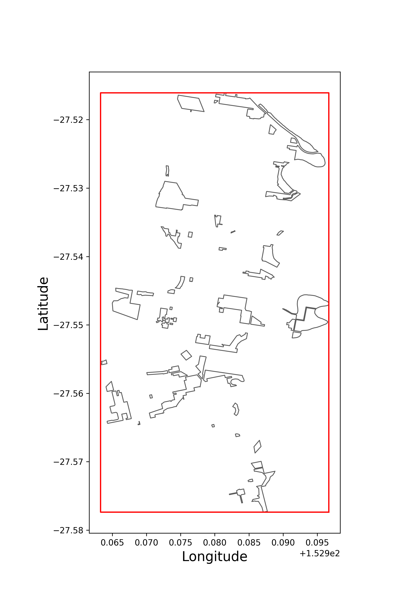
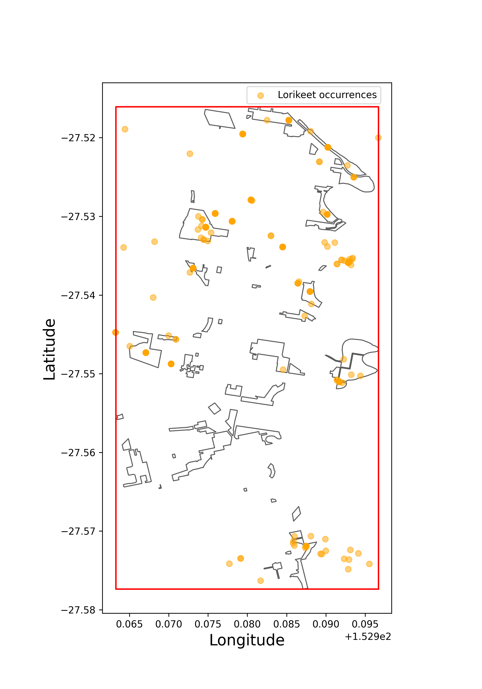

Spatial filtering#
Adapted from the Spatial Filtering galah-R article.
Callum Waite, Shandiya Balasubramaniam, Amanda Buyan
Biodiversity queries to the ALA usually require some spatial filtering. Let’s see how spatial data
are stored in the ALA and a few different methods to spatially filter data with {galah}, {shapely}
and {geopandas}.
Most records in the ALA contain location data in the form of two key fields: decimalLatitude and
decimalLongitude. As expected, these fields are the decimal coordinates of each occurrence, with south
and west values denoted by negatives. While there may be some uncertainty in these values (see field
coordinateUncertaintyInMeters), they are generally very accurate.
While these are very important and useful fields, very rarely will we encounter situations that require
queries directly calling decimalLatitude and decimalLongitude. Instead, the ALA and galah have a number
of features that make spatial queries simpler.
Contextual and spatial layers#
Often we want to filter results down to some commonly defined spatial regions, such as states, LGAs or IBRA/IMCRA regions. The ALA contains a large range (>100) of contextual and spatial layers, in-built as searchable and queriable fields. They are denoted by names beginning with “cl”, followed by an identifying number that may be up to 6 digits long. These fields are each based on shapefiles, and contain the names of the regions in these layers that each record lies in.
We strongly recommend using galah.search_all(fields="<your-search-term-here>") to check whether a contextual
layer already exists in the ALA that matches what you require before proceeding with other methods of spatial
filtering. These fields are all able to be used in the filters argument of atlas_counts, atlas_occurrences,
atlas_species or atlas_media, so they are generally easier to use.
Suppose we are interested in querying records of the Red-Necked Avocet (Recurvirostra novaehollandiae) in a particular protected wetlands, the Coorong wetlands in South Australia. We can search the ALA fields for wetlands.
>>> import galah
>>> galah.galah_config(email="your-email-here")
>>> galah.search_all(fields="wetlands")
id description type link
0 cl10829 Murray-Darling Basin Wetlands wetlands_mdb_name_only layers
1 cl10831 Murray-Darling Basin Wetland Groups wetlands_mdb_group_only layers
2 cl901 Directory of Important Wetlands Directory of Important Wetlands layers
3 cl11192 Ramsar Wetlands of Australia 2024 Ramsar_Wetlands_of_AustraliaWGS84 layers
4 cl11004 Ramsar Wetlands (updated March 2026) Ramsar Wetlands (updated March 2026) layers
5 cl3001 Wetlands GIS of the Murray-Darling Basin Series 2.0 Wetlands GIS of the Murray-Darling Basin Series 2.0 layers
6 cl13001 Wetlands GIS of the Murray-Darling Basin Series 2.0 Wetlands GIS of the Murray-Darling Basin Series 2.0 layers
Our search identifies that layer cl901 seems to match what we are looking for. We can then either view all
possible values in the field with galah.show_values(), or use galah.search_values() again for our particular field.
>>> galah.search_values(field="cl901",value="coorong")
field category
0 cl901 The Coorong, Lake Alexandrina & Lake Albert
We can filter all occurrences for exact matches with this value, “The Coorong, Lake Alexandrina & Lake Albert”. Our galah query can be built as follows:
>>> avocets = galah.atlas_occurrences(
... taxa = "Recurvirostra novaehollandiae",
... filters = "cl901=The Coorong, Lake Alexandrina & Lake Albert"
... )
>>> avocets.head(5)
200
PKHM�\data.csvܽm��ɍ
�����|��d���i�6|�l�X��o�
hg==�տ��OVe�V�ٙYcE�G��Z+"�s���c����������_���?}���O?���G�O�������?��������^��>����O?��~���>���>��ӧq�v�g����O�|����z��ӧ����Y?���������oRL���@�)�>��/.��8��_�� '��?}���ϟ?�w?��'���� ��?��j�������᷿m �4?�����ӧ����[]�xa�m�2
��R,�8�pZ�p����[
���#���\�t���{qL>��=�`o�w ?���q��~���� ?���>������������ ΖIgKK<�
��a��k�և�1
��;�ѝ�j1��k(x�lߏ���ç#���r�����C�J���x��c
i��+������
[g[)КI���-�>��kH��Ut�(�v`Iy�1i-��a4�Ě;
������ˏ7��H�Ue�U] ��y�0�W'I�ß��w�t�Uc
�����
�`X0���+j�P�Z�vc����D�txW�����-]�m�
g�W���\��G���x��������A������>�Q��@)�
d.��H���
��t�͙q�f�Z��y��
R~6g��4��������7H%����`���e��*\
���'�
n�% �a_��~"��yD|��\���� 7������Sm�{\��^u-���bW�'(�)ns�a�Q�I���.�C�����UC�8��˽P播���l�s�X�f`
�]���H�I
�r��/v���n�2�{[��|�c�i�ש�̫�ҽV2q|64d�J���sl�;Pu�:!X�pqT���J�v&ߴʟ��>nJG<��JL8 M�+)���5�]�
��� g��&y��p
K^�WŒ��p���XW9��>�GU�D�����/�{'q��#��������C�����}���4lc1�Lӵ'܀��C��[���~�u��3���d��5el�
��a�m����t�v�Q�>���XD7����u|�X\5�9X�(�a��"�X�}f����\
� ��4�B�ϰfhU�
�s>`�a��29p�
`T��>0hu(�����̻!AN�̳�+���
Ά��f@�h��#[�Ϝ�F�04�{3s�}>��"�TO��cU�� "�����^�I�l&��&�B4����������E���ez���G�pB��>�
�/Ln��@Kk�
,��8U|�
����-dnaX
.P���;Y������9�����_�Y��H�WK����]Q\n�K�1�ٿ�u��Y($G�.;���GJN�+s/�����-��k!�2[G���,�rn�&q��k��=xP�}�IW_�%7��sK'���35��1{����ʬs`���8
uM8�E}�I��B�A�&�P8C���PiT
T�
�/�R%�[c�Ի_)��1l�o�*f�O?�y
~i��"L����.�ע�m�|
~OƜ��P� ��f�I=�2�%��x5<�;�1q;n+Un�#�d`�}G�C&^5�E�
m9��I�7jQ�����3���O��B"�F,#&N#���Ud
��q��
�4�
��.�������V�pc�����*�gKM]PZV2�R,�̲����2p�]XB�0��el����
�q�q��>Cȁ�t!���Z�g�JəzH�ݸE��x60�S�.��I��?P�%j�*�8��8��� _괓�զ����N�dRn��T�%x����v�3-��-�16�ٺp����|vac��`Ͱ���9�e�+!������7ZoZu:q���c��r�a
,�U��+�&9�4��V!����fհt��]N�J��\�
e��Avw> Y+� ���5~6nc��&
��xPP)�����
V�[��ѓ'��7#� �2�G
!'?���"`��ʰ��O���p�1l0l�0[������Z��� ���v�7�Z�C8Σi�i�8��M�.͔yJ3����d�� Ҏ�)���(�>�A�
�S�L�9�Q[ ��߲}@�]@��%�l
�rౌ7n���m����y��f�fM�=p0x��F��Qtc����
��{Hm!�f�\a�{�yMP� ����+� ���%|#{:��Z�TN���k�3j��
4/b��L�tݖjy���`e����] s<Z��
�BI�|��&��s�B�B�)X_�-[��V�jn��ǸDk����6��η� *��.��tΝ*���!j֒�v�$�F�Q
� �=3�8�5<CIr=��
B}�4I�k3�96W�spm�I�C.M���IW�x��) W���[D]��j�T��]N<h��
{N5I�w��/9���i�\�&+z
U���V�
kZ]�e?b�����v�d��Z�����n�#:v���Mp~0��̢�Ϩ��֧�9��KUI%�9��V�~C
�YǜKR.�ք_��j�Z������c0��F-c�^�a��֗���O���u�wϻ���]
�Z�L�1�d�F��n[��s�p���Y�}��g�5�*�^�c#�-!j' ���IR�-#�
_��p�u��y��`�kY�I��uM9:
xv�8�VD�zo!�l�\��3��
�E͊�Y3V�q�cᏅ�ж\]9�/��l�
�����&��O��`�p���+
��%-|�����)$��j��AG���U��
0v�#���Y�+�z��3����
f��|� �2
�0�X�&h��VyȬ�Ib����
�>%�S�����җ����m�vg�H?��pil�
��f
N%�*)Ԙ
Y�rx�}�����˛��`��j��q���h��f���F�h��/d�\���\ I�Ě�r���m���=�d�e��
�.%�-��J�nr�F�O�V���{YqYAOl�:fx��Zv�ÀaEz�zs��#B�}�zL���Mg��sY�K$qR�
2k���kÇ/��� �B������ ل���W��G���
@U�c���9%�f��9,���o͚�
�O�B��a�"վ
|O�f�9�81֚_�0@����f�N
5@E���Y,q��k���2>�ر����}8'y���v���鴬�@�\�Y��e��V���k���Y�;K�
+N�k���U+P
���Z�^5�����t*-?�8�[�8�<",���U���p��������fW���liz6����v��v�`���u�NȊ<i�k^��|�9�s�����J$z6�~���Z��2��[�$^&xZ\n��JAG=�Z���/���Ww��������wc�Q?��ݿ}��O����O��� ��?�� �>[�1r�T\�V���]U���Z�|d@~
[ϖ
'Fg�;��Փ dx��{��I�ng���h�n<��>����O �����}��3� ����#i�ac��Q
mx
�T��X�ab@<l
d�]]�o[}�l��NX���n&��>�0�j}�&������X�}
�!Pj��;Z<�yvւG�T@�w���i���l��h
�
r$V�ހquRrQ�ʥ�<�*�Ӫ#��3A8s�(x"�3!X%
��RXx
�d���Z��a��m;`�f����������r
�]]�o�����wKs�Q�w}�-8���1��2b���t5�}m-��Qir
��
ި5o��Ս��\YB�wuV~�>�gkԇ�=e���ZN�Y�m�Q���s{�ۍͤ�v�u4v���nJ>��U�Pl`���r�k>z_ơZ~2�s��*ɀ2�&ҏ�����]��o�u�죁&�, �2B�Fu@
�-?�D�%��v�n
�Z�Gw�J�LZq�+�M*ĥKJ����a7A:8BN�\a��st5Ss�Bma%�(���Z6�����$�hVE��t�bi�8��R�l��ek=
Їpr`�&V�-����ْ�����/�fn�B*n�e�z��:rt��,I����s��;
d�{k��q6���с͖Om,��w�W��[�ȬV�J�5㱙���pcD�a���/�>����?~���;�������? ��g5:<��8Ku��2f
i0��;,~.�ͧ�:J�vVi������+6���j��#��$ޖ�
p��Ʃ�_���
���>���߾%뚈F@
�šY��u,���+�~(E|��~����ϟ�d�C}�A7#�Su[<ə$�
�q��y�<e��l|8��_Z�idZ�o�]
5r�g�r��N�S6j��;zskkL h� �X���R�JQx��.����s�{N���:Y����v��
b���8
�j$��J�]^һH�:�ǭ
Gq����"%���(����������+��
�-b�o[����vqW���s �� �e���]�j�}�C$����}�8+�^�í��9p�7U� ��j_�OZK�_�gẅ���單�����p\��X`f-��
�%���tKW��ج3���w\,�bb�9Z�����2�Ҙ"�m���ɥ`����n?��L��t,
C�cBL�ߢNv��#5����ۡ��3ksa�vr �dm4նk����SwG8��0�l�TJ��ͽ��U+�{k�����
Ǯ
u�'ݼ
�y�BX�l`��Z�R�)������n�up�[p�UӲZF��@<W��5ʜ��`w�u�����
+��vfk��譣+�C���*K$�C���'k��+��S_:��-�F_���TF��A���(��b-�̏�7YW���er��YPa�eA��Ӏ�7QI�G�iv�r�k֒�X�ז
�іH�{,�4���ƏF�0L )�{Lc�Y�M��-��iݴy4.5�
��k��j-0<)O���e��a[�9�ѭ]<Dk�O�vKu�X0�e���[y���9�5�-IU�Xp��X�Q]������b�� ��y�lWnasӫ�J�D+ <\;I6��Ky��E�Ng�m
' �&��N2�|�����6[�5M�[&��\��8�
*��nqb�.αqj�UK~.=���1q
#�m��f��IزSP��،���M�w
�
eÛ$4:�j�W�f��,hx��:�}7���Ծ-WRO�s��U���S�멧�b�e���b�ʨ-�5��n��ڇekcl�+dnW��.�U�+���y0�eri
:���gx�D�������
f%k��XF������95ۄ^��q
�_�u��j[��MH['m�K��̔��:ئ��JR/>k+W�b.�w�MN�E�}��5UӬ�J�^S�O�`�߄v��mB.�x��
�Ѱ!�ي
�/�^�$|�,#�:{����Fp
�2��nL1�w�P��#e�zB��U\p�~��d�9��DȻ
�
�e.�E�26ʃ蜙jNn-
+@H�
1�E�,�8�#������3ki��(�zr
/�oXd)8�>� wo�n�zVQ�RD86��l��%kx�l
qk�Yܤ4�, �V
LH�Yi����<r����F}̜&@�VW��~]N�_ؓ��A���#�uĭ�
S#��)��Ԕݨ�Z[�+�����p\6�h���\\���d�[~���i�˷���J�Fڈ�;<<ٰ�l�����<]�Sx�T�Q>` %�|om,8�.�w[�b���LA�m�~U��;ި.��>�Yh�cْ9
�GEfO��*�EL�7�]c$+
X��loz����QP�#����N&�"�w�֟a�f�T[�����
�n�4� � rd
�\�a
~c�DR
��&ܮ��R��vlU*�
����}�]H�uш�>���A)Z9�7��]���J�M�B��p\j���r��NbS����1�v:^�[��ؾr�¹VS
SB8N%:i�[�@����:������Wo�g�w��hR�)z9���l.�%G��>O�����X}cF�RS������6��z�m�t�(�i.A<R�g
�O-�϶[<O+�Snn��SZ�����5d<`��K�s�*��<��2
k�hhYV�En�d���Wb'�R��4�̙^U�ԝ�-`Sk�I6�_p,�F�
^(U�%��֔�Kj#��hi
Ʉ�;�i�v\�ޖףO�����^��|O��Y�z��%�� ��1{P��~FWFR�^d=��/jXؾ��fh�~En
�H���U�V�P���^�b�+z�����)��a�>:�^�A#-*8�ɴ����c���I �d��~���i��;M�XR4���F*�O����c��m볝T���q�(�
�e��&&�/}�Ko�%{)|
�<� �w�
�Ԙ������jw��jI9 @kj���*���S;��ZQK�I�cy�b��t�;C̀
���1�5��P韧מ��t{�3��H��&l�i���\�R����K���_�V�Ti �U��B�k�9�+�\|�v革k,Mt�;V�/����>���^��$g��tq�w��$�
����Y���n
p��8y�|�_ٚ�57N���H
*|�I�6�ɉ�'��l�S
�Q�%;�QF 6
���
2-���-�W@
,���ӫ��zt�Fe�%>��6�&�
���e��%��MCws����e�Ag�L���[/^�x;�_ب��bW(O퐇L>�j�=���K�D����I��Z�L�%oO��˞���
-�{x�N��B3Y�٭���(����n��6�kAT|yJ혋�p���S�lbLow�f^|���ԫ��L� ��WW�w:�9�
�L6^햆ϯ���"@�w�.�X��躋60��
a�����Q}M-�뮊@?���c���íe�nSm�����:���սi]��M>����
lҸMGc����v)����p��|ٺ��|��#_$٨P�e�" AA���, ���5��άO�"�����d7&�osН�`��+it+��Fwf�5�3`-V��Y{E\m,fO=�ԁ���ŧ�#��Yi�Ҷ����X?+���6w���o��-.3l�9HB��Q\+�F �Mcw�N��0�;��i�پ�)m9���Op���D�t8q���T���
��(�&�s��RL��Y�
�@b�������Lϓlˇ��
@�/��<f\"k��E���m�ԯ���<��N=��vd[ZΉBF�6���P0ݘ��c_��Ϸ�#[�xD;�!U�K�)�⪷�Fm%g�XnᵒN�7��ҫ
�s{�ˬup:�y+�.�h���zg���e���] �����=��>�W
=�R�L������u=���,}5v��-��䩶f[됔��ɵ�^x�P� �D��fR}��.i=B�rgU��x4m�f���LZ��8���/ˈb�/��=
Ǵ�m1�I
��[q
2-]����.�5�m�?�����l[��W`?3���F9��Ti�
�ƨ����\N
R��ڵ���}��Ţ ��e���tV�z;�֍��~��"�H5�g�w�$�K�0�+ݴ�}B��xC�'�2�1���
��U��GMq?����m��!�bJֱs��|g�ރx�*���gJ6T�e683zr��) ��V���oYN�}�Q�X(xI4�����pe�μ��X���*o�p�:~�+�Y��_
�HRV
dP��V��$���
m�j�����&X⼟�EСr8��j3�
#%i��
�B!k�%��3���|_�T{�\�-H���42�� l>��sb���8�_��]z*Q�_��b�g�g��K��_k�K?�-l��
Fj�x��M�:һ֧I��6G�S�zԥ�
;}`ȫ�w)1֪�[K-�b��g�ޙr [l�Q����\-�z��a~ �u
���7���3�R2OG6�c��
�Ѳf
�ǜ��0��إ�̌`%a`a�[b2�r����VmW�����@�+���Z�����ܰR�~t�?^Ւ|D��
���
\"��l^ZZ��(���0�6+�0F��p�
;0'��@����g�=-�E�g�\
�R��V(�-M�!��ٌ�I�|�A��7ז��P�"��� 8W���i��8�
7���#���F��
���
����)Lֳֺ�+�֊�M̄��ƕ����Ei�^�_��'p�b��!r ���D;��s�b>�+d�=�i�]r\T`��`C+�\t��톗�j�E�!ʚ6p�>F3���Qk
8S2�8����Z���+W��&�\3�A �%���U��1�-^4�?IJ 8pHv
�dm��(�[U��<gX�s
*��ji�
��k��n�^��,^
L�P�*���p�/4'��"E�95��Mð
W�^ͱr 0Z�����-(T�E�
6�^Mf
�����Z��,��t"�+��mdO��![{�����&��n;p��p�نxZ=*W��)#'I������V~Q�ъ+Æ/�͜��m�
�I%]Wh����� !�&
����◶{W����x�S}�Ǝ�Y{(�X��cs�V�3�I�X���
��7JvbR���
��eӰcւ�����C��ja�U9g�99�)[��D�J�-�D�
���o6��W�&�Ჷ�u&�n�Nȳ�36�� �ؠ5�iJV^m��{�m8�2�.Q�/a��^���S㙕諾U�����
W�I�������S���- @�E$�O� 8mtwo̾
O�eb#Z����&�Ať�`g�_nNI�Ӣ��l=v�=%�E���5���U���ʣDp4�df�i~$y�/���O�-V��;KO
��0�F�J�v��ɒ
������RF �Ck Oc\�K�X�z�ˎb[
-����v��7S�K�(��T=
��8�:�����,q��a3fm���4
����J/��~y�K�婳��l��k�a©y�:M���IX�O�A�ܿ?_z�J?_i�0uR�ڦk
��������6y�R�Z}�Ih��
��!�r�ōZ��#�/X+
Y�Ns��F]0��O�e�-�V�L�4��&�&x,M��8m�
T��z'����<[�U�3&a�&Z��w `@z��Z}o3�<
��i�$'�4��ޭ��v��?HJ�Y��y�
�6Z�w���:]ŗ
5���<~S����;n�5j�j�$�! #��>\3�A����ع���ޜ��E�'�HSؖ����&
�թ�g�lh�q-�I�$l���lħ�i��K�I<��'�G�;I����є�7):�n:MŘo��/��yG܋�YG@>����ǎ�V��@��˚}� ���C�J�a���ü��ot�}VO��qZe���m�
Ж���+���kk媽�
�;N�D���i��h*���<<g�!���7@
�;�K0g�^]�R& s����+={
�6
�Иf�%g�_X��$�i|�|R��y[��(�����X���Z�8{qP�+�r[��UBD�Z�
�L�
doX!
𦓼ʡ&[��X����o{N9Mڗd�!ho�<� :�H�.Yn�`�>���
���
��?A�]Q�r�!�O\��³�K��X.9�[�;9_�qux�'�
������r�d.zU�t�n����]�u���һ`��g\m�p�Zā�5�����L
̣
R�*5H���h'�swU�ߜCc��(��ͧLı7��pOiL�R�5L�+�i�LR �<)�~���e���(�{Z��W*
@��e��L~[��詋��P�t��}��gk(/���m�\s���x.�D�沷�ͧ���Oΐ�� ����xd�ʵO7����oޢ��e��ek�Q*b� V�Bd�
`E�0�̱�[4t.�L:D��!IJ'�ۖ�
�l�9�R���Jm�{�ߑ|
�0o����m��ht�j�
X���ZHߑD���� s%����6L,�Sw�F�
�m����+\�7��G��a��(��L'0Y�
nJ�i�b��(��z�wd��~�?뮜�e�,meQ�\�|����h
$p6�m�D�{A�N�lJ�x> ��+,���4�bc�w������Y )on���b�%$6�ʸ�C+QgP��4�*�9�� $pc�w�e����z�b���1�s�p>@l�c�Y_���>> �g_��ZE�����y��#4�s�8�.r
��빒��iF�� ���<������
���T�>�����
�r��{�R|wC�2��kj/&��0EO�@{�we�"pO��&�C��I\5��d�$�I�(
?��w��>�����)J����k�ԇZR�{0C��ϖ�#%�_7k"�2JS��V}
E]S%� k
6��z�'9ەC��;A�4m�]g��\�sr=�rq�����\����!~��j���Bʣ}mc�<�V�,8}�R��@�|rsPMM��b��������S���������|94���7bu�+
1��hiԁ]Ir^Z�,+�_��
mlh ݮ�l�Q�ac��3`{R�J(���Y
^���u,u�Y��Ś��$5�nu����5�˼�?�������~��� ����ӟ?����>���a��aq=D>��jC�ɰ��VR�6��(@y�ⳗ>BO<&�nl�
�
�⬖I�@��i�<�K��N�mS��;Y����5+O�g
PZj[X�i��
ZtB8Õ�Gc�[��v�����)�Z��y�廓F����୩�G׆F�`���pK��
�r.���×<�V���:-/X?�Xd]�)X6�$�<Q9��
(x������V�_�Z�F@�:T�d��+≯
5�|h��㢵 �dꟖX�aG���J���x7�������� ��D���Z��K5NP�Rףּ�hkyְ�%U�
(�k�:�)���8\/�ư���K�,G�W�h�@��O��L�v�R5%��W/Y��-��X_�z#ޮ�<b�
�y���F"��X>p�z�j?�e���-f�`�lbM6l�X��i���q]<�חA֩����l��{�l�,I�۳
(��&�������
K}QqOO�?e��jR]B���v�MK��[��hud�nQv���2c��[e�ɭ�l2�B|�lj�+\�X7�
�B���|�s�\��@x��!k�zs�/-{F��M촤�ONކmZ��a%�9_�hOË�oÒ�Pʤ^}�{�
\xs���0��-C�_?~���Wk��� n1
:e>����s\�T������Ve��>�k��aɴ(�v�n#��
��c��K��
��/[c
���6"�7U��ِ��
!3
'
g[u�1���6b�H=��$v#
(�a%��֪�)���?�4�<19B��vM6Ĥ&GV����
�TtD�IZiW�D|~�d~�aռ5q>U�
㯪���֧�\M68���½��4�K�&��Ӵ��̡�f�E���8�7��Ͳx����ָ���z�uި�Vtz
Y�r�E�9:Q��"��$_U��*�
c�Z���P�8��p�2��`�Q����!�ԖMdɊ��X:1�0&{��vu����5ft�l/b �r�&XN��`eX��G��x��Ae�fqh�Qo�OXVي�:���g�X����Wf�!�3�I��H� 0���}֡�
�4��)N?�^�͚��ŒL2xڭ
'8��L�#���D
������Rz� n�6��>�=�4
���mC�
�@l
M����L㖚b�-�Rm�����<��ޡ��c�ec�,@[Y���Zʎ�M�X�����2.H-ه&{�P��� H�
oZ1Q�9�-��o['i3V�4���q�
�yJ
7�9�6ni���1qT���Ԝ�Z�����NL?HqS�#�L1.�I��'*�үJ�ig�1�g�M�NV.
�#�8��\osy�4벩W
�}�L��]��1�{,5:ڎ�း`5�F�L�u��D��"OL�4,v�j V��iCࣥuj�&/�x�i�Aָ���R����?���s�@Qu��Ay-X6@.��O��
W}�6+�Ff\����h�ۦ*'6�Fk�z������#���
G��[2Ui���[Q���*2S~ĬCH`����fŃ8�X�,�5$���^
x���y�v[iÇ��E�57��G�N�����[�Yz���>E8���f-���i�C��|��R�)�J��lB9�� ZXDo��F.:�����ô��-w�Ι�����q��^�[{�V��%up�<p�
�Uk���ڥ���o��{��\�r�����n��I�.�
�d<{}�7Yw`���)�|mq�eGTR
4x�C���>�hí[_��M��$�
��3e/�ב�ų��ZW`
5�0�l�L̑�U
f��"�ʠ�f��]|��L�g��@���[�ւ�W��/�6kGNN̷SJ�*V2�[�W2o��ĭ�f�F
�0��y:j&�-�\�
��i�g}��o����cӲٗ�wrګ�$��K�� 2�t�/��R�����
ޜ���mNH2 1+��ݔzR�9Rk,˄��u5��ht}��v�{���1h
�E+Nc5�z$���Td��a.�ȭ���^�M_����/��ѕ2�f�%�Gh�n
y0|���kؔ,ZL����8
|k>�(,
gbXu��*�jZ�r}
����{���au��jO�`�>�[(���#�p����<Z
n���j;�`�K5v�{�/��~���w x���~�
n7�5���=�fm�U�k�S+�x��qEiً�0O��:d<� y�\� ��[+�}{J�N��P��
bH��Y�'aW�T�V7l�'A�R�&��Ee�Ǡ�ޱz4��[����W�pl��D `�[�� ����[�,{�&��Z)�B����V:�iw�8����'V�eQ���ҁ��V�%��H.�7� '��%w���'�$�����ĥ�������'i�j�v�}��F��UB_�R�t}d��Mwn�ԅ���IN#�s��є��� �,Z���i�U��'�8o6�8h����&��ja �O)u�8[%�#n�k����Kj�ACxꞚ�6�ތ
�"Y^�3
������G,<b~��d���c�E�ZIQ1�R"|W���ʜ �[�/YaVo9���Y3/W#�|���O,��2vOZ��J�}�8��9�lI�ֻ�C������K�po2�pi��[2����ZB!͢���OZ��u�Ā���Z���� qů�����
�qg�������8*PF��!�"h!��T�c�$���ΔA�M�2�
�Bk���+
3u� !&�I�R#���6k�:V4��p���n~�1����Ub�
�
[��])�Zs�I���{��3�/�-��2l�`+��iX8�� �IR �/�PI I�
���_s�v�\4��i~&��?V&�
9[�,
�ˬ�6�e:i��
��e x�6�G<a�|w<:��y�i�����1�t�>n%�:�Ŭ����Һ�rIV���h%�x�[,�ʃp�ȦDZ?G�&�l�����Ry�Ƅ����,K���v�� �#:�N
�����efm8[3E�hI�9^5:�+�< ���P *jM�J�w��� p{.
B�mBYÕ�|
e�����[�pcQ�o��C���"�F�B`�#ЂI呛��Ḷe9�z2!�T�0j`gj�� K�OI��7uX���u��cj�D�!�+��ؗP���
~��2�Nos��6W�'�s~d�v��,���8
ҭoh�j��ŏ�J
�?�2�v�O{����Y�V�_
��[�/�V�]�IR�x���; m�>H�P��P 2 Y�}9�,�4�D�sάp�
P#��*<�d�1��_�J���N��������JϏ0��k
V�TWJ� T���Ly�����
�a_ �
e�w��d�쎜��
�Y9�y���̸�!�SP�0�_X�iͦ��b:�)Ƿ'>�e����yJ�F���2�����6=�j���*aV,
?�p����wh�nd/
�HH6\
!�%�����t���
/{�C���2�c?�6�M
����
���^�5�_^��vv#@�$yؠa�c�&�c\��d����R��陋�o�y��,���1��dWL"e�����W�?�-
��eZڦ��u�vH�tP��&�K��S�l{�ײ[�;�Ё�īV��
J�Ѥ�n��Rm�і�C
�c�pl������>Bk�Wy�������÷C����C
�Yi3��:5ђҁӦ�#�[F�_�/c�8KN���,3���bݥ
�|ZiA]���vt��}��>�0��ó9�j#qkl�j�RoRй�;����l �uĿ���.i�Tc
���
S�V��-S�(���k��,C��ִD�Qu�
��F�R�Y�b�/�Y�"�S��,�
l��Kj�J���;��>�YCu���0��dJx
!�pKNT�ݶ?O�
�̫O�c|L��(�1U
�h��V m��M�\��H�"�����̜�BKө/���F�4���:r��e��2�4��<�T������u�>ɢ�x�<�6e4 �
��Ys*%�=9����ɒjJ!�(���
ܭ��g&�T���,��g�5|ޭ/æS��?��rG�
��Z��
:&���p^`�bmx݄�(��/����?���
�]��M��r&�l��Y��4��34�9n�g3
l��Ȕ<�t"VBo�S�Tr9�� @( ���4��(�&b
�ouFy���-� �`==ݿm��Z"� �/ç�=I��#
-
��
��t$q�q�Zq�M��.�w�w�t�
��4Bhm`��}�
���à,�No�P��}Q�
O��y=�ncaf������p��f^d�e
��qK�8�S�O�����}W���ZIn�(nn��X�11��.$w�*��e�1`l�/�|�U���!���\3W�X)��mHH
L/�(�I���n~
+s9�3@�
�5k�ƺ�7ʸZ�T�6�1Jum ����*%P�7��"9�G�?��x���=�5��c����@���X���l2�w�"��m�[O���&x q����D��_��La�f5���u�P��ޒI�>B�=�m��Pb�`�N���;<�bC:D�5���t��
�%L<��>� ��#})5�dI�`l��|x�����ס�|�'��2 tuw���B
K֔�`U��wSH�.�d����-}���YF�n.�)&H�I����ʲ
&�-^H��y�g+��ۏ�RZ���q�뵙c1:zY0
�17NO{eG���C0x_ F�����͛�zs
Q��������ms�4��4ُ>���&�7��ʳ����;�oDJ:�+(���Kjgߌ]�&|�)/N�o�
j!@��SYWDu/�N�L�9R�
�0��U�R\�f73�Y�]�x����Y�u��T?g��FH6�,x��d
���}�P��&<.�6�~F*�Ǭ�b1F�l(&��#�)�%]�
�h�nQݸ������4� �E�_�5o�1�4
_4k�j��ڤ�s���?�S�m�����R��]um����y
���l���ߥ�2���J��E�v�±V��٭D�Լ%
R�W����J��E�v�!�㨇���_�3�feՅcn
�K�2���Wn�Zg��(X�L%�-VF&���$
�VC��Q�]�
�A�T��������#gk��Z�v�D�Y˂��l��ct���r���'��9%��8���drTlB2
��FW�e�J��Wk�8���R���t�������I6m�ɵ��U�ŦS�C1-X��&b�0��E
&���.DӹO5���z��5\mM�}:'���#P7X6x�t�dl�T�e�j�$��+����X״��ŭ�:ܵ�W�N�
k���M�!�Pf^�1���6&��(�A�[�~�Y����5�Z�#�p��xD�-9��v�����Ho�%�v�]��V�J�]
l�#�`'Q����C�t^#&��F�V�-#?\����X[ڀ�/#=DLvZX)v
��V
�P8A]d��@ Pc>r�vO�X-v
����L1��kْ��%^�0��c�p�bK�5
��b���#:�
/_֨
CY���̍�����mg+��k��f�����+j_mV��>kS�a�d����'���Y�H _�elu�����iW�1M������S�y��v�
��qf�MԔ�M����S|��
�#��&܊2J�8
�ڭB0`���>I��е=� w��ك{D7�
3"XM��yQ/=u}$
�'d�"6(�h:��A�$�n�g��������q� lC_V�L�5�c��\�c ��V�'(#+�
��e��S���x��7�u��(ʘ��o�V
�~
؇�� ��R�ңO��mT�j�2@�
�fV�G�ڮ�
F�)Bܒ�HÅ���I����H���������à ̈́?��%���,x��Vkk�Z�g�
A8X=w�ɕ�B/%J�\���b��y����
��+9����PZ~<m� ,b"
$x�e����_LM�:�
���y�����Z��SbM�\.p����[�oF+��킃�VM��(M�)��˰�����$O~FP��f1�d.�P�*|a��P�ڭg�@���5��M���50x
���2=��ޭ�^�
3�s�e�@ ����t��c,���W���[���jjej�>�<F�5b*�2��pl#9ay�5��:��+
$�/���~�g+��e��d�[1Z��K�
jR�(����:�P��g�'���`�6h��h���k��WP��om����7o�=��R������l��,y=B���}o`��ͥn�@�p��k�V����G���R����N�f7&���[j2
�O�du�
Vk�Ȕ��{0���L�
\��a=PO�}�Vk��TqE
��55���~��k��
<0�
^��[>v'C�3v9�4��G���i�5R�?�6�{��
�%I�t
���ث�<L�+�[�f��
��D\+d_bP�
���a����[
�& xE)!�P��׆F^3��[�tLK5E^& 5��Ї.�\1Uy,O�7Ecce贚'k���զ�4m�䵱�_m
�b�� �l(�\FT3�ZO숣=rɺ{T� ���V8�G�f�
k�������p�u~�-
�£OXd2�NV4���V�5�G����S}�)gW�Zo�����բO�#��d���p[
/B����=�VA+O-���jM %ـ�dS�lڌԆ�ܽx�3d����kM$'E���A�&˹EX��VF�Pך1|��s@�� �K$K�]o$?����j�'a9C����w^Fr8\���6���ʘ�����x|���-֚[�x7'�����
(��LC���,M5���ǧ=˛o"h�8:�� ���/Q�ڜu��m-�Y���K�$ArV���;�V� �w�]�o:,��r���+A�,�`�=���`��I�Y$W��6
{Rs���I"m�T,�KX��s���ד�E<���t){��[��Bm��:�9��'�8���w�����v�{�2�g���V�P$Y!����4�G>�[$V�#�#��hey��ˋH0 �G�!�
>vΆ���:�o�\�r��[(8�-
���5�˱��u�?��#SN;o�fgZ��"��eSW'�%�5�q��:�F���^��}�=&�v�e��$p��,G*Ce�v��%C����
_��7k���t-ٰ��'^�#��{
ME����_��q{U>Ж��]kC.�g��P�_ǚ�������M�3�p
�th<n,��U@�R0�J���4g��9�����wXoZ�7'n�j�!9ZrԄ��c$ ��@�����z����5���Y�����Tk��r�;���(8r&���+���
d8���a�
2���0
+ZE��D{������,�T�Y��xɼ�v<�ˮ\�j��B�lr
!Z���+�VJ���a^�|�ӀBɄ�ZN�F*8Hp���d�����î�W��ۗ%�<rS�npKx�T��l�ҩ,�o�v�m�Ėoc&�/N@�G��j@q
5X5�ךmtS8Ԍ ^>y��
��[�`�|�4PwM�7�j�8r
���w��<��}�-����2��
p
�A�"��7�������o�{H�Ċ�������F뮊��,�-��Ei���YD��l�ʖ�/
Q�-�� �L��6����*��3 4/ƣ�c�����lv&�u��X�H
=���mw>նm쁥ګL���d��߹*s�Y�;��y�־哐m��
��|��
(�����\N�} S��hN����6cg�հ���9��w ���ڍ��L�yΜ2��K�c�v�n������s�el�k�6b�P'C�Q
K|���kD�S.{��
���u��o�����K��) �����
�6,��էU/͈
�v��״�
�͑}k�s��Ӫ
�O�Z�t��"EƆ��������Fe)�'���Y�}��4����n��Փ�.𘘱e��Ph2@B���mP��������ZW��l��)V)�j}*mp1��Bx'�fV�6��mw��D`
�s�p;F$���r�RR#��n���Ɩ��]�
�U��ac%�4ue��ӸP]q��
Mf�Qb�B�{F��N4e��9�u�$������x�=H�ZƊBM�~�1��ҹ~y�Ǖ�y��� ���;�g0)����MqI��"|Uw+�w��Q������6�
��B�*�\�&�ݣf
��ǻ
��qc���G��8~}�4����OҬ�zzN��M�S��Jq�[5��j��ťD~h��0��6ڰ�6E�U�3�j���j�h[IsS�f~G�� EZ;�$���)�6%�pg����J��ڲG�;��}���V���n,��5�x���j1R���
3���zW�s�0%r��%{�6
�a��C��oO3�9 h�}�3P�l}���
�!fr+�\����0+
R՚��I�b.����Qt.͘_+���=��l�v
�����ʖ��XnD*��hi�ڝ'Rl�צW���ed��9����D����tS���L�g�wI��:�<[CǜV�Ӻ+~r��]�e�g�h'���X�`��G=Xm�ċ�5<@u�y���I��X��d�8��L;GO����:����F�r�$�`
�
���2��Ʃ��ǷSJ��ީ?�����֠�}T�S:���������ޯ����*B?ـi0
2Boc�}��
`��wV@{ڐ46֟�'~7+�4�y3�J�L��t�T��s#IF��w���w�\�]�l�:zq���8���K[�~��
\�W�,
�E��Q��\<{_^n�atx�����=�x�Bù�߱I����
N2��v�#N��
�\���\�!wElO�!m��L�uC]�Y��=���<����
�6�C/A��h�z�n�=~�o��T��S����n8�n���
�5W�6F�`J��쌪l)+������Oȳ������w��a>*$ED��y��Z��U��
��Iڏ��m���}�z�,���e��o�%��
/'k.�; �+�,�.��KVX��]u�4?t|���qg�\��ͳX��M4g����,0N����)ߧ$xݬ|ըR��n�#v�ҝwh���9w�m#��,&����U�sf�
��Ws{��b��73���O�O��Y��J����ԁKȂ�|m
�ֲ�u��2?k�ii� p��Q�������?��ǃ��60?��|��\�o�����r�҄l��
���xrr�����Y�ٷZ�g��f�k
�O<�f�}�w���|[G�"&2m�
����*�.CC�T���
�i�ҭR����,�ĕꄿOLKy�y����Kx�
�N�sg[����ХZ�V
�$[y�N�oUI���P�B��(cQU������:��_�:q
��3
z0[|ZH;�sμ���]Х��
�e��M�k�S+��:�Y�|լ�2,qU��We�Ӱ����
G��e�GP�i�
Kj�����'*E]�O� �O���3l��(H�l�K
����V�k��}�ٷ�z%u�
S�a��
X�1R༻h�q�C���i
Ux�m�
G
iOo
���IG_{�;=v �j�
IiK\Aa
��ۏȷ��2�Z�c�|3
(��aT��O<C��}Ȩ��4 �����;�z�[߾jl����cxV/��1��M��ɹ/S&�W�)K�|�xh�y�x
]��_K�&�{���������E~���0���?���ֳ�w[vzE�2L��
��;���� P6�� �� ��&
R�1Q��/�<�A�Aܫ��\9,q5O��_�|����4���'ɦ�z�i-@ݦ��#Ȯ{�k��O���܌?�aj�ȷbw!1�����1f��v��i
%�����sx�w�%CB�Ev!Z�� �{xe����+O]C�h4�x�������'G
.�D�k5
�#��w�)6J�����?��Yĭk��H0�m�-�DL�|S��'d}a�T�Xo�lr<��
�(0� f�T�Y(�������)*2֫wY�o��_`�R�Z��<�I*�M�J�&�Ӗ��|UU.�Л��i��L�/B�>�/��||�Ꮧ��W?����ߟ�
k:4�3�&b�q/{OB�F� A
�C�����ξis�;Oi�T��������zKaPv�U��>2��}
Т�ɾo3s)�(��T��M踐�!���ff�M�b�g;oJy��R�������{���/?��ӿ��_����|� ����O���������0��}�/Br�R�3�iqʌP��"��|�2��F��?�A6֯j�ε���
!�s
�aJ����}���
�`�2l�yJl�o3�șs���8�Nb����_�7��͒ë�����W���<u�
� 7d&}�m��E�t�U�?_�3D����
톻�XV����QNz����)�p��� ܗ����v?�-�=l���=���
�5�5�f� �'�UB��!�R�
�����
��B�Z���҅R�L���S��픲 ٣
g�Sx*�%}<�E�k
��G:A��
½�����
98�FH��qe�
7~�ؾ�}�Ý��]����
|h�_(q]����Hҳ%��ف�3
+7������+��/��|/Lb��ֱ����B��';u+�ػt_�7�z�
v�Q{�8���/�?2
z>ӣ
�:h��e�9=��tS�[�b����iK��<��j�^c�`dL��nH0���-��^fՙg�,����Y?�?�ן�������Ⴈ�7������� ���7d
�����������H��j��y�r,�DT,�%�v�}t�xu�}nIg���!�����������9�:Y ��
ǎqfK�!F�7�N�Ġ��@<�8Mb�mu�^�F�55Vi
-_��O�
�Vwv�|Us�T�fk,Ӈ��［Z>qv1�&۩�.�c�TSs���:u������j�59�n��P�,
O
�0+��H8j�
]�{�E�_?�߮~�s�vL��2���,��UB����)�J�7}�eƗ�X�=�O�o����+�����"(�\�Ɓ��� �{���I���;����Upn�h�ú��a�����Ͽ�����^�
�ư��
��c��X�%��c�Z�����_~���?���/k K��6���95�)E�
H]��qi�|��(e����Gp�S�č��Wj��1��m�� �.�S�z��{�KC-��^v��#kޜ����IF��^+���V�}Ȉh����$��!�Q>��n�pa�t^�-��R�J�q;ۭ>�n����)��|�R9�FB�MZN������u�
}o�+~I=���_v]s8��f��E�m,���
�:��\�沑q�iN
�Ɇ�pNwxi�S�?�_�
�M����up{�
XS}����9�]"����������7-��3ٰ����J�ͯڑ-:��y8��B��s��2�o���f����ػڴ��v<`
\Ugx߃j
k��Owu������C���i��B����
�Ͷ��������o-�M�� �&�6i3��k�V�Σ3�L�j�
��R�gK�B�E3z�U�4�R ��/ KƉ&����$�~�����tq{
�EZuw_j,��$������u��ӐO�_�a��N��i�]��E�ߦͱ���:�rm�?��K4��l��[�%�J�kV'"�&r�����1��l���d���R1�LN\�봶�^��
�����/39\!7�����+�C��q��Z���nL�����.�qk�7�� c�|�6�t���Æ>u�nG�'��ll�
Cݩh���l�=��PI�U���]C��$?^l{�x��N) 5�*/`-�\mnQ3��i뾿�|��v[^B���$ �]��tOmu�X?=�SJ/�ȷ
�/e ŴF�h��t��
��i�0Uk�����cڷ-=X�� �%�¦�Ro�Z-+�e?�<֧-%��
����[_�ڬ��c>�Y����,���B\)�l)����������g��<��V�[>�4�Q��!ןZ�gX��%ȸ�>�I�B�����w�ؓ��ὃ�*��� �wIn�O�uCR����㍟��e�)~{�Oj� 6K�K
�:�s.�
s
#���h��OoM������tRӗ���H��(8Κ�l�
��9
��[���B��>��K+����ݵ_ȾcP���+9�X��Z�7�t~ӡV��4?��jߦ��"kAvY� +;�ZܡQ��qV6d-��-#�}����A��+�khQ�J-������o�m�6cڟuB�X�oF��N�ER ���Q�a�-��4��V^�d�L1w+j��2}dd�K$"�*�ق��[�=���T���w��z�T�&���-�Y
+�+�~����i'a<����n-�\hk�/�7&N�.ݵ���I�6yF�l�}\�E]��:r�8i~����ߵ6��9'G����4��#,-��M��]U��֗��/��K���>Hfk�?�cTw>����z���>�;���g����>�Yz�Xp#�xB���42 ;<�N��}}h}ɩ���V�;�Vh{�8��S��ܗRF(��̼(}:V�we�o�?Ϯ�#�?
��w��Ӧ�_N\W�X�K���Y���Ag*4�wD
N����|F�A�twN���q�,���m�[r�u:)S��G^�}_�Z������m���j2���&�wo��h?Gd����7.��.��"��DN
�>���=ۦ��EdL��h�֮� �"���p]%l�.��|��J�^#���|�yƈ /�<�
hӓ/Sh<Sk��Շ��`�FO1��t -��v^�h��>'m��
��,t�e�GvE��}x%����k��:>���AV����
���Bӧ��+��u�Q]�=�k
n�sQ���,����*����s��|k�
�M�<T��� ��4�>/d
�Fq�����
*�5���$�yIp
k��l��h������Iq���uPKW�ؠ0�o.�K�
��Yxg T.�.���*ߵ7b���&]�:p!G"80^:������
��
���9��d�/=�/s{1��䕇�&:��^�����L�r�ؾ�Yޑ�E+N w0��6�
��ۑ�s������e�q��-����Z��k,�\n55�!�ؼ
�e��p��<m}:�y܅cC��p��
��S�ȶ��˷�YG˟>;�8����XY�
+�R��e�w�0�e:C->�_�F7���j����tR�1�-�}��0�*�����W�!Eߝ+y��j
��22��H
���'_r�j8����k%�껜���ۙF�Q5_Tc �%Y�}�����r�GVeIq�]�rFv���؎��P�.tj~��)}�ɕ���eՕ�}��7�FhM�c���Ֆ�m��Qm٥�gA2qp����"J˪}�B��tt�t��p�-ta�Bg��9}��V]����M/T0���m���K���~("n!L��Yڈ�q_��SU���\N�ᗗ�zt���-�3}��"�,s�����ܡ&��~2?3l�.�ILm��]y�+��]f���X���
U~~�����6���/�#���E��f�F�� (!Ex~��om���us.�D�$��Uq�ڰrE�M��q�لWL ��}3������e�AT
�|�[h=�����
G⬱~|ӿZ��GGվ�D?8�Jq
�������0���Z�Ӹ�0�&�rP!1R�Pi��z���U��{!q�[�F�/j��
<�=,���s���9�70��w�"����x.�YռG5��-�
�IVi�ݝe��f��h��gb
r%����`X�s���Eo\B9��i�IW�a�ܑ_/d1K<V�sF�
8-�j=���**�:~���<�_��eiMS+w�!��:�gTs*4�/Mr���V́-+[�c�]!ķ�֭�v,�
�18XSO�}�E�d�4P�ӟ��s���,7��p�1�r*Q˸+z�E/a�A)VdЗ�9c�wv���KF�����h>~�q�&.?u`�Q��f��\�{:m�O�:-���� �U�|��HZ~�����
�0!��/��L���̕I��1R��&m*߸
�V��xn��D��5�.�'T6�c
c��ڶ�nUy2p��<
�(�H�-�Wy��
�FJV�P�~
g��������~�~Y�O|��_���=��*���j@�����Ȅ�).$�A
�k��$�y�^�E��5I.�e�d�� qF�3�� wg\��9����)�k��c;}U���Nj@�T@�T+��S�1�X+���f@v��+��Ћ�0��R�����\y)��o�k�IJz,�=�;
6�qUj
�|Rr�rN-@���
�sy?��tl�W��\�!������}�żU�rj�W��?��WE�<���s�RN�F
?��Z
���
Xr�:�
߯���Xzqʞ<�^��煏e�q��VG
tQ����$@o�)
^:-
�����>���Z�
�
���j�-��}�z
m<�~�.�P32��_�Y,��Y��r���4�Y)*{�ξ�.3�=F��%�ް4]
����(�[��oa��0�+ŝF����Ǽ�'�t�Ly�̮�>�3t��;r�ؖ��U��Y:�7=���s(�L��8Ĕ|D.;���d�F�>�٦�۾W�
�vڸ�
�:œk��5�ؐ��1ڧ����@g*�D�4GQ/_Ot,f
��������� �Γ�ʋ���t��ݶ/��L'v2Z#`�������k�5�I���������
�ϴ?���"<k�zy{�I4���P{�> ��S�u�#������s�{�ɛ���J��i7�����'n�M�����-"�j��ج[h9:��k���-?n��S�^����r��e�LjH���&ox��(�;�I�#E���k��t�.� [�d��]w�Ȥ�]��4� �)e��s�Q�k@��%��w�c�j�#Co������\���V+�-�b�
�]87�d�W�zcd�7������G��I���熐��L���w��� 5�t��dB�b��l�-�N-�Zo��S������%�t0'�:�D�.^���*�Hk႙,��� �e�s�
L�pE��9�|d�J��v��8ޫ1��!��3%TJ���kT���-م�șY���Tz������������������ן��_~�_�/?����s=������x�4S&����� `
km�
e�k��A��EF5E��+||��=x3��}��
6�맫���6���N���NIU��Y[6��X������H׃Yi��^����7̢���]�z�k���u����Y���\$}�p*�'����H ���e`��[�
F������9;�G@֫���������
�$��ׇ
�
C+N�TV&�g<��u�b��J����}�+���&W\p��:�tt�(�.m>o|�'����uN��]�F�,�Ks�(p��#�J8VM �
}�dC�{-{9�iS�ӯ��ptv�i�Gh�iS�[ �m�_n&�k�[���rP�~X"�
��"8` �z���^�U������z�Hb*�k�(�$�
_gY��N����>�7��8��ong=�=DJ�F���#b]p�.P��W���ݱ��͢g���In٦lF���g'��9K�a4���4�0�s�M��j�e\gt=
3�=���o��Y�J�=w�� ����} y�gt�
3��H�2�Y�q�6\$n�}���(���ď��'���µ�����;�In�uEj~WH�Xy�I���I��W��N�H�V���L�І��9�V
ݝ"/O�UO�U�N�.�
#���v$�� V{��}{c|��Z�x�o��HR��/6|>(��&eJ�8�@�'&.tM����E�9KE_�Y~>ӣ[{:p��ُs9G<
�r"��,�d�o�}�~��wtɝ3���^$~L+���ύ�u�gU�`���6,��kX�\�gZKZH�����a�}�4
^7�����
Ǒ
o��:r %�P�˚_])�$I*�|DY�u��2_HW���%��㿛��{�i�n����O����8!����,�+-]:�D���˖�4��B�|�^.���L�"E�#u<�{��
r<�ݵ��Ɗ=
"��{�3�u ��Zm8��4trV��
׳��2�i��٩d���n��tM` |�q�ȝSXȆpQ9�i�-��@��ӡB�< +�'~C�c�:�������j��
�v���}�
�&����Q��e�6�|FԷ2k|h�Zb�w�%�����eW�d�u����2�z[Y��ժ�2"#Ԛ�@����Gf�J��l���T�M�\�����-lj�0c����0
$Fv�U�K� [�)�d����%�V���L{���㝍��^`��=;�M���*�
4����R�n������-��Α�5��I>��K�r~Js�U�<��{�hE��9y!2x�
��j��(�
"7+ڋ]�sX�G� f6�̫��G!��1���1iݟ
�/S�V�p7�^֍�x�:���P����]�Z��
����ѧm�f���Dx��!^�Alcvճ\s0r�9�?�(q|�1"�}�,Q�.����Y�����\H�Y���t���ԭ��[~��m�˗�I�=m�4
G#��d��|��jq}����Zq��$��Y�э
D��0̥��9E}
�4R����s��
,p?��c$��t~��#�P���3˰��ȇ2��c�Ş_3s D,.�|�پ�#$�����eY�C�YFX{D�y�eb�V�t�J�'U>,�Ki�4u����=h'�'��+-{�ҷЋH[��B���q7����3!����q*�Zp!��R�%�F�m Gz��c�ϊ�g)�8ǥ�A��
l�#:�4�m1+��x��������
�i�Hg#����r�|q4�.����=eI-n'epUd�:�ZRv�K)�x|��KZ\f�0���W� �� �YFN��~���;����n3�`S���.��e�f/`<�;
�s�Zm��ٯX}���e�05��a���Ю� �]�^���VS��N
�L�B���7�u��R}W(JU� o�m/� v�ld�+r�p�,�]AUGx�c�xe�z��i�j���r�lS]��]U���%�����A��f#N;�
��
��~���V�u�OF_�F�Y��4��),��
�Ѽ�P
���wb��荐��Yy�8��^"��^xn77S��է�-M�PG��\�����]�JE�3� �no]��L-H^
i�����=
_�ox�4l�����2v�uN�ɺ����'�E��Uq����bw{����.���-��\��+ݭ�I��7��ߙ+}g5��S1�Z
8H0�[��L]#ѕ�
iD���g����=8�@+�j�c�Ռg��K��(kni<�<
���m��yC��`
�XWj�K�)��F~��fv�
�\�
bAc�=Oj�f��{�
���W�4��m&���X�}��ȃ��9��\7řjJy|�-ӷ�H��%t�V
D�� z
�
�Ȅm~tf��,�|�
0��\������;� s9.]璝��
��'�UJl�jm
p|�)��<mL�i�o
փ��
�x�
R��5*�
1� ͚k���~�R�&6r�=���7
��D+��ۚs�u�.|����\ח��[��ʏr���g��"��U�R y�� T����>��^��R�;Y��=��f���W'���[k��m�G�k_5�����t�夝���˵��5��R{U�Y�|h����{�-�3so#
2��. ku;���ʘu�d >���>=#Q9
�W�
Oꋓ%w@ڎ�-���%�cC}�_�o
�h�
-��l)��� �����t�|e�}#\zкC>�3�ʻ����!� L��E���^�Μ4{�}>ō� ����\�Gw������9��N5�n �!��
s25 m Sq;���� ��A�Rяm���]o� ��cմV����u"
�&����,:j� ����
�SQ��-��$���F��
�v�Hs��g����k��6�C�����FV��f*��{�t��d# �L�6��\�W
�($H��jxw^�������d�����M_� �Ìk��w����qph����m��w_CO�92y�������͊��`)]��8z
b>C,�xW���*;V.)�e�Y,�SS�I��] ��Rn�I>C�
s�}cX,{��&�es��Ӂ2�I'���h
�����-(�v���#Ż�%�E��t
�4�F���h�D
��F�>��ؾ���]���Tzn��)9Na;Q~4!�7u=�n��9#���̗}/�}Y�X{9�#�OÌ����WH4g˳�d�_�>�ȺjC��]l����e|6qD����틻�*.v��둠�ƵeR2�:>�4a_,/���I4�9
:V6��
��a�Fd �i��D? �|���\d���B�E&2�l"�-��\��#~�͗�:"#![_<?K{K��R�g�����`Q�V8�������
Xڋ�� ^V���x�ަ��s �9{�
�5hw��t�R���9[9�7xj�^�/�Q�õƨ��pT�l��
FD��^�Nh���UXu[���j�X-���+D��Jn
_ Io�q��F
0��xcӹ�v���ϵgM��I�����j��uQ8�ᛗ��EC-��[G��
Q�#��=���i]�c'�`m)��>V`Qs��h�HE��]�ì�-�����.cŌ���#��I
�)�;yë���٢�
��wigB�w��Gd&�Eɔ+���v��U.��-
䘢�J�����x8we��u���Y٫��V�4�[ =y��lky䴻�m3�;e�7
�/�;-�����5
x�[Q%�*��E6 ���Ι% � ����#dـ��c�.���
�[�$k�0j���D��
9��5g�ц��ߥ-|�e�I��8:ŴZ��/mn8x�N��y��J�w)A�~[|�mq���G���x�
�bo��5-����0�ɼlwx����j��]#��jy�\[��`�ғoK�3��"ߴ���(�j�u�U�.��ۘ�Nr���y���>|�i�ot���n�b�Q�#f�JZ�?+�^����3�'��K�T\D��G���ˠs��z�R
��]W�"'��!D�g
V A��|>uy-��t ��2��0����
�w4{$;N�Y�G����`�e��ɑ5
�)�v]bB9��v#ʞ7����P� ��]��kf��˸���]B�T�}*���p�նJ�y����
��y�� �f��S{I+��#����d.�aYw�}ܥ�x�mœid��L/5%�&����W�Vg�K
z[ט�A�4�����pO�.�f�EKT���E��m5�����,��K���#���=�o�}Ε�� ;�jw�љJh��
��
��1��2�\]C�Ǭ��Ҏ��$�m?�oݤo�M�4���H�}+����
�Xj��T�o��r�RnM�B��>��
��Y��1���
1+?iy�O���Z�)Ȇw1�
߸G��b�� O��(��R�
�a�S��v:���F�ٝ��:X��c��[�Xv�F��y�ܥ��H
�]F<�
å[����*:��F��4jE7P'����V���GO��G�������Zii��
:�̘�䊨�-A�r����c�諈9>V'��L��HG�'�t���s��!���G6�@�u��E���8�]������.�5 l��%<�_�yN����q����X�b|雴�C���� �9U�)rq�S
��1(GĬJ����FP�+��s
��ay1������G
|�\����n6���s�%�b�_lҭ1Yy���6��
ֺ6�{B�
�H)�#KVu�r��5:!�t�\��@�m:����}T��P��=a
�sO�>C�3�o-2g
�����&�{��ɹ!Z��,�y��vyGN��2R)V�V�'vm8'f���Xݦ��,6��dY� �~� [)tG@O�HA�t�0Mɗ�m�ow��B��+���d��Y|��!-��p{�ܐZ05
*���[z<�F�ϥ�C戜(�tQk��`s#��j����
y[W7�T��gT
����^3t�x�r^5Km^£U����
����w���k_�~̬�$(����k���B
p��z���5.�ك�ȣ˶�z�-�+(]X�����^�"��u/�?Ȝ�ۣ�ض��f�\�+Թ�4��`���Mϥ�^@���1R��[��Z��{����IoW�������K�:i[��ٲ�%�|_��ބ���Lͮ6� �k��qZ_��V ם�љ�x�ΜRV���|L�����n:��F<�2.^ؓ��Œ�
���r�<
\�H��δ��r��ϙ5J��廖�b��4����+�9�G�1_���
~ ��Q��3��ψ<�������Z������RF۾{�j���I8���7���=��O��-��!m��
]��c{v|d�n�!��d;Gw!9I\��T���6���G��rRV����>x��YPoN�:R�s5{$
w�:h)M�>�o��j���ᅍ�HA�A>����(+�_4���t �
}W�x
�#�OEf|4.���� g
�4=T��Q� �P`�I���ݬ�ŗ͓�Q��w.�
h-
_�LK�5
O�^y� ��#�
�v��
D�d��9I�مd��:��[
c���4����]���:;�g���k���[���8\bqm:g^��gZ��*uDxP�<�I�5��<�H#؎NU������� ��U��ܩ_�ց���"ߨ>Y=�k���.9E��ۢa���6�EP6?��r���|ê��՜'b<o �H
7��
HL�'n���g��A�Ź�}}pIȅ��Y��N:�-�}�8Ӛ��vZ��c#�)*�0�j��~��U���Y��y�d��=cd��
�m� K�z�4����kZ�%\�9�Uj`ݞ$ ���s���W����Qx^�����u�y�$��W[^��l�֝����Y�K1�/���D u�d8�����&������8װnm���������G�ə�
��I%Ǽ��=
�y�lv��2!�}�����
�'=� �C�GG. �,����Sk�*��"����,��M�:ɷ#=-EHc�Ύ�
����04
�{��>�i�5��!
MD��.Wn��*V��l����u�R���'q�sC�
A+5��%]���-�>X���5M��}/��_�%4�8h����_��z5A�$���ʈ��`��3�f ��k�]���Ϻ
�묅�s
k��<ݼ��-���Ľ�T��g}�
;���n
�s��S�o%hB�\��|Eh���������ZB�JaM
.��M��j��eza�<:��
f�
��v�0|���D�6d��42����Q��s���X,)���D"�֤�"Ujn��f'
�lyy�7?&�������Mj����N@Ϊ��q��d GB+dݢѾH�?w����FJZ���h�͉�GjHjW�a|/-�������gɞ�*b2{~�G�;�jb.��R�E��f��lWYr����Y��d��H
�ڄ>9W������ƽKW���:���6�fk7F�
g
�k��7�e|gq�M��2�F.v\��b��D2��k^�9���5���:M�T�
ub\`����W�>*(1�;��o����T�ن��e�9:r�Hƛ��"J�B�u�N�[f�Ip���$Xbg�uB�R���
���:;���WE&���(�z��3�H)�C����:ʛhL��B-�J���Blҋ�4�;4�o��x4+��Ȋ�CK��7@f[p\�"Kh����"w\��rN_�������K���s���Y����7�:ˑ�٫s
.C��� �?�PZ�;�(����ӫ�M*���빺�ucxB��4F�V�~�Q�+��"� ��˳�Г
�I$
Ia\|���s�i�r��#!/�χ=a5M��
9��L|�k�
�c�0
��22ي,L�;�oAݳ�]]p:��t���<w�c�<�o�#qK�dv�M�0�N��N�G��V��us4&�
�q�0�6E�ߺ��8
�P�p�N�y����Y��I�Ld�x��!�X��!Ds!d��H[�� ��8V�ЏG�Y�%��:���������ܛ(�(���[�l�v�[��rc�¹�9R���!A{����u�q(�cx��o+�F,2�٘
�����s���X��5_nl.���(�q��T�㑸u���苄1(���7�r���J�yL��
jgi��fG��C�
��DNb
$�`)����A�7=�Y��M��WY)8�Eh�3������GJ4��|��TX�pu�r�P#Go�ݟ�{3�::��i�
�l���-Y�X/��/ZN��V�p|�*��7��
I���匤ˉeE�=�N^�Vj�
��Y���w��
�H��4�qq��,x
~#w$�����ok�0�Ox�2^��i�W��]
LJKV�?�6V�������(�T�}R^-��|�+S0�Q�k0=7��gds����@�ҽ��d쥧֛Դ v'g}b-'`��?�
�� E�m!
?�2Ns
��c�Na%�F�'���'�S��%��fv��l����<aqO8��H]ۢ�=`�q֕���;b�+v�v��KsomBr��{Ĭ��p��c��Rf
ey78*�@�L���yX�3�hV-Қ����U�Dc�;�|��?c#(2�N;#;��X��o_EՖ�F�������2�ٲ�Ҕ�Ĥ�f�_b���o�Hbr:
q�������tf�
K�����f�:�
V"�{ �����z��<�*
R�;?6nrv.Cs�{�e$�>E�9X�>L]�-(�Ώ4����Y��5�� �
j˗l�PW��Xmכ����|�1�f��源FR���V�ٔ�H��x��J.Ie�F�]dY�2p�.�����Q �����4�T$���]
=�
����u}��u����(�/���ρZ��y����`�kL�ܙIb���A�s
��CKH+�
i�#M���׳2�*�ʲ�K'tW�PW�UK�}z�Dsz�� �}!3��<1Q8�96�F�wd��|l���;!�Me� � �%4Ftn���.Gz<�ηjM3)r�r�-!=�����
oN���4�E{�f�\��F�s�����(IJ���C&�5[�%��c���̫/zɽ��<�Z�鸅Ci{�!/_��7��ITB���Osw}x��'
��AxL�6��ފ���0�'�U
�o
,V�9�-�wQ �wљ'ΑSa�'�]£�4}��ТC]g'm�;�H�#�#��&x:��'j�3�Xyܲ�D�9��SZ*�����MNmQ\q�?6���������A���\��`7�W��\8�����5�6A�ի�#(�Y�vi����%��<�%�0ˠ����=��^B�-
;y7ҷ�ԥc+���pC��&����q� ����
�2wh�������N�,��N�Z1�P>���o�C��?N-��T�:���l�@�W��U��5�[��&n�u��H��"}[�h�fI2Uuͩ>}��
�L;�A;�zӊ�.�d^!
B�R�
���u���sm'�d��Y]��:��9���
�eٹp�Z)c*�-HLv
&7^0˜i��v#�э�MF�qcJ
�7Ya�����Q�!o�3.:�J2���o�.��MЎ��r��H�Ň+O+�Q)����+�1�axj]X�d�G~�Պ��h��a��JN:��[�2��D��>rZ�j
���HjY���i��U�
�t��,v��No�k�wbf���^���&ْ�
�F��s�j"��P�UReW��0�w^�� c`p�ă��T3�:g�˵�ɢ���϶�%yp����o6�K�8;+O�>��[
:��y@����ޢ���D<��M�C,6Z���?��V�Zl7X=�t
���)�F�H��t�ss���L��V*���7��W�{d#�x����X]0v��հ8yo�
x[DžH�x3��v���~BBe�%q�G��5�{��n�L�y�%�w
���R�
w��u��������M�]��TBѭ3N�
}��9�ыd NV�N��zX���>�
�a����DX�P�Z�ș|dl���:+XL�Y�
�`��
jmt
���K�V��$�%<H���N�=l(�VFv�ȼf
�=��XA횽;�FnS]�4�ɋ�m�W�/����|���P
1RFs�o-8e���.�7Izp��
�3�
q�جIU��Ls�b�>D6v:;V&'��O�Dd��-m�P%vW��d�pܑL�N�z����
h������n7�;1�xS�8>��p��K���aNo�f��}�Me�[�ݬ�Ḉ5d�@�19�!0p䰐�G��;b�o����\�9�飬2�c�
�/^��ex`�}v��O��J�9�ܮ���G
͕qhͲ�Y�I~���DT[��]Հj&D�5Fb����/x �̀�RpF�kiΜ�����D,�� _7+�t��|������I��݇3i���1 �
�1��g��Ȏ� h]�'U��\����t��⺈S�G ��o�"���o��im��N�e���2@o�SK��w_�����f��:���M�����8��ጥHÀ3�߭�b��N����V8?�@v
+s��e
��|�C�
�'��V��oʨ�0�IJJk�{y���O+5r^g���g��?��RD�DV~
�[%�h����M
�u�C+6-o�Q{�m�vm,Z�;�)�����
a�
�����/�tO���"4=��V�ҽULNh��{�E�w�i���N(����M����^iq�,-�;8���t��v9
��
yշ�wg|�;
�V2Ŭ�����TA!m�9QnzM��ǟ~��o?�4�_/m� ���_'�7���09�cEf�
��D�9�ҭFeM�~�:���� }N�յl�:^����?ߚ�U�c����Ͽ��q#�\���,F������p2���>�h���T�����a���C��2}ƴ���
?W��?Y�Z�/o
�y�v��D {����5
�܃��
ܳV��Y�+l.$�́�1
��l|���D�;Q�rI��2
bn�i!
e�i�`��Q�����^
x7K
=�۳(ށ�
4���3;2���H�Yc���u������
]kFf����yW�����׆�AV)��®%A^�ubZ��o��&�O�?��rr�z��*��^�۫��%s�G�W�����O�����0�Yy��i�VÌs����-��$����>)�Cۛ��V�H�V�v�S��%~�X1�ݯ�~o}o��t��rq
�B�>���C/<���4�gb����cj��]�k�'���|��z
��2{���BسYxn�{����eT��=��r��y�љ��\���;k�o]B�~ �>�Ɂ��C�S���jp*��9�����f{>��.�H����?�����ODa�$
�c1��t(r���-�غAѷUF߲�6�|��G�K΅���ch����q�ܵ��W����y���EO��r� ���=�p��Q�
ꌩ�H���RdEJ��,K�4�O
��*�{
����
\�'��J�b���լ�t7r=5����RhN�0�q������o�u��lW����_�r~�l��@;��S�1� &x�
]c��J4+�����d�a咤t^$�u��%�mH
��U��a
f>�8Y��
'���8��j�w3s���Z}F�9�T�%8Ⱥ�Oxz�>�'����O��l�m-iiYs�3#�Y�g��BL���5}��E��Wtj�]�tx�
�q�FG������k�
��
�Dx��y�#q��Xp��\����
}���9n-i��O� sGǁ��
γ˗T
P��*���=���]�7]��
3g�
��
��H��X'�?��V�:+CTz'Ip���>��#cu)�����*��Y�'��]�'�
��sÿ��
}o����KK�pj��gGZ��
**n�Ak�G��eeM��@�-����;���gR��!�7O�,/�hO>b���f �C�5e6��W|���U�
�T
�r��.e���=�;�6o�ut��NcUW���Q�Sޮ�z���z�e��@l7�e]
�R�&F�]tNx���qڀ.��d
Ѣ
� ͵`Z�;�K�}=�
��{Ǵ�����>Ҳ�
\
�V���&<�
%J�
�����6���i̜�>�����<����ͅm`QO��@N�۹����8~Z�R�y�9�O�L���w�̈V�,�����"�Kq�V�..�%��;)s ���G��b�{��2J��7
�[�w�ݪ�� ,
��8U%l�{�N<g�7DVG
�m�#o� [-;u��P�����s�����;�o^B>�q��4 �.��0K��*�W�t�
��Kx4�O3.٣���B�����|�͢*Ȗ�#��i�^ �O�pwW���e ;)٤����Rq';>9�R
�N) �=���Ȏg��9q.�N7�-�{�
Y��+;M�pu��g��D�9����ι�
����c� �E>�1���dg
E�����?-W�)�?g
X.ҋ\���
�7YR���N/
q��ǜ�j�i�|�v��\s��u�7��Vv|��#�%6����+鍁G�@SyKz�6�y6K�[_�KG}:k���dCWY�i8����d8΄��1B��
2��\�7E#�m� �[xJ���n��� ϕ&.a� �P�ky��
)��f��kj�u�a�E�ݒ��eM�&�@�u��`F�q�B�)�<
exO�P�{,6 .�
DD���rhٙFDpPwr�m��P�w�e
,�l� :�2�pƭYg�Y!p�'�g
�p{E�S��b�
�[�zc��E�7=a>�f�k��4h�H�
��i��R2��ߑs�Sy:X���W'�2�3d�R
�nkZvi��`���~}ߌ�/��h,H�]���\���
k� fvTge���d@ݸ�iU�`rJ�?�Z8Z��$���
>V�8�-~����Ux<rZ�5ER�9��a��
� +{�b�d�Ե�#�|g.�`�p!�o\pcVw�TWW�Y!����[X
��urn�aP+q��yK|-Ϸ�YJqw`�Z��������"�pJ�#�<t8��]��R�ߡi{<
�=�2btڊ���C�����1mo��d鱡ֳ�QJ��������sYcV�D�
��;i�I�ފ'd���U*�
�,\͔��x:��3y=2�0������7u�����$�����Q�9�G�G yA>�5������c{��wf=1Ü�
���̡r��|v�X�1���nv��YG�b֖� �m��7@��i4�:D�c�?�i�ܐR�_np�qT���H��(i���n��f
%�C�U�j�����m$���K����͎��Y�;X\4JӸ���/%
�OU
��2��ۚu)za�7�� #E��G��|Q��Y�p�fW�l�2,]�'�
� Ӊ%���Ǝ��������(��� ����O�G���|?�_�J��Pf�k��
�J�9�6_]���
"*�Q:�n%���v�P�f�'j)��lx�5�Jy�rO�����m����ל|լ�v}pƵ����"�t��?B�W
�|����BFA_Ƭ �}���r��_�F`�p
�Q�A�
�]�p!y�����s� #���s�4|��p^�����e�Q����ᘞ�ɥP�;#���ʈ�/�,ܾ:�}{:,���g�dz^('�F���.��Z�]-�
s��Q�`�j�Gq
ǟgKA*��b�x/
��F�U����H��Q�������k�0��2!D��
gz6�֟Js5��3#�sng��������]㱟;̨�/���Җ9��k[ȭGhN�����S<����s�>=��H��Wi�I:P i���۬t�e��6 @7�]
0��{$�׳�GFf�D�{x�
�ݨ����vK�f�f�m�o��?���h[���_�-�����6�����y7��#�xY�d�ݮ����i��K�����y����<��k��
s�ܐ��>֯V���s^�k?9�t8��L�ҳ�5�t�:�ٌ����s�~a�O5��y�SA�
��KG��ֿ�Z��u}���GD՝�_S܈�&i�q�^�)̟ ��i젢6*��=w
e���[p�))x���w;��@ױ
�]2�:�p��Z�Zg]��.�gM�'���=��
JHi�ǙK�s�� ��l�<-��D����3�q����ĺ��0�/Y�Wsh�u�5�M��LX�Zw�k���#� �&�cy�Yr)���z3ZJb�3�'鿿
��H�6ֺ���V�Ǒåf�������/�E�@ca���ge��_ȬG|�������=���I
<�p�P�������*�u �����_�
�K��?��?��?������?�����
��q�]��"����H'���������~6b��;=a~�<ݐ�S�˅c*>���*h~ْK��{W�o���g�Z�R�j�m�op+��Y`bn�V�w
v��tc�^�$wx�����"1���R��t��
��9���Dž�J��=hV
-��UF�3�u���gڽ�KA���x簿o�eY*���mX�u�5���m��vr�K|� L�J��e}�@�vXryĝ����̮a����
�؎�e��D���w<��$�Zku��-@l%��s������&,'��.H�I��1��X��)yZ��X�xr��Zt2�Ʌ�r�{}e������f�_�n�h��� a9vV��3Ջ?�x/����H�.�f ݢ��u����E�Y�3!��ɛ���_m @l�4���hO�uz
u�$�x��6_�$X
n�
����|Gp彔qV�G�������c
��
F1� �ǒ��b£�8�!+$'_��qG��
�ݘQ�j�L�?-�;oR��[i�3�[��=�,C+ju��L9�Kf���U�����_���B# �:F^n;�
&<�2x
�?Y C��]��yӐg�c02�S���n�9�A
]-����,A��Z �g�$x:�u��Zme������
HRV�j��|6���8��Ӽ�;f#
�V�eeh&!ϔ���m�p���͛����W/���mR|�f�k0]> ��E��
����٨Ǐ��>��9)=���a�`
��2�
�
�L��:=���Դ
�������c�Q�)>���ʑ��I�2w~&�
4�#�-�r/�s�x����u� '�b��K�][�t�Z��.qM
�|u���2�<�.u�T�I�`�B�ڄs��.���sa�j�|�w�6T������;Œڝ �^LN�$��i2ª�]�r�� jr^F)����\XGݘ*@��uF#�2 ��
0ل�i��y�}��^�12�dCd��
�Cm��B�]�Y���rO;�gl���S�a�%8[����j
3ry�dc[�����'��"�r?CLNcB��a9S��2Iۡ��S�6�|&��&������ݶ����
D��Fu{�'��Q�K�Z
���
��^��� >��;��
�%X�8c-nո.��Z��3���w
{�|����ɍ� �|p�
d(q�{����[��S�VV�H̿�u
�4c���E�ޅ�F��jyѫ���qM���6�
:�
��k
xo���Wy'��c�9��.>�}~��� 㴤b�S,?)�t��;���Hٯs�m/Jw�=�V� �=> ���q��n�sGG�u��=D�R�N��S5 ������&�s��|��e� y�c�$p�Y�-Ma]���5
�a�ځ������o}u��?����k�_�[�_�y
l"h���:�
� o��Cv9<�%P�٥|3�ӹHLB�Q|�dr���
��
�
�O�ʯͺUo�r��K�>�-���.L��x��I.��G���ʗ���6։M6ݬ<�A���v���*��1J�Y��.^N
sؠ�r����DsP�� �c
���~߿z�����Yu ���a_�[ۧH
�a�eoy"�Uk%Vd�[���R�-�k�j��*��7o�\���v
�8���o�+�����{6�o��=�^�{KF�k���4*��h�( _���#���kE|�G�o��
y(��'��+���L�x^����zv_��(o��m��젿�T�R���(�����40�(�mt��I
XDz-�\R}e�G{
tS[��P��9�k��P%ws>mt�e�ͰN?����7~�G����(��aI2��;6%��іCq��9}�7� ,�O��2Qc�s��fX��=I�&ЉP�D��Q������Noޛa��s��⌃��ex)�ÂQ�
����^XG��{Y�;p�v���S`g�`�k���j��qp��|I��åX(���g
��;oE奈�a�! B�;k�_��k��+-R�lw�~Ѱl��.�,�ukO"�`6�t�&�N��{a
5@��/���-�@���Q�1�eڝ&�7úa�sﰥ��S� ��s
�<5��Z�Ҳ�4����ds�����u
�PS�Ӗ-i\��
[�w���<���#�(~��.��fD�H�b���x~P�ON��_��x���/�h�VM��\�I��^��& ���W2*�V�P#jjFd�?� Ow{řz�\����km,YO*��j�#��vX��.u' ���l�k�j�N�Y�n�D黙���Ψ���`CM7�zu��
k����L9>m
�M��
C���<v⮑�lN�ϰ��Ml@�Z�0��w.7�1���H"�7��K�'��m���w��2�9�D8��N\�� �QJ�}a����M/
��[,G���;
)o�uZ�����$��'�@����߄��s��^��{g�h'eD6kC���j�X��������Lxv�z��y�=���(h��P,�j7��3��J.ZJ�
��_�"�^�J�h�r����ٳ巷�J ��)o©�vu�ĺ��3(���F�[�������Ȅ�/�2�J�3�
&<j����A�W�B�;
�=�2Rߩ���)ǧu]�q�G|�K|��N(.[[A�/���
v_�?Z�0�K������R�ǖr5���Lxx���0�:[�
���f�$#洟�[�o���Z�<��-��5S@̺�{�=C#O���ݺ
@��
�VK3t
=��$�R��On£N�("�ay�0�x��J�ȄR"���
æ��AYZ�V�쮝�l�y���'�RZ�yO{�=�tT�fN���?۱��n}R�
�Kfw�V~ͻ
�:��� "��e�7PF
}�V�Jw<��MG�'R�
4у��ޤ
(Õ��A�\���σ��iu�\
q��(t.
��5�h�
x��aM U~;�]��''����X���U�F�Vˤ5�v���{�[5p�U�#�g�
�t6��T=^��;����z6e
�j�KO�m�z���)��]�ud�{#^D�
]~��w/�~Uxp�
�o��/Q<�xЯA��VjAr�օ�^V+�º鏟�\��
$x9�1JVvO�d`ɑ����w�:�4�����<e�
��m��ɰ���/��n�c~�VYp�`�E�[ʩ�ÄN6in����4�
Z2��bջ7O�up�:
.'�=����U�# ���{�_� �lWS��B� �\«�
��gAM�w��KnB���B���'��)C�h��{RP�d�/c�6���Mlª���)�6
����Mx�l-��Z�!���cז��w�1�T�^��;a���e�H�{g
j�L$
w�ZvĿ�y��Vޱ�a5��|�
�/G�Lb�ݞ,�GW
h���Z��5*���ć6f�a� �^+W�װ� _
q��F��q�
���^�,>�
��q��e�y{@���Y�g��� ���Mf\%�tw��ݣ×/iS�Yx�!`ouc���t��<'v�G[��]p0�H.{q�;1�Ί����㮆qֈ�!��2�.���*��������6�`���QK�����X
( 5���~]�<
q�6Ũ_�.۳l�`� �ե4��
\4{
�F�K�k��:��L�܋QL�s*����AH�S�5�8tp����U6Ȫ�=�Hp���Q�G��4��?tG�\4̵��ueN��d��-�r�J'X
I��,�_ө���b#����/wI2�9��J91:�r�F�#�ts��:��4���QoOw�� ��N'�ǁ��l����� ��j�I�:�ے��
���$:D��L�PL.�C�۴��̅i�������ߪ�1i��:����B
����ut$O���V�.�p��sa
7�����HB�ku+�G�7��W
)�'KT�-�X�6Zr��`�n� ��Fհj�VF[ J�] �Y�ʼ�������a-c�T�ħ+��l���R��0��g���ƀcGa�2�H����� ���Ԅ
��v�,R��g�6�
��̺?��W�F�Q �Lp
p�g�A���XP&��fB�˭�]
����k�?A��'8M��
���Ƶ�8�
��7�_������h���[4����;��xG�Q/#d�,<���w��w��{�{o�L�����]H��퐥����!�!�]#'���&Ph��m{�cy(�T�)��$=b,/rXW�
�
���e���T�
��Sv�+�
Cr��.J��pI��zyLr=���v�-�k�a�岳�c��S!]rly���0?�ůa�â
mm�u�kE,+�2�~Ј�,I�w?_�ʮ��,cF
ӯ���ح��-��^8����B����}ZtO��:<aV?y�?ym�U���xϧ�"�|��l/W�.�%'�L�r���(na� ���:i���9~Z��w�ބ/IL��5u �����'�.Wf�X����,_X��K�WN��"��9�q�'�J=tn#�u�ZA�?��XY���[�)���y��~�O\�D�.�ū�@�
(��̦(�s<x� ��ᵝf���C��
�3��5Ș�ی��]����EeF�����{���H��e0�d�=���@��e�5W��.R_��ټ�
X�~�V��5<�B��ԯ�Ε�1�|͐�
L�K���]4�Yr���
��L�]=��q�x�s�Te�ՖK t�;���f�Q*
�x�c}.��T��gz��L�I��ƪ����Ocr��(S������H՛b^�����T�O���33^-.�{h��<9J�ŕ�cY���^Uͯ'�#d�������-�<fة�\�{y>tw�����w
�3(q�C5 <�ˌ�b���Q�I���}s8��K�(͜X�6Z@2�.�9!��/� ��Kg��{f>#M5ױՂ��b�6�����Xs�m��-M���z��5�H~�>��!�̊#�ꉖwФ�X3E�5����_3,,���7���e��q�ٱі|<SQI���,�&>:�39����z�
pu��wYT(����s���XޭyG`̼�]����B&
��l�̟�G��3@�]wc�ǒ(J�nI&�z/�<ZTA�
��$���
��N%J� ��I�c`�2A�@
�B��ʨ,�i��7���P����\�L��w�������4��*3���
)����}�ޑ��~Kr��[�ʊ�1
٬^B�c"��H莏�w�k�7
{(����"���v�>�������<�`�^|�C����otd�f.�%Qr�
_rq(쪼)��,�_�O/��-��/��:��!�6�Н�R��J�k=Ȝ~���ԍ���;i*.��
���p��e<$����
�%#4�n�$��w�
�(롇�_u��ԝ
(�j�,q�c�QXԌ-� d�G��[аLP�ž�MoL��q�U��>v��������g$�|�ӕl��
t�֭����6e}%v��|�~ߏ��T��%��_�~�vm��v�ݥ��g��Lw�����O#��"��2�}��Q}<B����z�9��D�'~O?
i�=���o�J�z�'UI�>-�2��NMA3�h�3��wל��e�����|
�sm|5
�J
�Z��Cu�k�&�>V�������}syʁ�]g���B�FDV�@ �i]δ��?��W�9}qQ�)��k�R"�,����;U �h6V������7�����5(��
�OTP���v���3U�u�]�������~�*� ^�*�w�|���
��F�������i
��:��z8ʔ��C}���o*��[>�
-YQ6��Fm)ihh���sޣ,�s=ƖSzu�T�WO�+�
�s]��P�v g�����&,e3-��ϟ�>w��
R�-��R^(�Ȭ������
��jýy�m�CC2o��̈́
x��Q"J��������A(k�Gv��
kG�V���P���ˎ������k�$D
me�-�c�F����
�^C���l
���,�u��?�
po�0�/빳H�R�E�H���\�Ꜷ����Ag�Iu�@2RlF��|҉��͛�vv����@.]�7�f�2F�#.0�'"�勒9}'ַ���O�$��#��l7�0����U`��|�$�"�E� �l���D[��������]�0a]J
,��`+ ���O�ٯ����\:6����o�g�����ۂ|T�*�%J7R|�M���
�6�wd�^�>$��#Wv�{5��^$J)������d]���ȣ�H٘kغt��f
��d
���c�w��MXW����W;�˚
�j�����x:��F|��������D��l�6�qt�:d�+�I}�)(|
_9�~,0���B�ݒf� *@N�������K$���(p)�u̐{�n값�x��kk����A�|�|>R
4�e{h�)�1���
��Ȩ��^}�?��o�H}(��}uWKr
�
��P
%"B}g��3��\�_�Q�J3�b�%w]��BQ��T��=��<
kK�ǫ�`-��J>�:��n]��J�|aN��M�3eDE�Ԕ��܅�7Ш�.j_�/�������nB���[\|��_
���Վ�W�_/����W�X�s-.�|�M[нwBn���=>��~������.��
?����H
+s�̭�����6�
�
<˹j/��e�����̭8Z
���R���_��=��'kb�(�
d)-�\ ��f4�S�#�-�w��
,y���
�yc�
1-ˍ�
�}
�XxW�T��{>��:e&��U<����bE�Tu���iMy,�����9�o���(i\cQ��_�<F�d2[�_+�W��
�
�F�ZbA^�=Y�K7�:g"��Y� N�yg��i��^{��bhH3�K i�jR��K���]����%���-}����Pk�����
{d�\ǫs��
I%r�N����ŧ��B���=��Kܯ�T�S맀�M@
�� 4*<��o�V%��x����an{S���
��+��k�����]Z�m��
1�����]j��:�猬��M����`�Gf��(U�_�z�\�3��=nV��M�t�
���ζM���W�^�_�-��9�-�x��3{+����
��m�?�����]j �qG���Bo.
�[���b2��{__A�����;�y�7�hn��5���Z�o����ҡ�} �|3?��}N5��+ʟ�ЋKd�\�� T�vc�C��"j�~�Iz�<0w�q�YqQݑ]"���je�
��%��zsͿ�#�f� �7�
��a�;�
t�'�8����O�Ł#ՁV d��+�g[�YM�
�I_z��!Z�:;�?��R�3�gšK���E<
�-N����'�W�#춮��X��=��QK��{F�=��XP���X|*Ѷ�w�(H�����?K�ĵ�{"���[���F'
�v�IM\�r�P*��]�1늢������\7�|��e�@�n.�\�#�<������/���7�%����0�X�X�Ю}
��/���<n�*G�iE��P)!i���j�8I1� �K���rr��H���MP�Gm}�ճ�%�~�q�s�Q�������� �^�<s�_�\�@��m�4��wg ��O/�dW��-�qI_�U�ΰ���O0��i��͓w� ��R��
��_ãoM����A�# Hi��\���[H�(�E���y����{�&� �����
ۚ�uYwr
���F���e�^ü
�7 A��th�M ��.P^\n��{(�8szt����xu�����2��8�^���}�+�}�@���y��B^U^B��02X������5h��ð��5���c����Qr�Ԉ��j�wh���S��
�F&z(������t�~
��X�fV��e��Bڱ7Ur����/G�G�����x������y��G�蒁�:x��%�
3̹|~���~��]2�s%[�,0�n �E���Z�
��g��E4����H8Y��Ps�2'�z
x�l��
��X��H^\��eJ���<�c��!
-���`rՈU�庎�/��/���o������������s�c���������_��_����/����������Q���u�t���X��z�0wOط����h�?=�]̾�D$M?µsi'U���
c��WW�
.3��RU*q��U��~���y楢�oe1�ƭ-n�G�]�]T��p5�1w� D_��5�qqW��ޘ�X!�g����+S���O�_�
�%�t0+�̳� |ܦcor L$�9��1���[��Ho0�ܚ��7R ����$Y��P \�����J���
��R�9n���[PZ�r��vx �#`=I�Y���5=a#��}e�u\o��p��hI_� ����
Jw�Ȩ%Tu=���{�Z�!����Ňދ�&/p�Z�٧\�\�
�w�;��8 �p�OO����ĥ~��;f�ظ���7t��֚t�咳U�>��Zӫ������,��u��T�浭�Қ�.#���Y{L�١-��;$�Rr���s¿�KU�w��?�<�
9^ȗS��]�]�pT��LRF�5r�[��3��8p�6��z�
Du�歩��~Қ�7�c�R���b��FҬZ��R��6�H��'�*���<�,�4|�0Tݶ�?�ʂ�����J +ڿ
V9,�n[{��m�v�T&�a[�&�T8�'º��F����a�y�R�Z�@�f�?� ���:�X2���$ ^�&�n}�𭤺ڗ�{�Ƕ�o�%We8W�iw�U]aRI)�+ ����%�'ª/��@�l�Q\gؐ
y���U�L�0sV}&e�΄QF�}&P~�m@c
��Za���\&LG7�(�mBn��S��
x!�Z★x�a]�5�������4j��t1��=��
� 1e$M40��O�H��f�
<h��*�� ~�p�>~��*]��✱�P��e���r�2�s
����%w�W��ժ���u�E�Jτu1���#�����[T������f��Ik
~�n�ބ��2����>J��V�i7i�6��^X��]^�'_-����*d6K[����1�"}X�<��K�����ˍ��N,�K�S��
Ւ�opQ�j=����+���ߋ�گ��#v�+_�?~S��M���yR��^?%�|�� ���-��u��q��5*���M����ۿ "�o�����>in5���1����c�
��5�a��O{���Z�nf]�b�����XKK��)�_��5YRUr=�|���V�!���ñK��1�a�`C!�~O2[��}
�E�
���_$,7
�
���;�]a5����R�����J��^r~�H�;�ו' f��URr3�T�I���}����C�l���x%�t��&������P��?�j~���������;
�o���j"=�|-�me�����ν�&V�]\���x���g"�����$��v
4tS�l�쮷��g]�N�QыL�1\���;���
�
��Hkg�֍��x+��@ιT##s��
:���"����4�U�
�.�����W#K�6�DT1T����6:ǾW��<WWe8w�F��aѾ^&�K���Vju|~^#X��v��r��*�zCw��4\gU*�
Od
��7�EE�=z��5�lҼ&�LG��6����;QՓ]��%
��$�X���2
X���Y��-f
yg����I�wq.��s�ؔOe��>��l��$�Lg
�v2��~����
xuj�B��3��F���$�\�*|b8w�D���M�gD��싐�;�6rQ�w
}��r�66��������]4�Dj�R�Cq�ғ���Q�*5i�*��t)����u ���i�\œ~ ��le��
�g���U�F
��|TW�A&B�����e����\-�,HŞX��b����D�w��[ס��C@��*|���[XȰ���~Ց�7�!�ʻ�l�s��o�<-
u��~k��UJ5S*�,b:�#�n����9FT5
0|q��ݞX��=JY��,�El/�� �Wm�DםG�_�᯾�t��R����ה�Z�Q9=�nO���5�1��ʋ�t�#l��V��;���@=���Ԣ�oq+ ��j��ĕi�U���7��s�
�vR��X��w
�ѦY���}jK��
���$�h2Қ�6^��.N98I
ާ��4�=��ʋ��9�
G�����K���
7���|Ӓϟ�����
�'�Y�g�|2��L�]CU<������)p����h���y-![
E��v����-�o���ܢ��F[{�ޛʅW.����k=���G��ɱρ��~���|=�&��~�
G=e$��R��$^{�'�եLt0*�����TAG P֍iMiO����1��@�k�Eb��,Z�
������9�cV&�/ۗ��r�
j�-����{Q},��.��g���ui���0V�>�?�s-��:���\�{���'/�
ǻ4w�D���
ı�B�F�}��7���U�Z�|CS�yLG,=]\��)�HUl�*�%�����]G:��l��-
�����<Yw��⤭r��ϯ㏑擑�����1㭧�,
�����E��co��5�hJ�]�QA�L]*
��?��3���|L���ut�y;��QZ�^�T'2��',��U�;��%֯e�o��o���8w+�za�k��e���@�J������f:y�i&���^�΄@[[��j,����@A}�:��~�RVi��qi��T �u-�R �3�53Ojذ�te�)W��
?�RQ�9��
� |{���w`5�6���(!�֊
�:�҈|�-�9�N2ݤ$sz������̲�UL�����Ӛ}��m�N��-Fϱ��nZ��[���������'�U�
T�uE���Um�jCXݖ�\?g
�
*J/���b 䒅��C��J��~*�ģ�M��I̓k_(����0�[x�R�Ym�}P��@�,$p�WzvI Z�.-����r͕j�����|�9���!��[����vˠ_�����/Y�\��΄�La�QåI`Mr��}^ 읻�K����c�4��F>�v/,
C�f�����B�Q�A���%'�o�AW߱
l�E�y�*��k��#��'��s+8�>
�ݻ��=�KZ�9b�4��z��i9�i�n�F
�忀���Q�F�vq���"=���sM5T��:PTVvh��Ւ� ����A��³l��{ ��b�T���z�V>?��&��5Qw_:��"�q�䘼���疒���
�� �M��}�
�PO_�
Fɉ:v�ϳ� ��X�s�C���
�v�G�݀ر_9E�}�x�y �яoZ�
E�H`����𱂏��d�#�����z�&YI�Y3��]����dn�,Pޗ��v6���uW&�!���-��j9[~QF8ݯ�&�qa�{Q쒁��
��<GCm��)�:�ͯc���4�$pN��Z�Y���̀
� ��;�uO?,��m USN߲��[:qS���x9�����
�@����a�a�!��r5����T�ON��b���2�ع�����kcG�������c�og1}Q���9��ч���3�~�%�=kð ���'�N�ɀ^ˊ��MT���8{q
�?/���h\fF:��
ӥ�_����fX>�n�b�
���{���Jd
�d+t�{1��3a��[���|l!��
d�W�%5��$�nC�`�x�-�Ͱn
��Bm����3O�-�]b#�G�u}6��-I$8lKW��/�7�7���6y&�,w/�ۄg��V���p���=��e��dI�Ϭ�\���^�}��Э
/�g�*G���=�ڝf�7��k�N��ם�aq����c�F��j��i�لX���ڵ,`�����i�̯��)�=��LXO��
R���
�\�s��)!��U�l�O�Y��:i���(�X@9��w�6v�C�
�N*�V��IS0���Fr9F��=�r�J�D�>� �*�"�S��
5�ʈ.�� e4n
wiwZi�_��=_��^���$ѳ|'��8��_M�L�ȇ��J�/���(�4�}�2J�V��h�{u��LJ
����'����2� 9��?�gP�鰨ĭ�]�;unlB[�����t���2bg,N�0�pR�Cu�i��C���q9��.���@0nwX���dF�]+�ǾKz���o;MT眊��}��P�l!�̘���d9.Gid.�ea���nc�}���X�Yy�n�֮hs�e��H]�M<YbX
�[�7y�'�::6;{
v� Dτ�V�,�����hn���^����
����&��nB`�ٝ)����A9\���K��W±olm�
G��2�'�h��'�Vm�K(c��ū��f��v|ZBe�4��-�u���2��+G��'[\wd�
���X��/ٯ�"ҡ�K8�ck�����G2�b�+�Ȩ[j5�o�c��-&�Ϥ��4R�h%�!��}�>hGl�*��d>���wP
�n��'�DžR
a��k�(-7w1�;c���'�XƯ����f�y�I����vn�����z�:� ��X7!� �Iq�U�
R~Ͼ�ɸ�� �V��S�+�|Y(mo�-��MEv�[�:��[̔Q����4W�
������gh�2nBK�2ry�I|2�
sm)h�<��{�s�e³�e�����p�8Y{�4�$+˓�?��� ]�"�v����?V�@�Ӡ�P�i�[��C�s���+>X���eH*��3��"&��� Up�0�� ]�h�nI�����練��O
f��*~���e
|+ �{䝹�
� 0��%/U���~$As�e�%�-fϬV���V�e��;V
�_�B�j����<S�O+G�-�����W_?V����3g��J}�N�|�{/s�� ���@�%I�V�g�מ�
ˋ���R
�Ug�
��)c�����5����e���xג�+�
r�q�D'��반�
�eڝ\`���wMf<���I� �����v����ÖKp��{R^�-�p���/s������O�w�1雷����²Ý�5�Z#�c+��76�Wņ���1lhNw��{�u�6��d��nm���;Xeϭ_�M��4�Y-$ƃ�g)r-c��V�
�����ŗgj�nl�Y��C��;�4������][�����[�~�M���R� �^>�S�y�H�����_q���A���oC��j퐻Ꞝ8�{��L�YYn]�W��B#��p\l��l�� >���^�,dB�
H
�l���#��R�b&t(����X��Уd
��<��x/}����V�a�����j���-/�aЮ.�BO�ҹ��ߕ�?�a$�_�j����9
��6ن���u�\�E�O���=|Z���;��E^��E���N c�4��
R\B���犻\P��R���wǐ��!+�SOz���.
h��.�Lݭ��9 ��D�5)m��_1I����3(7:/
�W;�A����*:e�
�F9�=�NiWN��8"��W�~S�+�=�&
x��J/�}��
�ۛ�V�f���$������}�J�u=\F�<�we����N�٢mE����Wc}�A���3 �Ѡ�I��|©�Z�v�O��?�mA����c{-�g���&�O�a�1��Eٱ@a
�����cM�~?�7��@H>V���v���vp�d�^�����[/i*{�C����o�6^b�%���k��
`��i��i�1m�0��/ޏN^���Lw�c9Ϛ;�N�N�2��Tg�k��s�|]���O����O����xP
꺘n+T�I��3�w��i��p��$�{��v=5��!������n1��d�f�O��׃�-��� �H��^�{G��^�ww���܀Υ�G�
ZKҺ=���vt7����%=��o�\����R]%{�
o�z�����œ�㌊N�{o��CC�jhc��.��=�IoF�{��7�{��Q�
�5�5�
]#�v�mz
�qf+�!�ե;w�Խ��b��.�e|�%[u'pH��>:v����'8r�L�j��R��I G/�e�kH���+G�u�:t
�8
�udp[���;�^Q"�+C��aN��H��%�-���GO.��8�kǮ.�>�S%��ޙ3�����7:rK��
�_�%IR%�]qz;Y�K�ce�2�_� ��?'�-� <�EIJcoD��,pu/�� D�!g���.
T�@x����X,�cҐo�㔸����lzg�ҙ:?sA2�
�z�pUoL*�����a�A��Qx�v� �]F��P���[��BaG�7�� ��o�w�
8��3�g�T>� �sմ���R
��~�~�z�9O�r
)�y䰳��."��b��mq�^�ԳW�Ў2 �9
mj��,�j�jS
R
��z�La諱�Z�u��l���Q������*�9ʛUog����ia����FuwT������w���Cz{�.����I���.rs�
F�:3�#:� }�4������{{�Y�]�xi+�Բ���^Wea[�(7�<%��s�{Ӯ�}=�ޥ��뗨���L�k�� ��2����ӽ�ϸ��6�R�����N$N��-tP
�c� l�ۭ}9�
<�2( ���ʶ��`�C, U;�˫W���Hj��z���M����0s6b�_L-�˥r�ri욖K2G��'���LV{ʺk�B���
���YN;.�ļ앶�Yn�}�|'u�\Q�k����Ͱ�
u�,�N�hH��n\�%@'�
-�3��vX��A�U_>P���GMG�
Y�vKH�O�uz
~���ݱ^VT
a�jp+�WO[?nC~w
���iۖ
��KL�@�qԚ�6%�X��L}���^ـ�dU�
�`U8ǩ/
\Ol£W�5�:���
�k ����,<�@kϥ���y�\V�ar�P��&�~���{�c�;ío�u
�
���9^�N>��5��E��1J�~f�N�>�����
�Rn5��-,U#���x*�����s�D� s
]r
�t���C�~.eԓM�\{�;$m�e���7��Q��F����uZъ��9��,
�V�#P�ȩr�Q�����ր�^
�����H�
��Za���J��.M�LI>�(�V��~�%?�E� �W ��ϒg�4J�i�
ۤ]?m*����C���7�H���p1N �c#wٛ]c.cG�|�͛�^xs�Uv)�U�
n��G�R��
W럶�� R:(V�fղV��'�P�e�` ��x6'#ţ���9�� �|���Z�kZ�+͟��r�s%�Q7r�O
\S {_t�d�p�O���e���2
����
�S͐$i��9I�OZ�ӑ��m;�6-0�;�.�����>���f�tM�
T�
����}
��{���6��3Y��������{�d������,ؽp66Ԛ�
r�?4d��4ӿ>����D/A�Ԁ���Mv\ͪ��A��Jh��������
���7��
h��叼��l��CA���Z)���n��-���kߌ/�4x�8_��G�t�����$`�Z����Ѿ����k��P|B��>�k\9���URh�9�^փo�o��5$�<z�aE#�Xv��JCVmq]2sZ����������3珚i۔�1��5_?�1`��٧"�n�~0>��~v�֞[����=�M:]�@�#��G7��
k��E�'��+ԨE؟���}�>��A5
��k�
�u��
=��
�:�������URP�+�Vƣ�o�O���vhJ�Vݢb�O>];�=��Q'�σM�f} Tp��)YA}/�/Y��v�%mk|)�\
��*x*��ܛv�-*���we�?�
p��`��������H}h4X�F�沣�5���ah3�Q
l�}{�oj����+Ւ�
���UGjK¤���-?d��^��o��P}�ҭ�C��s3Ip���[(�q�������q�#MguK�8l(�}�� �X����� ���5�O�X�g���=��6�p�a�e폽~��]~{��j�|����ϯQi>�+yϯ��o*�=pP��ݯe{�u櫇�g�e��8?E|S7���
�|X���D
��EL
�/ys]�;ő�a9Q���ۑ���e)3�.��S]���:��ع��?���V�7Օ�k�DF�ޓZ���
6.1}��9\m���o��E1NF#�l�� s�E���e��g ]�3kJ�c��sߪ�mJ�\ǡR5�gs��QRz���L#g?
*}H*���W[ۍ �+��պ��]�Qv��Ǔ��g����ތ��t��p���0������E���
��u-u
�Вށ�� 0�0��RJZWNM ��~og
-�ym5��`��f�7
PRU
�1��:d]�>|�-g��?��͵
M�^�
j�(Z��q�z;��q�`�[� ����7a�ܑ�
i��SʈXŏ�z�]��
�ch)H(ӻ��:�g�S*�������7�:-�O��\Ŏ>�����5�R�+I�X����:�j�Z��q��Q�ՕT�bm��N��;�u��wE��
S��� 0z�����D��;
�o�u��F���Tп�e
|ȈP�APk[��N;�a�u�A�o�m��'yz�����*�}ل�#[:(��ҴQ-���B@T��@3ﺍu�;]���-o�;��w1�nл}^��l��.��R�XO��|�U[�ک�j$_�5>����ê�,j�N����- �ՐN�ˮ����R�g�6�$д�����+BV�q
�+��˄����V`g��/E��>߭[Be����������4��6y�"�z O}�n��$�2�[a�žέ�.i0o�E�P��
�`Ի�cg�vX���Qg�Z� �2�%��$X��˽��T>��~�lQ���V�8�a��[������w�$e��w6��T%s���|�T���1���X��p���
[�� �y�s�o�e$�\�gk��<�<)��_���_�q�s|�7���K�&�J����GhTaHN�[y��yi5�A��*�@���f�J,a���~��a�
J�8�W��
���m1 ��(f��1���Hc������6�_��S��d�/�"�{�P�
�Q�z�?'��I��F
%��$ [d
m�5��?�S�
߽��¥`R�@�g]!�R�Ȝ�v�l���ٱ�%��5-�u,
���E�S��
��h�E^��T��F&�~�����v��V
ʥq
��h���k Df-�S�n�p���
9i��O��Z8��=J�����X��f�5s�@A5ycV2t��L�HI9�!���H���kf��H�@I���� )�22rv��)�~
���/���ZNjn��vhT�K��E� ק:x����\z
˱H�{����YVT7~��y.Hd:�~�(���rO]$�wO,!���<�?S�El�&��b ��g
s�-s��F�1ԗH�{샅�E��+"��K��{��nA�#���=K?Fz3ݹ���!�ܱ�sE
{�z C�f;�
8�A�<8�1���v���@6��2vK朰w�m�K�%�u� {���:)��Z�A�_��j_�s�=4��vN��͊�z��4���>�i��Φy+��뭈�;D��^����[��������~~�6�LG3
~}gM��� Lo�N[�������Nx�2����'�x��ߙ2���J'`��}*��jz^��5���xJLy�(
���Ӂ��s��1 ��x{�&�����h]S�
�Hˑ��}v]�fyL����z
�c����_Ci����S.8L!�Xw�F�M'�_})���Ίs�H��R�$�4B��:g�� �
߭I��M��^G.=�'���4v6���YVY[ ���0^���(�dP�1�`��Q�����KvBm0�r�By��4�鐐���H*���ώ@{.
����.c����
� E�Ӑ=O�xXw� ��
�2"���rI
�x���Q�G�3�W�#]�}*>�VkÛ�%S�����/��� ��EO �����X|�e�Hx����h︰<�=O'�6��Y�Ղ�9�Bo�#�Ω�=6����U��\���{Y��Й��1M��+�ɽ�|��\J~��f��)���4��/>t%y�)�X�|��K�S����y$>�MI������Ľ�-�Mu�)
���d�=n$g&�P��:j�=���e��',m�Jm���Jg�'���$$
\0
ˇR�tWo�e�K|l�����Z8�UZȞ�#�{\!�&VFK�
<�C��=� ��ER��ߠ�a���c�F��&��W�� �|U;3�/�VvӔ�O�."F�y#��v�?!�\�G�^: �Q���d�Y�N��}�`�-�.z̮�����o����q}����
=p�/[ٶ�Θ
�7��
97:��Ԝ�Rj�cv�"
�`��
��{Z~���3�Ϲ�
�#hV�8��+{�#�h�P
h�8�J|�s�[9�?wuG �Q���w���Ɲw�.�Z}�������/�pF�����a�,��j���y
^��
{�������s&Od�2�
���4~鎯�j�ݛ0Ƚ1�jp+�i}����r���2$.�4���u�t|��P���
wK7т|�����F7
�t�m��fi����/mϋ��产�D|���j��(M��� �
��z����
�]�0�|L7,k�9a?j���Q��&d\
�fs��\���>]�MΤO���=#}Z�p�e�@�Z�Y@"
��'��2�xVN����Ũ|u���<Gh�g!�)�)mY��yk���9�>��i��
�~CX���Q�!~yg���J|�e02�3��X��������o��8��+W�"�|DfF�N00�͌x�"_0Y2Hʀ��O|U�꒺u����$��R]MVtfF�x�C��7�����p?��3���F�Br��P���+��K��F�÷�毂�i�J���Ћ��N6ŏ́m}a
��{�ߔ>Й����[���5�8?mS��Q˥���V��K|7�S�{�o�Η
���U�A�X]cn�����9���P��R\�z!\��B��-m9N6߃��IE>!���!�I�/���iW��~vJ��
���~��#W�!���}�
�� ~���?����ߝ.��՟>��7��{Dί��
���gr��5��A��
WPٵۨUYfԪY\����rV�����
��
��N�x�C~����۸[[ȃb�g
�b`���t�Wҙkiݬ�����أ����"�e��H�?��mI�h���o�Q�
$���eT_�����m���/6��T) �d�F�p
�@|�c��
�:����xp����0�.?;��QLD���]lE%��{|Xx痖���{���~��
�(�B)������9$�g�����m=��7.��Rf�7r5غK���*
����Jx)�[��m��=OiF�!��ɵiK���T�O��6�/m��|�qo��%zm�.7���V7Y.W�v�/������l)��'�����A�-W�6�0���\/�|���kU
�����κvRFv)�Py5��E���[ck\��!�X��F��M���m�p��=�_��\��n���4r �Bƅ�
�kb �څ�Q~*漃�R�o�0X��w
��UjΪ �5�s��d ���!�y?.���
}�M&�e&M�[�1�jk�>��`B0/��(��4�h�p[$�o�c
9"�<��
KÅ� �|���-�a�M�٥j���5[^��}�Ѿ��E��/�W#�u����Q��6:2�-
\��e�ސ�'�i��m�=]��bB���B��Jljf��jHߌ�Hb�R4�CE����z�1_I��Ɩ���E��kX�!Ygɸ��Z��`�J�/,�[;Y#Xa%qYm��L�'|���_�����C[�qt��)��}���Ɍ:?!�b_J��D�V��)]1~ݼ7��,�0�?o��cf5�&x*&����m�^�ԣ����Gm���z:��r>*�
� ����Ź��g�N��RB
3V7����
��Y,
Vu<�
>>W97�7��4��H�ܧGtm��N
�U�"�~�
N>_��V[q��d���ި8��<�xu�!L
�����^�k��ɄDZQR��p�ϓ����/���d�F摎�і��F�I먶^=��N ����,=r�ڼu��V`�b
XKQ���g{��I���B�
�Y���G�
j#���tU����:9�̫��W�Ǚ�"�w�
�˹�Dg����
�[5��|1�R�A'
�N�)F*�ߵ�s�>B���Ҏə����L�j˦��n��2R�5�Ő��'˶ł��!�U��cv���4��|�͏�Cn�wq��,���9(
�:
6�X��4~疌Q�[���M��bز�R�f�?l�ӳ
u�e�\�B<�h�$��o3]X�8�+�4Z��
��T�]���
o�s[!�#�qY��fHŸ�r^̫{
t����W��zh���(�B�R�����0���rγ� w
�v��c��ز5߂�@�2�y#����d #��V;/�1��}��V���h4���JV+p���"�^\f]�����3��:����
]������#NF9��;u 5�2��<����c,=﹝�C�����L`�Fx}K:�4�7�S�#
[�[��D����{��C��.����*��][u���)7���r~�-'v��l�2�n�K��>��r��{?��ei��Ocg)��
I�Q!{C�
ϙV�v�bKu8�
�U^Y�K�Rk6& �Y���������
�lR[�i1
�"����.)6:�rW�I���N�ɍ*2S �<\��F��N,�$��CR�ؾ���nhM<W�~��,uȓ��6|�c_��~��OMW�~;��p-�R�
��0�%������K�,��OK/���B(V�����H�l�-|+m-jMj�&����
����YǢ7��~.
_�7�&]�.��GW�NS��'醍��p�"�P�m�Ÿq��a��J��V��w�4��Y�ߛ�[��{�9!�����&��c�4`���!{1K��ߛe�'��L��&�F�4}8��M���ڄ�����b�/fŝ々c��q�pZ����Cμ���.��Rz7���|'Q�C��7��_��9m��
#g$}�Y�w���z�����
��XR�����v�sS*nq.>u��̼�G���2!9����dch��
d���
^�_�h�bi����3꾹UF����ݲv1���<����a���ϔ�f��J��:�C@�M�c{ 4�yd�E�yOt�?>S�H��"�C��j�f�
��Lե�|���zfw��n��N�F��U�6\��NB�@��`�P�����ｴy#{z�H�T��{o�����J6_^Y
��wZ�
)�ާF�u�ڡ
�[)
{O�X�Ҳ�X��>��hN���'�{�5
�a�F�
��0�C .x;��lxu�ݕ�߸���M�S��U5G_� 8SZ�K<�qb�
5�>�=����3��E^G�'�
�1�P�̖8�Q���,w�o^L+�nzvUc�^ff\��F)�\R)SK�q Q���x$���pZ���UD���(��h�Z��n��eݩ C�T����~ϸE�t��]�Pp[y
�zRw{��
c���1Z�7Z�w�;i��2�9zOy��r̯]�UHӟƷN#[[��wG����ܑ]���L3��r|b>ؿ_�9���w�X��
���d��ܝ��b8����eG{i#�J
�ӊ
3�%+��8�مC�g�g�SBgZFi.�l��I���^j�+x�wy"��a���y F���Ԍ�y��[u���X�z�L�\U�}�r%%;x�}�=��WDZ��lz���,��?,�h�`ܽ�T��u�;�x���Ey�#������g۾ֈ|1D�hݨ���G��)^�̔�[Y�\qG�&���G�1�u�S���uk�V�C_l�տ���x�8A�P6��Ϲ�^(�:��#V&�+��~�>�����]&R�ҍ���
���$K�'�0�v��
�U4w�յfj�j�z�jluC �:�.����cIW|k
�W֭�l�Q�Z��Q�#�d���S��u����5��m������Ϳl�ф{;C<����6��r�4��]��,=#o�
�])��܈4�ttY����b�m�|��kzV��%e�a�K�e�xf�:�p�������z0�����,+�l%���XO��dˌ��B1N>P�W:� �������|p�?���KS�{���y#�ǻ4�m ��Ok�c�< ��U,�0��<�gZO/��+C
�N
ok_�o���k��5H
�hu�#�4��$�9��7
�l���\
@��-�"� ��"&?a�g�
��
����zpQ�6!�RXU�uu'M�Q���
��-m$�5V7��JE驷U��v�jT5
u�8C���z$JMma����L�ܺ�[��j���13A
>�
;�ȡ��� 7�TS��j轌h��Dd3O���*�
n���:Q�n��I�ed�k٤o��D��
��ϸ��o����d�,�!)@�|<���50?��Y�l[��rЦb
J���w����<�b?�
5�n�l�Xn���'
,�����F
p�_��} 7N��V�X#9����?q 3��l�9���%��5��B�Z��*�Ƭ-�6��0hP�����ݡ]�����q��&��\B�2�"
��sa�D(�->e�t
�9x�'&t��
��z�m�v�XҴ����Z�N:�F��:F�/�O��e��|_S7�h61c[�
3#Ai�����bLr%�������� ɰ�|!1M���?��x�u��^�{<o.E��+Y����刖�Uv���^f��x�81]�}�R/g��½��ݫ�LV
�D�Xp
Q��0R
��zi�V9����$���@�w��N�ЎŻ�!2�O�=<^
��θ��19�8�ң��ĩhY�K���������ÿ������~Ǭ��� u����������
g��i��Dhh��Z���_��~�?��L�����
)�S��.2(V���R���z�ͧ�]��)�Hp2�����z��.���K=������p<]�6�-G�
�S5�c��qc��ꥤwGi
��K�AO�-�&���v�
vIkI��
7�a�(�q�aY˼q��,�
�4j�������
�
�����D�H��oR�wj_��є�J�9�X�C�s�����>V��Ӿp��o��>M�%���4��ieO��%x-c���+�!�ې[2���
����Vy����U!����ͣ�ϰ�~�$�fʰ�8���V��a2岌b��Y��
����{���=�
b`�{�F>�?�`�J�n���Bl(���ޥz ���d!���.���7��op1�0�F��֯{s�������q"�p�:����u��8�Qϸ�Ҍ�g"W��z\R��f嚂Ԫ�㍝_��h�A"fk�K�B�X�ÍR�]�B������U��r�x��֥ú}E�ܥ.i�lV��
���`oM��
֝\h>�]����긘9و�"&��U,-�5����>2�
7��:vq/"�!#��8�vt\] ���
��}�:����>�e��xh��|�J�
\[�]���8+�>���3t
5�3��I=\I2Ji���8�0#~㐲�}�7�]��8�=gg����Th�V�ƌ�S�Y�
��7��e�g�c���ƹ�Muy[�B�S]V�6�����.�k5��S�ikv�� 뚌�"/�1���ۼJ�*�cnQ#B�8�͑. o��;O�-����C��h�]Ӣ����98Ӷv
7�:
�e�sܵ�x������c���:��Ivb#/�R��։���{I�;�K�Lyt��x0Gë���nL=
9� ?wt����k�{�X�O�̶z���Ō������1Sߝ�2��(1!��ղ"�i3dq�O�2�c�;=��v۞y9˔&۬=H�v��̪���ti��ѥ�Z�x-� zYF��ѽWI�D�_уM���B~P�H1���cߑ��f8�H�cQ�4I�h\��GX��N������)K,�wi������
���8{�g���SN�Ko/��>�LR�g1#��%�qaK�V�M�����a�,�[��
�b+��f������������1�P�{S�{����A=�<�D
O��4LȤ!+
1sOV�}�mꆭ�N�F��b��c�٠��c6���J��$�o��wyO1�Tڦ�{{]4�����S�U�;`Ϥ0�Q�>q����bL�Ƙ��nYC�k��
0�����<2�՞(s_]gc����V����cù�dK,q��`����g-�krl��W۰�w��T$Fu�E
��-Lnzx��KC>�*[i�|�D
e��aTm<,�\�\�(�8��
[O����U�/���c��7���1^t�����Uw؇�-8��������IۜFV�p������) �����h�
D3\b��p �x9�)9j��8��Mߴ�\k0�Und+w�V��T\c�Zٯ�F��\Á���j��2R��=8���\m�
)��0��W��X��hk�����m�s��X#Y� �:M���\O������@)̜��[Y��c�D?8��U����4�t��њ'�<�oUY}��0⩔���[+#�q��fܰ�W��4Y/Zj�Op����[���_���
7)2Y1�r�S-J*��}��7��F��t=�C9a��2>
T����*��c�~�
�#q��N��-FM/��VV��X�����'�\���
{��`�t�� _
�y����98�\kQۙ0N>d�Z���\p����ٚ,���d�F��ڜ��9l
ƪ1mQ���_s�\�N��u�<]�F���h[r�4����'��7����M5�
���З`�V)nDK�z����D���)�d�
)��5�3�d�.�"�NG[�U�&�ik�i[��'��8;��� �J}�YZy
>��nTϲ�-^�4=�j���5������
��\���5
ɷ��U
6W
њ�"4c�@�M��Z��sݫ}�[J�Qp9����t-":��Ω���s�qS��T�D��E#�.�6��qԕ�����3���AզNy�"��������k�|�uqV7�4f��-�Yn�!�a��/��'��}���Y����8x5R� .�:2�e��e��c:p#5JH89m�+�5Z����j�
�H���6CPwڊ;������H���ՅfZ9R�ݾ�֓�>,�k����x�M݉QƆ�����:^��ff�k"I�qfʈ��*6E��k*���xU]"����� �DF[m�M[5.| �euD��ag]b
E�
�Y�9���&
�X��������o��1����Z}��%��|�-�W�L����k���c�G��L+ #�����Wᦋ����u$��@1-'���N\P1ŗ�s�w��L� �
,
��~�2�������iH�l�^[K���R�5;Q�.�������
7ϭ�V�u������Z�g��-����
��8*�0��+��M�"�aD� $����9v����u�s�q`Qgu�/L��d���ln���l$qǛ$k�8d�F����
�
sk1��_T
�[o���o1��
K,�W$�f� \����k8��>,т
�
L|�8X�w
��t�9�W�zf���^�X�ܚ���GF,Hj�fm������ ܙ��4��i�|d$�7 *-�ͺ��e�7���,3�Q:I�| N���k\3����5�3�J!�#��>K
=��ltn,�ٗ<Կ�fz����Z-���+Y
�53�S� �?ϰ^8?l��|S��f��K�'��c��-�89/�M�~����f�
㺲QlDc'Z
�1Ҍݯ����V�I
��T��H�����c�)S�!3�W��Q
�8C`�܍����F�F.#���}�W��يv��j*~��1
;W�[jj5�5�r_/�q��YcN�ѬaĈ�:rq�/��yzn��n��s�9rQlw��7u��F��ׂ\�u}:�\3]���nBY�
�(
)�R�"I}��A��+8�h|c�YLQHD�
I�dlj4�Euİ��;L��~Ȇ%�f/�
� V��(��#�
���!��
��fU<U�����n)���k<j�[��
���.�O�gv�O�r����y��6�Ғ��iJ%'������Dc��yĺs?�"��ho(ք���ax�s4>���+��i�BN�}�I��ajМ��&�n�H�=jB;��
棶���"���%�y�(�XX-�j�S�ž��c~���˖�@�4#8��/@��p
u�c�,W�c�r_N���i�%c^�y�o7H�$���~��7��Q�X2��d�o@̙Hj-��U~�Lm�y�}ʒ�!p~F�����֠�t�e=�tԛ��&�~�
���F�
�%rH���q�����WָV��n����s��bM��BLz�F:v���WQ%�t�rY����[�Xc\y��_�k�G����ɱ�m[�l����ǹ�fY��'}B~��
��}:Z2�Wux����,r}�V|���Z>v���5Gş7��<G����K
�SL�e��t��}XIc�ͼ�1��?Ha<M��
���SR���j\�xxt��Ae�{�Lm=Xc72��X�
f���������
���p����a|�V�_R(�X��"�{���e�9'qͭ{
�� ��`H���iT7'
\1�4^V�/G}xg
&Ѫe�g�qX���V�8p�����%��Y�2�J����,�s:2�!Y�OD�%����
�D�&�?Ѳ�DVS�÷�mv^pү��?qm�skU���ع&�3'D5���/�����ȑ"eQ��n�d}:������
'��9�r���6�D5�u'��n�:�ք�c��I/���
��x�I��Oؐ�=��x��o��_�{$�:Wٌ�"���3���y�M�=Q�����I�ӥ��x��H��V&�w�&�~r�*�j�E{�K�}r%�Q�7m����[��D�m^
�Bt��:��p��W�}
�ji�++J�9
[�
���FD��lK��Wo��r]�gq �z�x���I��El���B6��M���֚#����n�
[OrI���oR�2��i�(=��܆+��Vyb����qgWc�I��Ɛ��~ �Y5��D}+����;|�
�D�^�2B��"�cݵ!�-�
��2���wA&�\�[��K�F�ą�5�l��Ɩąi��8��+��4�9J8){��y?O4dz�@���n�%BL�����D�9�y˟
}�����+����Ļ$[�&85�Hψ�MlT���ž�}��������
���?}�_�pr�����:�� �{=ܺ��� |/nM�9 �c�T\�e�����hf^�7�Hz�D�
�����<�
���5Ѣ⤤c���iO�������y<�S^%�� �A�vd5
1p%��]J� Zw��_(���[��
ܥudj6=
d��c�K��i�*Np_O=f���P�m
���wI
��.�"�����
g�>��6��R����?������ظx���C�s��nk\�X�e![�)
�3��ю6g�!||1�0n��,Y���j
w&?89��c�.��<�㣓c�X�#�M�����3�y�l,]�:�>��C���%X��u��Λ�O�p�p��LΛ�>��HMR=(n��"�wYG獘��-լHFݰ�>L)
�4rE�
�|rN�pv�L��] ]��1��U����1v�j��3z�]}ک��J7^L&Q? �i����\�RJ�ƍp��xv+e��� 7qT�p��t�S�!�W�<P o�B�%��
#HK�^s����{�߱rb�O���@eO����
��t�:�J�l�{�I>���s*T뛼b�R�~-��do��<��J��;��c"}wm��dd�H��QS������i?����)_�2��I��4
���5�p'8�a�a�X�G��=�c��/��_� �Ȭ���#W��8.�RI�-��q(*v\�^:!c@��� /���H9
�G�s�=v$��y1]� CW������R��� �����+�����?[����j�_y�}M�0A�Ϩ��x�MC��i>.*����ʕ�����M�u����h�Ю7[Zn��=�>bǷ
����zS��U��7P6n����rL� M-�u#�mu�����d��C后&�p���B��f#�I��<�`��9#9��0}�O
�;�$�3�t;����+�cM�JCzT�dF]�!S>t��2��z1+lel �|�ʎU�̯�*�i[��[�y���J�/��Y�'mk�1��d���,\�r �gg+�m��r9��S�p�^�GLG*���Gw�h���o)��v�%|Z6�qe-q�2�+j4Ֆ�G���A5#��W�:�]ȟ<�rVz>��F�_�b�A�
Qζ����dx�Q�i�;�e�����7��ّ_$C��^O,��]�J^�,�� �pD�%]`XKo��v6jO"Q�V��i骦g@�G2n��O\�_?�K���}���M���&t�����r�S-Qy I_�
��=F{���9��7+9��+�Y�]\F�:���ݟ\�����
l<+d�@
V�
�{A��m
̺R�5�Y��
�eyk���qJʝ\��.��Q�,�!������CZs���}�;�xk����pf��L��X�M�U[)�P��Y;dz�*9ds4�$�f�K-�s
�p�w��q��縁�}� ����W+5u�IcD�T����ڊ�Z�,p��o����#7�3!K��p��f]���N�v��5�s���u-F�
t,�LS�/�$�����3L�q�55�N���#�̷:����c
_��%d�S�qT��T�"��<L%X�����-�����0�&���g�,��ᝅ<�DuzLj�p�-_�6�f�lM�����?~�_߽����4����� �������������� ����������#�!e�^��O+_v�J�G�:�Po��T�[,AH�s��
/9
/y���rX%4�z�݈���]��NyJ/���P�P/֝�;�
l
��t�(c
�q`$H�Zx~8-9���#ʇV�0�"Sj����z��DT��%
���s��I��σzWf���/S�-�md���k��\ݾ���������ֻ^�[3H6�w1N�*0���3uk��U��D�k�?K�3� �v�X��F�w���1�XD2��%
h�k�W��?���]�
�~7M���# ��#�K�I>��`~�~cK`��ﮓ�i+�f\�h�7N2���`�)6��d����\a15J�W.�
�������GK3nט�~�:�y���ү��H(�����Bޕb�@˶+C�.�>�������E-�Ss�m�'���D
���c<���#�߇+nY=��D��Z[��Ă�[�� 9��!�v��L�w�g�7[���
�}?)��=~��e����ѭ6ప�g�2)tO\����t϶.bx�4m�h�bk&&uٍ�ŋz�
=
������0��6��!�r�Tq�E���NރGN�Ӯ�N�j<۸p�w=̉#�Y��}����1g��e�?��O�~�Q���%������-E m�<٬���Qv��]m�r���Ӎ��Ɓ�+��`!�{���H��j���(c]bzKb����Ч_���
�
9��n5��h
5�x��Q��F��[
�o�3qLo���a���To
�k��#Q�6(��3�䳮�,81}:Bpì�t��J��OC�|*W
ݬ
Ứ��V�b�O��;wHW�@\�3�Td��2�\E����~�?a�Ive�Si*UJW����M�!�Ie��e���i
�3a�:w�Y�_ +�r5N�6��K���"ңf
�T��q�j����ސ�#�I��]9�`��T?
}�mVىUH*�������m5�:Z���~�ܻm�dO(MQ�y��K8�2���fN�V���Ӊ��ok��ڬ>u��J:��HZ9T3��7�Yyά���C���ͻ,F�Pl���M��՚1t��<��Nor߶v�J�Vz*�i[�b�0d�?��Ht
s�#�%됲p<�ͯ�����/8�,�|��捼eՕDNf�cZv_>�(�bs�#\��
�0'�c�)L�<n%�/ov��ӢD�o���g˺Ǝk8���&�j�y
na��:��O��y �\��e�� �:�7v$-�̐S;&S�A2RnY��ƧR��t�Z���y���6��)H�ˢƘ�
~ �E�������;�UD>֭��
x�I�V)�j�e`+��$\G�!R�ivz9̫_���:��kD��X0�pSѩ>[,-��By�Հ���7/�i�x��)HU([�Wp���J<5�V�9�y����2>��PK.ԯ,�
_)PKHM�\
citation.csv�Y]r�H~w�ܡ�O& IH�8�'0nO{�mw4��~+������J����aO�ט��I6�$�0�v�2�F6����/3��J��q{}�<��)����w�
5\f��
�Ό�7o�b�6�H�������)˘��k�W��%7� ���LH��Sn��<
3E䄼c�T�&<#�U�g�ɼ
�>6�ʤ,3����YƳitIrmԊ�,!��W2���+��
,#f���a���-�H�fF
�`�+ZX
>Wr�����yg6 �c�5�cfJ���
Ȓ�57�-T�����7�@yIf���e�K!Xl�v���TS��y><n�\�J誗�.�
�}�����f�X8m�,4�
Q���C�N�BPG��w,
��k�LJ�ь\q��Sp�
�d�҆��
��SZ�T��Z�� �=4u��ZX���I����3x�dJ((�%6t �� �{� ��^+ʸ�lW
�� l����Þ8ΕbY\,��T'����6P.8%?^��X%kT����#��!��Ź
�
��Xdsi@nh��:Z_t�'���
�ҚBE:���r���N���A\*�5��@b�V
�[02�i
��1��s��lά�T4��p�\�BB׳_5ǁ���!�.pMt>������F=�kz���j4p8s@�9g����� �uH���_=B1�I��傎�rj4�RQ
�G� �p�K�zb�1�^(�9�ݕ���s�l%@����e�S�@DXJ�-�
�i�s���M���4����Q�l5�Ӕ��
6
����Z@�d�!),�>�\1
T�g��j
�W7Y0� ��X�
�A� �},L��n8���A�b�
.y?��t#��X�Iu�AP5
��*�-��2.�F���d�c@X�h
xH�c(
Zs����G=lF�Ȯ�@
#��� ~L�SxR.�Y�Q4�4K!��饊#�)J~�L��,�ڽ�
��� ^�r#�Z��p��̤,jG���)�ʋ!��FP�
r1�W
l����P���u�
�ʿ5�����Q�v��m)2�&�,O� a�B���[َ���p�����P��a9�u�-�KH��>���|��H�Z��W�~������˵٨Y��}�r/I}-P5�*�9SE�Z����rwYaA�m
}��lP�u5�c>�ű��V�����'N�]'�A�а�8�8�A�&!�5��:^��;�j:֠T���x��2|q ���)�R�'Now����t�/���쇯;��������A[ȓ
��z�e�c��w�
�qe����ٳk]����~������#�Jg��QrbY�O�Bђ��op������쫒�H�E�؍e�g�~�kO�y}����=y��#ƪ4����a��Q��@i�>p��xs��!�LIdo�H�]�]�"�[������
�~�Q�g�%�$�
�������
Vf����dY�&G����H�� ��"o#lX�?L�/q�\[��8��^=���Ke�g�|�R�)���6JZ�1E7��2h��� A������5�g!�|�cP��(��p�5��0�T©LݦѠ
~o_YxP73���E��B�
|�i����3]��Z�}rNgxw�c
�m�:Y)�r���{\Q
W�%0����������=S����m�
�l���
���u��ƃ�|'������*
��Vo�1|.�
=��
�t��
�@���u Ө,;�ર`��ai��k�����}����ܰ�����?�p+���^?���`��5�TW���^:h>6q5�
�<*�I����
���u �Y�5����xc��&y�w�vրu�'�>])��p�$?�?��B�K
�U��jKh���w�J!��b^�0�M�w{����q���t�G}����E~��ׁA��ϸ&K�>�@�a��g�8R�|?hE4lxW�tώ�H�N�^v��3{�~Z�^^�NW~g7��Q�L�;>a�4>g�)�g:��w�uv�]n+xU,�S�K�F8�C�у����V!���s/3�����t�e����=���+��`DaM5�\;~FA�1c���b�{�R;�Ty�sR�q�
��PA�lZ|�����`�\���
��
'���C��9�����T��QM�T.`��_�=�C͌
Q
QH������ {�-F��s!'᠏�B�n�!
FE/
�������'j�.w���PK��d�}H PKHM�\
README.html�Ykr����ܡ�UZKkΓo��EYk{eɱ������28`
iVj��9E����$i`��H��ڄ��#*�
������໋������ �3><��$���hV3�$�#����jqJ�����ǻK�[+ q�}�T��Y-�z����\.]+��%���Ld9s"�pB?�y�R
Np�^q�\�YI�Y�H)�5K���ф|KJ��\�Lr��
g���txg�^��q���pC���R
"�+
*%K(,)d�&0�b�� ����H$+�K�1�9I�M
-�}��_~�y�K��W20�
u
���}J3�.�2 �u
sN��P
�0����3M4Yɡ�?�
�4'
������JK�ǹ�4�)$b�qA ����"&b��j��Z�)Jd�����ώ�.W,9n����.�_/�D��TL�J"8J& �k��G���N��:��C�f�K
��'h6�$��V��H�8�}?�{�+�=?(�C��
!E6=�/��g�r���%���q�^FTꂒ!�0E"NG��!G���%�9=�2�/��W�a��!��T"��
os�����kz�f��0z�<�x�q�
b�AdZ�(>Z=r
4�����|��1�@c!�~l^�9�zF3m��=�Q���&K�g��Wق��,I�*�V��[
j_�%܊\�pO0��[u*E>Mat5����Zԅ�S.����X6rVD
�]$F�hl�T�K�y�Y�T,�d�h<��9�
�6QZ�
�[>͈z���C�
�d�&�$�U6{��Ji:;�����0{)*���
'�M���x
���q[�%�#�Yb��^H���
j���f,̐��
Z�v�ke�3�x������K˄ "d� B'���1�t��{�_�!��F��%b<ɦ��������q����Y��"
>P%r�R9$E��6�+�"�����pmf%"��H�����G������nmdG�F#��į�[#>B�z����S�7�t}{7� ��#�د��l;�pr��5r
�f(7B����(<QUo�,�!����,�ՎAC2���S�a!������ࢴY1sx�?���F��)�wX����bY*2���ŝ��!X��'~��
?��T���܇ʀ�^����$X�UP�A��4����wG�jDWD�Flb!����ǽ��)<
��$a�f'q�q��
[t�$� ���7
̠�@4��$�����,
��37��
������e���)<�j
�Gw��h=����_glo�~�hb1�҅�xX��.�E����*����b���H�҈�ĺ0�<dDZ�щ�n1���OT
ç�', }���{��d�i_�練���ͧ��ݿt��
=���ܕ`�܀ݾ
��7u��E��{
$�c��a�Z
k�YF�\LY�Q�����W�Sx_��@5f���'."���z�����Yⶹ�x
Jp#3�S��շ�ݺ}&y}k�;�������_/��&���L"w�xB#�A���@��*5�Q�6�9p�$�8�E:<�@��xEֳ�yg
u{�IZ�]
��R
Uې��l���
p�ҩr��id�NR��[�-������:��]0U��ݷ.`oB�
#l^Lє�]Y(]�~�*XE,ncVt
�:�ЖK>
�T��7��j�
ֱ���-�k{�dytg�0�B~�DYhf����i$aw�-� �p����ў��F�.3�.�b�� P�>�Z۸�yd�s�=��6P8�)���
�ip
�F�a��M�$��r�EfNꩌ��<]aBc�}ek����С�Yyy�Ҝ[�{DbĆ�
t�C�����&D��9�lu�r�S�[�+�H�bN���}4T�n����Z!���
��kӚ�Zw{�w
���yJt ���X�Qsl�Sd�ଈڮ��"@��w1���%��܋,^
/�w
���e�PK�����TPKHM�\
headings.csv�UMo�0
��W>�@�\vv
����C�mgEfb��It���Q��vn���
hP����-�n*FT��f[�ՠ',`�P���%�w�/J�ݥ@/��IYtmk��q�
��|�A��u���$+P�J�
ߩ)��됳�U���!����?~�a�c�P���{+��i�@���PZW�`��;�u��K�Vx�M]k�vʰۃC��P)�P8xva
>D�G�d��C��|t�
Gt!rϠ$�?���Ϩh3��sBW����s=�9���n�x�j��*� _]��X�$�#�Zq�L�_Ο�. B���to"�W��
�Σ;�w����5�F�
4��N2/_�^���_����9���T
�`ji0�i�ɂ4��� s�%�1@64;����<GYL2��YZ#�����^<zN��W��iҢEJ>��:=D� ����<�Q�I��%�Ua[��ۮn���֍Q��a����gS"�$��m�$�-?�Fy�Gz[ K_��G��%���6�^vZ ��
��S���� ,� �Q��k
�"i�
7-�ǥ$Θ���q��9 j<ǽ�w���b���z � [�#Va9��m(��{1�]�3�8
����2���
�Jc�PK�
]lPKHM�\.ԯ,�
_)data.csvPKHM�\��d�}H
�
citation.csvPKHM�\�����T
�README.htmlPKHM�\�
]l
O
headings.csvPK�� decimalLatitude decimalLongitude eventDate scientificName taxonConceptID recordID dataResourceName occurrenceStatus
0 -36.52583 139.82361 2012-07-29T00:00:00Z Recurvirostra novaehollandiae https://biodiversity.org.au/afd/taxa/c69e7308-527a-429d-a80d-143bd20b5100 8d18db13-67fe-4609-b2c7-4302d54c5c13 BirdLife Australia, Birdata PRESENT
1 -36.52195 139.82720 2010-10-21T00:00:00Z Recurvirostra novaehollandiae https://biodiversity.org.au/afd/taxa/c69e7308-527a-429d-a80d-143bd20b5100 8fdebcda-de5e-4c2c-94dc-a9fb25cd6817 Australian Waterbird Surveys (1983-2018) PRESENT
2 -36.52195 139.82720 NaN Recurvirostra novaehollandiae https://biodiversity.org.au/afd/taxa/c69e7308-527a-429d-a80d-143bd20b5100 3e4d190c-7032-48ba-885e-ebf513fe5af0 Australian Waterbird Surveys (1983-2018) PRESENT
3 -36.52195 139.82720 2024-10-15T00:00:00Z Recurvirostra novaehollandiae https://biodiversity.org.au/afd/taxa/c69e7308-527a-429d-a80d-143bd20b5100 9aff2929-bd2c-4f9d-9bb1-fc5133254a6c SA Fauna PRESENT
4 -36.52195 139.82720 2023-10-17T00:00:00Z Recurvirostra novaehollandiae https://biodiversity.org.au/afd/taxa/c69e7308-527a-429d-a80d-143bd20b5100 c91d351f-06d7-4a0a-95a5-6d77e0921923 SA Fauna PRESENT
Shapes and Regions#
While server-side spatial information is useful, there are likely to be cases where the shapefile or region
you wish to query will not be pre-loaded as a contextual layer in the ALA. In this case, shapefiles can be
introduced to the filtering process using the {shapely} package and the polygon or bbox arguments in
atlas_counts, atlas_occurrences, atlas_species or atlas_media. Shapefiles can be provided as a
shapely object, the string denoting the polygon itself, or in the base of bbox, a dictionary
specifying xmin, xmax, ymin, and ymax. For instance, we might interested in species occurrences in
King George Square, Brisbane. We can take the MULTIPOLYGON object for the square (as sourced from the Brisbane City
Council) and transform it into a {shapely} object.
>>> import shapely.wkt
>>> king_george_square = shapely.wkt.loads("MULTIPOLYGON(((153.0243 -27.46886, 153.0242 -27.46896, 153.0236 -27.46837, 153.0239 -27.46814, 153.0239 -27.46813, 153.0242 -27.46789, 153.0244 -27.46805, 153.0245 -27.46821, 153.0246 -27.46828, 153.0247 -27.46835, 153.0248 -27.46848, 153.0246 -27.4686, 153.0246 -27.46862, 153.0245 -27.46871, 153.0243 -27.46886)))")
We can provide this MULTIPOLYGON as the argument polygon in atlas_occurrences to assess which species
have been recorded in King George Square.
>>> species_king_george_square = galah.atlas_occurrences(
... polygon=king_george_square,
... fields=["decimalLatitude", "decimalLongitude", "eventDate", "scientificName", "vernacularName"]
... )
>>> species_king_george_square.head(10)
Warning: A Coordinate Reference System (CRS) is not detected. Ensure a CRS is specified as an argument, or is part of the variable (i.e. GeoDataFrame.crs)
Warning: The Coordinate Reference System of all atlases is EPSG:4326 (WGS84). The results from this shape may be incorrect, as its CRS is None
200
PKLM�\data.csv�V�n�:��+�����!��9��.Z��cd�"*Q�
�u��CŲ�@��^�
���̜9g�g;[���wfpø�g���'���G�����
�/
�p��`�p�h;oʱ6�t��,a�H3��
���LO��,M�H@ r��~���l�͵�w=i�z,˱���������K�Kn�]����i�
_&T%�
�99�5�ef� �X�EN�&��@�!�pZP�s��!�?�p�'�,`����o���1���UgBk�HTEdCz";M�.@�KUf1���P�
Ҝ�*��
*�#��n"�T���UΏ=9��.�
#��݄t9��4��&����)B� �k8j!Bs!�<m�Ι~pޙLK�F�8� ��(:f6ͦ��!��C
Xw��]g��lۡ�2�����u�
�r
sJƷ��o?� *sA[�iiQuH�C���:o�"2���[T�(@!��x��nS7ww�כ��e���X<-T���l��$D,0��ڟ��,�?���G�Iy�҇���z�Ƀ)펼Ǿ ,Ø��-���P���|�,�2L��/tACO�_}�l/�WD�r� �
=��8YP�Y� g+�O���#e ��<��K>��u=Ō^g���R��8��.@�|����F�k����x��k}�[�mcɧ't����-���0fs��=>\��=N3�c[~#����SXv&�e�� y��f:a=��~�0�������H�T�ćE'������Y�u��yC�;48��0�w�J�_Fߚ�wg��ь�t�
�
"��L=e�8]����ܜ���4{�R�~�c�\0T��3��/q!�D@�㦦��r���x�%A�|�
�%_A �x�E�^L���J��jW�p�&C�zT:�/�Y���
��p�W�PKM㬐[
PKLM�\
citation.csv�Q;O�0�+� N�@�q�&}m�
��T��v����$�l���㤴f��}>��p�Y����z��k�
:�[��UY9�Wm6�A��r�F�PRKke�逼A�\UQ-���Z��Z5�
�]S�}�= m���Li�4�=Pm�u#���κ�E?�}jS���'KhD�J��`WX2����V�8
�,�-8S�}�M�� kI�I!T�
W��} ��:
�s�-[r<��2���%�����a:�l!�E�dtHq��sMY<;�}��!I��jd��J�&q�5�!v����V���P��,Ƭ�(Z�=+#���Ft�BQ+(��GO���l0�����|{"�u�x]�AF�}�G�c�[��f��
PKr3
%l�PKLM�\
README.html�VQo�6~7��p5��M&Q�e[�d
F�
���\
�E�-��葔�`� )Y�R�q/&Ȓ��<~�;~�������Ӈ �4[�
R�A��b���H�l�J�h(��*�f1������K��3�
ai�N� 9
>ԗj�Ӛ0��ʪ�^�G^�3´&v��ͳ@����ŰJD3l���
Nm'S�շ;�+3$���x^j����3%m������d�\êD��x�G�x�p@�
X+����
N�sY<�_=b;Z��xF���|w���]�
��������XA��T0%�PPC���N�}�
�8�Z
!n�.�y������0[A5�5<����QTp
��Z)�B!���j �m���h�\2�J��e�&�b���.�/F��˂k�
\
�Km2��\TzaT����f���a�Ӈ��O?>�������#?��эM�x�$����戎;t��I�N��hL:0Nz�CG�s��
��O!�Рo!:��d���f��pt�{��hz�n2���j�f�}�� ��r�RB3��H[�D �\[U��h���l
G�h
�G?%�Q��ѿ�N�ee�kc���_��Nɽ�6��V�"�J�����N
�q�2�
�b�*�FQ��O�F�oDG�VB�<
�pl� 4 ��oˎ����ǣ�or�v��Q��8`�q0+�(bS/�Q��xZx ��8�:��f�p�#/���w>�K[�x��j�
t�Ϭ��Z~���չ���R
H��8
Sb]w���x��w��ǜ��!����5�瘓Nt���B��G�m���?PI
���
�Q�Z������+��h��r]���S���n'��r����n(�
g���I�\
'�ȳ�6U�D��
fm�ɩ�����RwH[�lEk�8�s
h.k��$GQh�i S;*Gg��H6w�%Ϧ��E�>�zi��2����v��k(�PK���ߜ�PKLM�\
headings.csv�S�N�0
��+���4���MCb�!q[KiR�t�}�n-� �H�{�����s��ʀ���_��Z1�h�ޑ7�#w�^:�Ycmk���>r�~L���Ln]%:(IJ��^�94*V�r�\��{&Ϸ���3�
K5���V��δJ%yp(�S3X�|F��
2�Y�������yd�l��*2M��%��MWp+t�\�v��ߕ�-�xsGϠ
���2�gA��̺"S����gc��~ZS���6t�
\���l
���:������$�-�Zp�,�+�븇SD4j���ݟ��)&��`_<�m�OX`
B�2�F�.����k��K��$�?��f��~,$"0!�$XZ�0bj7���y�%/�.K�" �8��ެ��
u��<j#d��۷�'���v<v/���9P���
��ۓ7PKb�����PKLM�\M㬐[
data.csvPKLM�\r3
%l�
�citation.csvPKLM�\���ߜ�
lREADME.htmlPKLM�\b�����
A headings.csvPK�
decimalLatitude decimalLongitude eventDate scientificName vernacularName
0 -27.468724 153.024136 2026-04-15T14:28:00Z Threskiornis moluccus Australian White Ibis
1 -27.468680 153.024292 2025-07-12T13:04:19Z Threskiornis moluccus Australian White Ibis
2 -27.468658 153.024151 2025-10-31T12:34:07Z Threskiornis moluccus Australian White Ibis
3 -27.468625 153.024333 2006-03-30T09:32:00Z Threskiornis moluccus Australian White Ibis
4 -27.468611 153.024444 2023-12-02T09:12:02Z Cosmophasis baehrae NaN
5 -27.468607 153.024216 2025-06-13T12:19:00Z Threskiornis moluccus Australian White Ibis
6 -27.468588 153.024186 2025-09-17T10:16:31Z Threskiornis moluccus Australian White Ibis
7 -27.468587 153.024017 2026-04-03T22:30:10Z Burhinus (Burhinus) grallarius Bush Stone-curlew
8 -27.468546 153.023911 2024-02-03T20:45:00Z Mediastinia NaN
9 -27.468536 153.024300 2025-05-31T08:08:00Z Achyra affinitalis Grass Moth
10 -27.468529 153.023898 2025-03-19T07:01:00Z Manorina (Myzantha) melanocephala Noisy Miner
11 -27.468525 153.024083 2026-06-14T17:10:40Z BLATTELLIDAE NaN
12 -27.468519 153.024272 2026-04-17T14:18:27Z Threskiornis moluccus Australian White Ibis
13 -27.468510 153.023821 2023-04-08T17:49:00Z Entomyzon cyanotis Blue-faced Honeyeater
14 -27.468506 153.023926 2026-01-02T16:50:39Z Threskiornis moluccus Australian White Ibis
15 -27.468464 153.023703 2025-05-30T07:49:00Z CRAMBIDAE NaN
16 -27.468419 153.023700 2025-05-31T08:08:00Z Achyra affinitalis Grass Moth
17 -27.468418 153.024140 2022-08-30T11:29:00Z Threskiornis moluccus Australian White Ibis
18 -27.468364 153.024121 2024-08-28T10:31:54Z Vitellus NaN
19 -27.468326 153.024077 2024-10-29T15:38:00Z Hirundo (Hirundo) neoxena Welcome Swallow
20 -27.468326 153.024077 2024-10-29T15:38:00Z Threskiornis moluccus Australian White Ibis
21 -27.468326 153.024077 2024-10-29T15:38:00Z Columba (Columba) livia Rock Dove
22 -27.468326 153.024077 2022-07-24T14:43:00Z Threskiornis moluccus Australian White Ibis
23 -27.468326 153.024077 2025-04-09T16:43:00Z Threskiornis moluccus Australian White Ibis
24 -27.468320 153.024292 2025-06-21T10:04:29Z Threskiornis moluccus Australian White Ibis
25 -27.468308 153.024097 2024-10-13T14:34:00Z Threskiornis moluccus Australian White Ibis
26 -27.468295 153.023967 2024-10-13T14:35:00Z Gymnorhina tibicen Australian Magpie
27 -27.468294 153.023907 2024-11-11T13:56:00Z Threskiornis moluccus Australian White Ibis
28 -27.468262 153.023941 2025-03-19T06:55:00Z Intellagama lesueurii Water Dragon
29 -27.468195 153.024169 2025-06-26T14:57:21Z Gymnorhina tibicen Australian Magpie
30 -27.468167 153.024047 2024-07-23T10:00:53Z Threskiornis moluccus Australian White Ibis
31 -27.468155 153.024011 2024-04-26T12:07:00Z Threskiornis moluccus Australian White Ibis
32 -27.468092 153.024049 2025-07-09T13:34:00Z Threskiornis moluccus Australian White Ibis
33 -27.467989 153.024131 2025-08-15T09:23:58Z Threskiornis moluccus Australian White Ibis
This argument can be provided as its string; however, we show you the above to give you an idea of what
galah-python does when you provide it a string.
Large shapefiles#
Objects with a large amount of vertices will take a long time to filter on the ALA’s end.
In the event you have a large shapefile, one can perform the “bbox” reduction before passing
the shape to atlas_counts, atlas_occurrences, atlas_species or atlas_media
by using {geopandas} and the unary_union function of the {shapely} package.
A common situation for this to occur is when a shapefile with multiple shapes is provided, where we are interested in grouping our results by each shape. Here is a mock workflow using a subset of a shapefile of all 2,184 Brisbane parks.
Let’s say we are interested in knowing which parks in the Brisbane postcode 4075 have the most occurrences of the Scaly-Breasted Lorikeet, Trichoglossus chlorolepidotus, since 2020. We can download the entire shapefile from the above link, and perform our filtering and summarising as follows:
>>> # first, get all parts within the Brisbane postcode 4075
>>> import geopandas as gpd
>>> parks = gpd.read_file("Park___Locations.shp")
>>> parks.columns
>>> brisbane_parks = parks[parks["POST_CODE"] == '4075']
>>> brisbane_parks.head(10)
OBJECTID ... geometry
0 64 ... POLYGON ((152.99236 -27.53098, 152.99118 -27.5...
1 65 ... POLYGON ((152.99137 -27.5309, 152.9913 -27.530...
2 102 ... POLYGON ((152.98534 -27.57025, 152.98534 -27.5...
3 115 ... POLYGON ((152.98702 -27.5709, 152.98723 -27.57...
4 116 ... POLYGON ((152.98525 -27.57294, 152.98513 -27.5...
5 147 ... POLYGON ((152.98423 -27.574, 152.98429 -27.574...
6 166 ... POLYGON ((152.96348 -27.55583, 152.96348 -27.5...
7 188 ... POLYGON ((152.98312 -27.56635, 152.98302 -27.5...
8 401 ... POLYGON ((152.98792 -27.52198, 152.988 -27.521...
9 402 ... POLYGON ((152.98165 -27.51611, 152.98159 -27.5...
[10 rows x 13 columns]
>>> # second, get a shape of all the Brisbane parks and draw a bounding box around it
>>> import shapely
>>> from shapely.ops import unary_union
>>> brisbane_parks_all = gpd.GeoSeries(unary_union(brisbane_parks["geometry"]))
>>> brisbane_parks_bbox = brisbane_parks_all.bounds
minx miny maxx maxy
0 152.963302 -27.577386 152.996692 -27.516073
To visualise
>>> plot_brisbane_parks_bbox = shapely.box(xmin=brisbane_parks_bbox["minx"][0],
... xmax=brisbane_parks_bbox["maxx"][0],
... ymin=brisbane_parks_bbox["miny"][0],
... ymax=brisbane_parks_bbox["maxy"][0]
... )
>>> brisbane_parks_all.plot(edgecolor = "#5A5A5A", linewidth = 1, facecolor = "white", figsize = (7,10))
>>> plt.plot(*plot_brisbane_parks_bbox.exterior.xy,color="red")
>>> plt.ylabel("Latitude",size=16,x=.45,y=0.5)
>>> plt.xlabel("Longitude",size=16)


>>> # third, find all occurrences of Trichoglossus chlorolepidotus in the bounding box in 2022
>>> import galah
>>> galah.galah_config(email="your-email-here")
>>> lorikeet_brisbane = galah.atlas_occurrences(
... taxa="Trichoglossus chlorolepidotus",
... filters="year=2022",
... bbox=brisbane_parks_bbox
... )
>>> lorikeet_brisbane
Warning: A Coordinate Reference System (CRS) is not detected. Ensure a CRS is specified as an argument, or is part of the variable (i.e. GeoDataFrame.crs)
Warning: The Coordinate Reference System of all atlases is EPSG:4326 (WGS84). The results from this shape may be incorrect, as its CRS is None
200
PKRM�\data.csvԽ]��9r%v�_1�kQb�`D��z׆A0v0�;~�֪���������fU�R��$��
��*�VF��8'>N�v���o����ן~��\����~�����߾~i���Ͽ��������'���������
������_�������?�
����/���l����~�� ~���?��_~Y�����������m����J� �O��֔�2~��c�%p�]�_r����/��?�������������������i��O�g���o���_���_����O?ϟ�����?��?���_��߶?�]����-��[��V���
yH�,ʫ6�IU�[HR8����B�L�:Qؖ��:,��E��_�o�� ~��/�~j����_������o�e-��>cM�;H�
���f��!���C��ֲ08�,���}8�o����;
�����}Tg����$�l%��wec&��:/�i_._������Q��wQ`��l�XM5̙�&����y���<�ٗ��Ϗ��7�$p��g=`߰q)g������/��j��8j�rϾ���K�__ϘN���SS�0F��9B�ԃ��%Y����˕�]O��� _��;q=�(�-kȍ,������Z���̟` �1�f�Qb����q~ڃ��Bq�к�^��c��-������|�|�>aU�1!���\J���r����q�>��n b�7�
�wѾ$;` �Y�
&%�O��`qr�Rqw�~Ӿ��>3ѻ}Wx��%���J�����)�a
��
{�u
?�{����3�����<[Z"ΰ�� 27�OM94ا��\}ܳ/�~;��]tE?���%slk�����^MCG�D�i�q�xϼ�Ћ"�˟�'_ʉ��D|
}O\ϝ+�<^�<�����']|�ͼ\����w����Er���Ƅ�̡[/�X�@*�����?��[����;�Z�mD\�Tݳ���Q�@ �U�E� Y���p1ӑ��Q����j�s�AO.M����:Q�����o+Hm��CNs�>��1��oz� Y�թ
�,�����|�<�a|̸#,�s�?v*/O �T�!�Y�T������"ע����(����R53(�+��2)��$,�
#7��}x3���щ�9KV��
t����4�&��U�h��_o�ky�*��R���j-!I�Z;>ۃpGȎI3w
Rh
l(�,��T�+!��zz1�
M�p!5�[�2|����HPk{����,��
��>a]�C��"4@b$�_��VjC8^j8�A��<��gv�R��ł���jz�T�����2V��aV��=��\A�A�{Vą�b�9$���`x��*�'~o�Yzo�ӟw7�ыى�j���';|��_E������{t�F͏�L���Z�V����<#¨���pg
M�!7��\�
�Nwܒ�1o�5�"���(�\�ej�aHfC�+���~�7��iм��cy��k
�"]�{��2�\ށ��J�ký��x���ZC sgz&�9��F�����03������ѻs��wGqk��T���,<�^�Ҥ����т3kp
Af���!bW�"����"�˺C�Z/�k[3���irv�(�gU�������F��L�L��Fj͈wR=�^r��Kߣ��#�ȟ���P��*)�G�N�V
-*���]v��,�W6������
�֠
��ntعF�� �+�����P�b�%���;�`6��
����Pv���=�=�w�*�K:�UJ\��
�o?���!��%s�Q���W9�U*�b-
�H-x�%4�-,���Z���W~d
��9j�E�
#s4��Z
�f�FQ��x�'#Bݞ����sëH_��Ws/�ܦ��|6����ZYs�^)1��
Dp/+�Q}X�;z3
�����K��P����đ�a�u�|��3
����h
�t�;�ܓð�w�ג�fkM���ߝO7��T���͒�uәT3
��9�g�X��P�����_o�әʶB��
gS�;8�V<i4�D�+��4�,=��6�9�J�=��j�{�h�ќ�̚V\E��O�+n��6s;Y�v�$�E�[��~��l�j���V�A+�_�+p)�
�䆛��-3A
��z~����츈'>f{���$�4�!�P�Қ�g% ���g
��,�����K�ށ:��վG��4�z�]ĵ�c���XJ&�1�
$�IJ��ٽ�����۫O��`��^
0����A��������B_�
���~�ځU��;�?��bC[�to��/2"��P��j�h�%o�)
�F��U���W��x�`2�g�<
ʰ�H�b~��<ޥ+ޝxwm֦��
�H�m�]���yڱ�R��+�p�N{1'������~⍶��m]9>��
�N��5N����e#���y�H<
WI�XDʹs�aÙxݜ�
>3F�c�����Q�3���KZ�ð��^�+�L��5�Yw���*[��N���8>
�g0�����3~w4�g�I����xlZ
�N�������u
�3i�0$�c*�G({�<���ԟy����W�����%2\e�+��oZ)yE��
��w������k
��TFo
�6�� D�����nS��VJ~?����}�
ỹqr��i�HCCcP�l� W��6L��ټY�d���F��d��D�2-�֝
���Fx�RL��g_L�"f�O�
�DT3��v+�>\��Ӣ`��iF�)"����_y�B��c��I4sΚ=��9+��lSҖ��Q�E.T�꿲/
�b^Y���c$���է�{�қ �ʷ�C!�n��[��!���ʗ|�~�Uí��2A��M·�����+�ۘ�����L�3}�'��J���\J ynZ)�����^���>�
�O=���u�/���]9h] �m �������}�-��'2Im��Y��
�-���6RD�v�~`_�$�w}&�eO��jW/8\MJ*��V����3��~���Ro�1B
]wai���V�\R}�_��ʸ
�:�q�Z�@�~��T�wᑭ���?��������8��o���E�Aw�!h;i���?�z��
~�9��wGh�?���
si�hu��4>��*
GF��Z�L�� ��
$��D�`��Q�~g^�s��Dx �f8{�
~J���i6lmaY��(��;�^i�o��WS����e{�tx6_3��S�)���%�?�C��n����J.�Iͤ������<�Lѫ�}0��
���&�zŇ�n����/q�#�ܾ3$1���\\�!��M�V'�^�{_���
>��
�m6�Ȑl��6�^Pr
��|6�1���
_������M��C<_Ms'Rh�
�W��Aq��LAq�I'E��V�����{鬕
��X�@
�t���
�F1���M���!� �W|<
���
��C����[�ct����v+��c���/p-'ƀkZ�
P�Bs��.�P �5q��jb?6����
�,��
�ۓD\n�,�J��ރ���[``�.��
މ��#�3y#��Pvm�m
ײq�c�����2��\S���&5ڻg�rhz&�u։ScWf��^�s5�Kb�u
c` N�^
��%�m�f �eN�
6��"ƯT�t��[Rd?��{&�őN��98戏���G�\��9&�m �q/B���^>$���,xF�G��Y�
��)�ܙcl��p?��/�t��%m��adW�ւ�
#+l
;�����؎��f�=ׂ�ѧ�� w
)G�
�S��>�|� �`�B�A�:H-�.�9��4"\�6�7����
��(Ӵ�
�߆��i��M/�����b� �)���Ύ� �!�F-���bt��*/S�R�k�zO1"I�*�8<�S��
aC�
��}B8��j*a��:bC����}_6�8?[VK�Fn\�ߛD���
.b<��V-*���
���;�]$�<9��]�
��Z̊���^�g��jI���.��cg�G���8�4
��G.c!�Vb��;`�W��g�H�WJ�B�<��[ 1"� 1�$�`I��Yh�]���L�'����3��{'�����K�Dp�|�����]!�-~[��������Z�
��hf�NO�
W�+Ǜ��(�+l+�wϒ�p����\W^
<b| ��,,�d��k_y���~�� ����2j�����_k�?��?�5����^D�d�5('����-�'�
���@k3�q�-���w��
��� _�
�
��e `
���x��'�r��V���˾C�Bl\S|i0 �\�T��Yf�^o=�죷�����{�$mzjp�К��?5#�����}�!�9��Kl�Euw|�5P��=��F�ƀi� �����lU}J
^��?`6[��������m�4�WqUr�Sq�C�^gK�&����eP��`e��W������O{���7��_�}���t��ҥOPv�W
[�a�ܑǪ ßjk�c�&D��K'��N_q��S�}�Z�����
VJ��6�z
�Niش����P]���r��7]�!�Jﻴ*K��6�kL�H�hSm��0 ���g�Ar�Zv�+ݳO�wu�D�mK�+��>��H����8/�1�����]xq���>�����H �YLq�(ʼ�x��J��6�̪������~
iSk�ץx sy��뮫��7�f`��p~l_��})'JL�4E�w���x(����u���'��5�r��rF1�l ��jֱ��*��2]L1��nQ�Ϗұ6�
�ko>N\xI}��QHL��!��S�"���)�i����&:p~Z&�[c!p��n����{^��*0�mW�=��@灴�^��g+ ��v�d�y�
A�X���2�+��������i!�/|ɩ|�
̜�*0 ؗ��s��Q�B<Y��1"<d��A���h <�f�+��"�U��'0����
\�Om��S.>����΅�n����][�� Y5\�jcj��ί
�
j5\M������y
�H���0�O��ު�I_8@���&���}tѣ/�Y�e��O��Lָٛ���Q�
}��}�ơL7��b� '�
�|��^���Fhܷ�L ��Ro82�+y�,�q��^�j�U
�ܹ���%��0O ��UF�N+�
�~.�>;خik����V
�C���H"�Sl����c��3��0�o��{ڑ �W.zt(��Q@����'����Ԫ)�^g�[
\ �����L��D�Z�z����K��
iE�{�2�V�������N� ̪
o�a����i�>%hL�[_7��G����߉�����\�S��H�,0�U�l�3����Ⱦx�
Q�-xie��фɸ�q4�*� L��ޔ���wK�S�ݼ\�6��;�66"}o���Q<E~����v�C#.&���V�o��}�,��w#����~��*Gv�,@j5�%����H�{�w�Ď�>����@?�!:��r����Xɾ�om�(6j {������~
�ӡfCa���ZhU��2���FӇ��bt�K����7/���}�l����
y��o�q}
�?�P�����6���t
w2�Xϋ�=���o:�G��E��.0�/UI�2����bn�r��{��J����w��ו� Os��%M*)�{�v ���|��8&��2��
�44]),��{O��������k��
�^q�Zb
������.����2�,�*��cy)~�6�1�i�s}�zl��nq�R��}��95�/��}R�7zO���ӫ|5����
i������
�s��QA���><�k��T+`���n����� ��j�������Nf\ƕ6
�v�w�oYfm͈�ч���W��Dy3�Պ
�&�i��CK8�
O�;�Y���_h��7��
��A��t��I��i���S�Y��GTBMj�tk�_z�
Uf�{������,�����X���
��;*�� �ԱCO����9��1}�Ϥwg+��d{�
3�{����W��|o���ϯ
�B��5+.��"�+ޠ� ��Z��>�=�
��(+P��A��3.5���lL���Ϗ/��C٥N{�����*��,8N�ѴP�
���{��� ����h�>i���ܡ���c�o\ԙ�^s�G��y�H��@��1%���EF�g\���)��0��3��{9��D�
)�6��v<�"<t������N�ƒrF��
��ui��������lD�ß�����=qj>>7�__ݳ����@/�
t�*�V�{7?�Ϯ �C�a@�ki˫+��-o�I�WIzo��Ꮿ �3�3��L���<+����\YGzj���S��N��{��Ǔ�{op2�HU�N���wMY�#�7��$X�,/
�[LZ�C�l�a|ૺ �w���Ϥ(@��]?%��3n��-������'{v����\A��Ȼ��C-5
���sA��]�.�Q��2��
M�?a�O
�E���
��;�<{
���?�b�'�����ԅ�
��H��i�~��^Շr�
I�i�A3������C� �s�����|����KGv��j3n��Y�C&
�u�ч+M�� w�\:��s$�4\���0�g�tF����
����w'�#��Y}�A�o\�Hm���K�}F�D���O���kX�w�������)�z�O��咧�3�EA�@q�
��ٵk}�G0�1��}�գo��#[���7\��)�]V�q+3?������D�%�� 4�����;(��r�w�S?����ߑ��F-�יff�>Z/
��u��
�7�ߑ�tA��:8,_��Ì�G���m�F
�����|������)�öи�p8{���KaN-=�._wW��/�]���ɽu�5�P�%����B���u:��Ȕ��W�_�
G�
$iO�Iq��i��#��L�窧y
]�
����ͩ�����O�O��ɪ��'� |z��0pI�w�ҽ
P������)�qT
���0���\#�XD�������H|�F��kw��S�2�ÚͲ������'
��.�3m�`�/� ��4�D���X3=��>
`�{&��4�����S��&�r9����mCD<a��$Ww�j�~�Kc�@�E��ݻt�~�"9�Jث�F(�_k-�{lI �_��#
ޑ�7i(7]�Up~�C�+/��T�8?�{P��`�=�B�ŭ��bg�$����6y����c����f��K���',�
�i~���;2���WN���F����ƒ�jY�7x���a���z&�[�,�
�&�Ys���{��̆�5��
�~h��!d��+�����l5Ki���]���<��9
)�^$��F@϶aim%�>��i��#��)o�
�A�� �<h�9
ϋ���)�����5
pd:.�2��K.���x�cli��D}^_I�zA<ҽ;���Ǜ�t|�2ޟ�J"���3��_ �.N����m�K�Ecu�z�?�m���)�H��?�,��
��ӧ��WWH3�� ������c���U6�]�7�����k�5J���~�5�pH�a�
U�����l\.Jq5V����;��g$k{��0�N�}����ޔ;��My��_���k�n�ľXg�
θ�;�fye{�^p�����FVK���>�3
�w��^��G�FIs�L�\�k�J=
Zv��o��O��x$��:�z��q�Z�
���tJ�U��j}B��\���}�ecn�p(%{��O�e
�\�u����ȫ�ǓKG�$F���O�]��Z�
c��1��8�}�ϟ�o�V���J
ٖ���;���E�����hյ��{|��k������6�:�S��R�<��8��a����OXE�_Z
�Vڵ����?��X���L�7�.��i)a *6Q!���!y���ˉ�ؠ\V��B-�O��P|UuCp���Oc
�?Kqᛡ������3
i(�S�������� <">�ڴfڰod��m�4p���J� �O�������4�
��>ߡ1������b���?x~�.�y���J�����yM�ϩctUy �_�vL��E����F��m����"�{�~x?Ϫ3p��g
L���+�* c��b*���������x���]�R/�B���T
Ƞ�>�/�K������vwT�}�z��
�ms���0���_���ئށ�����wc
p�G�]s
+?U��W���?-n�b!M_#K�I���m�>����^�cGԓ[e
Y�����ׁ�..A��F��e�s~�6�j% þ��g��ڇ�ɵ�`���t>���X~p�
�l�$_�#4Vߠ3}���zܿ�R�~92?��킯g۾gU}��� Z��
��)��+�k_��
�������K
&a�FW�8;�����K
��<J$M>56��:tf��� �H�}�y}�M�����Tê�k���K[��Ud���>A��x�������1�"߀�R P�hc�����9��ت���N�{�oẪ��D#y
���_���k�& �
�^ہ|�C\�>f=��{-�:�^��V�o)W��e�؏q����1 ~n;IF
�e�Н�_�6��-͍�.�A�Su����g����5�G����8���o3������L�h(� ~����Kn�g�V�-ߐk�H���^��#�Er���旎���
)�[f�%��� }�
ї�Z&O_o<�����gMA�
W�{ߏn�ɦ��WnN�w��hw �a�7�=�v��������뛾�RjЙ�����i|8<ߑ�g���oy��'M�yK��?�~^���I�}�R�����NV��ԒH�-�ս_��gԅ+���hl��p�ֹ�զ%��4����?�=��m
�����f�DZ�{i9���~Z��>]��
G2/�j����%'�O<>�"}�'��WN�ϼ�\[�P��_\d�fe��'����[� ;��{k
��
�fq����w?a>��Nyd> �5Է����(.BaY@'�^����X_1]��v���F^�d�������/C��@�
p�}B�(
��ї4ƶp�|;����A��8�rO��~+
��q-������7
}��xǚ���ۃ�gc�\�}8�Y
� y�
�W쭥OP/?�
�ځW��&ć\�mZ0��
~����J}��G�' 768��_.#�n�"S���eϧ�
g����[)a�~���lf�������*O�\��w��i�����J�����u���
k����4�}��:����z����d������
Qc�x�Χz�ٵ
���KJ�ÿ�k{�z�Rv���:p��
�_3��\2}�������]�
u�j�
��9� c�T���7����Rm�JN}����o���-��=����2��=B�Tf
=���H/�W�lwbfЄɁ�t�Y\p��#��f��~�>J>�=�
���[��/q�ƐFQ��j����+�RN���Jـ�4��?RĿI>�[W����v�|�zf=��H{ r�ʞ_U��,���(u{�^�|�/'ί��<���W�֙���RR
{�����h��{xҮ������!;�\`L;�ԟ����o���f�A5���+��'�KVS���o�k����E_B� |3���
�`.��
���<�
(�-�B9l����'�̉b����z ��7
z~;�]}�q,~��ʒ�#�,5/���R���t�٨C%r%�<-{x������ˉ�5Ӈ\%����<t�,o�?�85'B�xH ��墑�������w�%�H����L�o��V���f�
���V���|V'
�O��}<Й�*���冾�9o�mw��h��J�?_ p�?a��rS��[�@��`{�p����9�"� �s��z������IC�
h �_����J��#���G�Q���
�lz{
���O��y����y�{��;���M��75�w��g�}�}D!Ĉ���h���T�vпĈ3q��8��p1�x?�g�o��H�+iG��1a��f��8-7��� /Oo�G�+
�g�hu ���
�Q�ui�I��x�?Y��/M�?��Ϛ\
%�<4��Pz��k L����#��+s).*e��i��[�_yW�#q�����6�p$>�^}��)ؼ�Z<�
����Z$?�����~
i)an��|}jb�<����A���
���J���O�Uo�
;
-U�y=�z�G
J/��ŕ�����U|Q��ͳɎ�l|�z�s��x#������}@���2�2{�~E��7��
�%�
U/�/�
��=�*q����n���#�Y:U�uDs�����qM��C�x��s���45���i{���V[w!�f����Ox�E����!ɡ��?4�{{��=4b�
��Wū���������Q��?��N���A�s��J_ �/���b����7��7JR_q?����0�����Y?Ʊ�����������}�A'n�5��X�]>�H�!u�c���ui�����7��T�����#���_�
t�Y���/M�a�
,E�1��'ȃ�c�y�^���� ������_��S�O�gr�/
j�\�R
��o��7n�ϺG u����x�#]ﯜ�4��������+��.!@�2z���� ���82~��B$а[��;!4xig�5(��O�K�&�{�}���bi?-��d����\"�=ϟ
�}
�b
9N�N?��5�^H�C�r��7F\)�
5W|�{��m�n
b8g�O�߾ڗN��act��
��?l���i�M��X�&�����Y�#/j����40%[)�2b
RqG �go�/ �������!�
�9U�H���*� �
ӱ�Qj12`YH��7���ܿY
�-�������/~F5�%>�h��n��)��#�4������8�ʌ���
_{��דl��k8
�Oh�w��g�Y�������SV%�O�T+� �������x�����e�_/]|���o]cj��ֶ6?���.�p� �
����\��31�l\�������x��z�UQ�
��|)e� kpy1��\� �O���w�ά��R+`�;�����/6�m6�7���@G��Mjۅ������k;�֛MKe����M
���ٶ��l
�Z�6��߮8
F�q=������Y.KI��y&��!�g��:�y��<ѬZ��;�
�=s�M-{�z�*��� ��O�3�u��k�;���o�?f�a�2���~̏��;� �+���f[��
������$��s~tn���Dn�牁?�+'o_��u�x-y
���G����]q~>
�A¬7����z�����K����
#�&����� ����̶�7���'����E���/�z��jo�dm��W]�g��F2�:-)N�*�KeW�Ѩ8͵
˻ћ|ݑ����� x_����K ��=��О����#�ݣO�Kv�ָ(���3wu������#yk�<r|'F���÷M05�߭��;������s��J2������:��L�'���ӛ���G����
%���
,^�
)��%��=V��˽�Rg���>�[�U~o�WTn��H���vCW':T~��y���,OZ���ꂔ�Y�\��v�K�����g��(�w�ye���0�U|��|�>xV�G�n�"
��=Y}�L�
s��l�O�_��ߩ���ma��/%���]^��ʐ֞o�����F�c��.
� Wg���sy�D���z�k{��V�#���RG1��+�O�1I�Xzz?_�[��9_��M鮞���k��j���o]�O�/-.�ռ�sB4np�E7�b�==-�
ݞ�v���#�����v�^E7�����]��#���sk�otߞ�]t�
��}�{�_�K��Dz���n��^�� p~}E��������5
@��x�"O��h�b)��-�eY�Mc���}>��ߙ��J)�b�ygy�iy{r {�6�����U�<s?��k�Q�
��3�n]B���0??W���b;�oa�N�3�����rh�i��[���z�[z�F�n�v���)V��VOK�>��孼rf�q���*C��9��3F|X��7���
_���v��V�O���z�
���v�����c�����+��� ��0b�G�ZM�<���֣���L�P�ۗ����Wu�:(?n�~m�9���&[y�
5���a�>hv#����
�Om_��k�0�.���+.�- ����)W���|%m
[K�����YK)X�ihd���nv2�Y��V$�N����G�j\'M+E�S~�n:�~�V��Nj�7oo�@�Ni��K�i}�|�
SǤn � ���������Lw
����k{����8p�X.i^�zk
a�؛'蟷�����#��H��� ]������6����k>ş�/����K+��̀���j���ЊQ����ͯ������ȹF�+���^�ʵHc��O ;�>a#��.����d0y���X[Z�����+�{j�m�c��W��|Ok�9
횶�aO�o��Q�R��#O��P�Zph^_)#�.��� ק���_�lC'c/��K�Е{�� J���� ퟯ��x����Z���ͷ�����gήn�=K߶k i�'M%w�wRo_��{ V��~ЈjC����W}����q�-���.oC���'���hO�_��^��G�_���p!s7 �o�r��juĥ��z�7y�#��m��ʭ����g�%6�������~�����)�p�����Ύ?���bk}�F����K
���߭���fa���жB_x��g�>�lOۓ�����o��@d0�HSN�/C[�u7~�
I���C�W�Fi
|��ۏ2�.l�A�ޮ�7���W}���m��W��>^<��pw�&��y<��?4
m�����W��6��9Y^s�O���c�YY5M��-ŷwl�'
�ߕ���'�7
�
��4#-g�a�y���[�0�Y
?��<:�*
��h�/^ɺ3^",�ER�Z,�}���g�0���G��`Kֲ�|:g
��]"NsP ��>n^Ϛ�;����o��z
��\����<}���k��w��y�<V�w�S~��<{��:q9g�����E��a�
���$�@ޭ�y�
Ʌ���Kl�=��l�m�i*]�Vk ���5��
��;��j~?>�����l܉ח��f�;4�z%������U�
w��~hߋ���x}�Z[�g��S�!�3�������q��4�^�����+6
�m�;~ټw���6]h��ZQ�7�/_/�;����5D���{+C��\9y��w�DG��8����\���o���*� �
vf�z����W�@t�O"%<>��=�}s��I�u���j�:�M�ҭk��%V�\<~N�C��\���
�����Lq� ہY�#���Pw�b1�"
�ܼ��i�w��7�����V>f�(��<K��f�C�Y��i��j��,[%�:�C�.0wb�{��8
v�7�R�5�
�w�N������]{ъ�
��4XoI[�r��ꅊS�@������z��T�8%��|����h+_C��|���ց�k��m}z��ܬ֮�y�_���l��Wo��'��}SZ@�٫��ץ/�y�ɓ��lUi3V_n26lm8ak�AO$�JN&��Ĝ����$߃ۗn�C΅������f �%��k���j����wnB�����ÇC}�������ˮ���/�G����o�2��-�P̿��H
���b#h�WU�E)K
0)��|/푾wQ���Nq8t�w-���!)�Fy�w�L��I3R+���I"�f�kA�߾����3I�B���2p���� �7��b�����,���;���:�x����o��~T�n�34��5LR^�k�{5��P��˳א־V�4ߍ
�{v�1k�׳��������oIc�#5f߅�\ �5�g�}0m�<�Tj+�K�p.�Γ����ֳp$�m-e��;tI�{�Pg�E'0���MM��P�����?�M��!NX
܃Ez�t�r�oХ��Gi�7��5)k����y�}�X����iǘz�w~$��W��##��K����3�ī��Y��鶤Ѫ������<�� uw�s d�k/���2�if��t�TCs���~S
����[u�Hwb4a�Fan�;<��+�m���ٽH��}tu�Y�:'�=�O�m_��s$��G�u{�=
�C�ވ~=�
e �2��cݗ�P!܀�-� ��N/����
�����]�r
4�MrKu.�7=��ϼ��[K��Ϧ9����^�L���W
�����zh�Wq�#�
��r�j(#����S�d���ڔ{���K
�����rM�ӓOj���]��va��{H���%�|f�Bv��
ۗ�4W��
���Զ��
�G��<��t���\�tS$Wρ�Q_.��2M��m��Kl_y?��%RS��ۙn/;��ii���e��h?��Z��{d9kK"cN�s�'�i�h@�c��jr�}������G�gW�Ҕf����{��P��*Δ���ď�
]��#�ǵDZ�{
U�0B=
�[$�zsz�#|�K��:I�%'X5�� U'O�җԭ��!�V�+JG�
O�9��{�E��{�
��z�j�kz��L�d�k2�{j��|���6���I�)��o��G�}u
Ҕ�
���l�!������w
��?o!:�|^r�A��<�Z���kj
��zO��C~t�7
i�a�m�QCI� �1��DK]S\T�N |�_\����_2�W�=�2Ct ��Rr��i|8j_���כ:�
8������"t<�/_չ��_Ⱕ
WsW�c�}��:�!F<��W&����)�ֲ6b��?�=C[
O
8s[+�{� ��rlzR�QKk�7qI3�
�g
��ي�H���ˏ�w��#�l������]=��Mu���K}�D|f�ڞZW_)8:�$�.��usy�G��3�!u�8�(�Ejo`�@���
6���)���5
�gԁ�W�
A}/O�eA'Qihߥm����Q��|����[Rj ,�N���
}�G,��y~���;R��1�->@R��:7�^��u~�'�_����P�t�[C�ԹB���2+��h�4?��ϩ��%r����
�¿�2@wuْ
Ƈ���
Z�� {��x�?x�o�|��j�7�����d�R�������G H&�[�=�������#��FM �oUW�t
��}t��^�~S������_��O�Qوz��@|��&\
��]�����k����uf�^Gt������}��/Ǫ{���u2�[�H���e]Wq�Rw���o�p&�b�k�2nn?��?D���)�.�����Ç�O�z����;���� �_z�ߏ
�R��Z.��
������h
^��?�F��,���;�B�{}%��?��u��o�=|� ��7��U���R_�%�.8��0@ W���Z��4=����4�Y�� �jn_��,��mM3�xS}�ߊz��'C
�{��z�puJ=�e�"����=|��zF=u5/� ����?�l�8}��E�-�S��הǡ�D=�]sL���z�]��&�,-��g�ޟ}�#����ፘ��z�7Ͽ�B�t��n�kd �K���z�R��0yÿP$��|ݷ�t�8݇n�8��c�����\��s�w�#�K�6��7����������v�[�����_�!n�2��������KOć�6��9�.g�_�������S��� �����i_��*�ߺZ(���%�TO�
��s ��r���|N��
&w�����Q �������Le%jWJ�sK�C| {�n�Z�Ƈ��5�4�v���]�.���G]ں�^<�O\�d����n�6-|��ޮ�����&����ŏ��;���U#�aɮb�qn0w�"���?��n���#�k�\�5��of���$36|i��<��=㥀td���<ʐ�ط�v���9�T&�����'�
��^u��?���k�5�����F�=�G�m�?����@|H.�4#��
a���x]V|:_u�h���s;�uj�8���VF}Z�����#�g�����=�����!���I�)��<�¯�'�窒j
�g��
���B*Y)�;���W���Sj���ۿz�� MA��Ԑ����_}��G�ۢ�9A�RuY����^���N%��4������������]uix~)-��R����5c���>�����v���=+Q��s��E}\nJYS|z��}> gg�״XR��(�]ɹx�`-%�9i�V�i�'�M� ���X%�=�yhȺ�c�!qW˹${��R/��_���4���/\q+;�h��Ԃ?f�����S������K��}��n�Y�F3xX{�?��;�;�_Fm�j�02��S�x��=M�����%2�G��M"�I@���+�[?]qT
�-�^ҡ��U�=2?#����0ͫuW*�a�ϵ��1���G��
��j��܊���WLԜ���M��˯�ʙ�CUf�x#�+����.�&�Wzc{��@oJLG�
��׆{�b�mK(Z�qU�c�`o��H��EWc
��k> �6C�YZ�+����������[��E}~SJp��5�Xg��i������H�Г]�%������4&7���4�T|��o�;���%0w��1�qu~�&s�^�)�ַ��#�u¥F�ѷ�y%^��Q%���XO��˥�r(���#���x���|��i5.\�H7���֏���iZ���>���'8�*qT.�����ڗ|�?d��R���tH#/W���M&���ۂ�#Zh��9q
q��
y�`��k�<I�S|�6_\�?��m�������������@�Ӝ7��w�Q��J}��=���wee��e�c�s�J��o�f���HW~��
�Z&
�/��g>)x��I�X
/\�g����Kg�D~Bh��cC�s������R5��yo�����o��#�3__C�;�7ϡ��i.�f6z���~|~_����'xM7�j����\��Z��
��Ǐ>���ˡ��^"Iw�R�ۧ���
��"�'�e��~d�k�#���f��$L ���&����>��\��ϗ����ѓ(������!%�����=;�� �\�����D�
cA@O����|[nn�T�G��}_�/g�C_S�p���nH�!"�;�5�������+?q¾ٍ:0h���u���7�
L��B���=�C����
�Q�C�<�
�
�k��ֺw
�ԧ��~��wd� ��x#=9��7��B��R��\���yŇ#�M_BgR�7�� ��uѰ���t/?���i�z�zf���&)��m�
��mlP��Cl|S?�C��.�r��Lh��)��Ԧ/�BK˔n� ��U���4+�"�b��
���!V��̾�f��S��h�Vk����f�L����{���1�w�.���{��uh�L��@!r�<��ט�� �m���m�r��~h_��;����J�`
��K��{�zj=u��lt�>6�w�R�n����ˑ���vmg��I.�㛑]$e��VY�V~�����T�{}/�wf����6�L��.
t����ZV%
�����uW]�}Gz�눜pX����.PA�]��Zv+7�C��3�3�M����8=�w_+W;��cx�{�� ���u.��.<@*2��G�r�����YK�[�uO����շ��T=ՆT���/�UP���{,:zM����uv��ˡ���3ή&�j��d���ԁ��
�r.?��\����dR%�����J.��إՍ@Q�͌���U/:�OjK:{?H�
�KeY��
]��5���C?�N߶u��v�)�&|}z4o�Y�u_j�Ŷb��3�}ec-�G;��މ��K/'���+d����.@��`�X7��G��16T'Y�E$q��e�Ai��w�')#���y6>
�扝8��1�g
@�����U-
��7��G�w��#�x�+�4s0ކW�!�0��b�)���W6���
��Iŷ��Z��D<aJ0�V�����~��fM\d��5����.cͥ���g#�1L=,:!o!m�lu��E��Y|�lv��оo��#�*�������۸J�����q�cı=���-�
A��{Խ��g�L����iO��w����R
9Qm��u)�?��6�6f`�s/��&:������d�g����Z��
h��!�.q"�{jY � �1|F����
WKN��V��O)��c�z3���t�W�t��qmb����gQB�V
�ȷ�al�}����}zU��д4I]Ȼ'W�4_dXN�\,P���?�C��n�����j�߬��ޭ|�̑3�aA�R�h��b��s/p|�L����3s�����.i9�8�fև�ҝ$��ݬ�79�L���]� ����U'bD��G�;̤8��
�}��hZ12�S���y������b�6�B'"�\+��2�[U�{.�����������0��[�gLۗ��m��n�_>8=l:�<����. e��r;�Q �ov ���O�^��.g]1U[z�
A��tw��s�|/�����;�L�����}�χ��<Mhaψ�F��,�c���)��-E^����B����4ܵ�٬u��^>p-�r-G�/j��gs�Uå��
!(�Q+�xOJ�#���9�pY�[Q��lߴ�J�,7&.��oN����X#��
�y��|QU�+��v:�{S��~l�^}��
�ػ'=%��p�e�x/ �HsՇ�W�z��mӝ��W_����s
*+����~/q�C����nG�
���[2�ذo�?��ܓ�䢿㣉�+�&�Dj��Ta�ʾ��T�[�<Ƚ�V)�K�M#X1a
SW�^�{�u�m7N���U�-2�J.<뚑L��r
���_�b�0��e~E���Ճf(Ӈ ��Y�pp����Fg"�����\e�nݛ#'Zl���|x<���9�s�m�"����^
�rH��ץD7�=�E
>�//��/�,��?�֭8���O�YS���K��{�{f���x�vI�>W�X��aՑ?�lr�`��Ӭ����u�}���7`���oE���5���&\�s�m�2�"Y��9���M
#�
��Dv�O k����\,R�l�A����އ;
���r%���]��~���/��n,�u�(W��d ��/�-Cl��3s���}֍+�|�6V@;�Ӈ�i���x��J Ϻ��s����R��: ލ5�-�3e��������.�OC�"�n���|L�Q7pP��I�%�
u����_�cW��[�YQ�9]����JP'�i�~����c�x��+�0TiM_��b˜�
�t��3�Ƈ��W 7'�A�2u�J՛wC��,
h��u��p�K��' ��W��Q��pK.D�?
�
FėT����vֳx>�F-�sy��0l)Z�0�j��2@�Z�8��3�R����֍�2;�jcG��d-��r���Z3�G{� ��I�/'��̕Nvsw�T݇k�m�}�f��]
�ُ(����mx~0ӵ'N�:[�
ȷr�+���k����R����{���� �d.�nj kh�
� V�V���_�>{�z�slK n��,<\-�K�i1�8����x8w7�
*[8�Fq��{/tj��t�
�{�Z� ��
T_qī
Q],
y9Z4��"U���
*�=��{�(
.�9��
"�j�*bD��
ռ��Տ��;q,�Z��7�}�9�Zei��鬕������L�?
9c�H�4/y�
�a�Ԋ�����Ž
~�j�1��H�U��}#�k��p�~��Z^�W�
D�����I�,�
o��X�J��O?
��n���ithh��>�{
�?H,�.ש�b�G�ﳇ7Q�
�8|&�n)^�V�)���k���hr� ��v �d/�j��C�by�1���V�g���ѫ~5�����De�c*2� �ԕ۠@�[�Hތ�`Ž�.���N�aKX��SK��
��
�9����!�"Z��2k�,�jTˤ��^k�����Lo5)J�� |�����[Zl��&ˊ���G�y��
ֺa_1�������$L�� zs�K��<�3�1�H��;/�@;�Dy ߇gե-U֑�\�ڲH9�n�����!�%weK��jQ���
Y[�7��e�:4Ng�G��_;�7�'��
��Ͳ�3�� �)���.���mq>�����J(i���ݗ=�5�h�����d7��h�9>��*7�����&d�$�g�
��S�9͈3�~q��5ٯh
�̄Q��2{������@͚:U���s��5�xZD���ш�
��!n
i?�
t=���˫Eq�����������Z��۱eq˿3M���`4��`�\���Tw���i$
�˿�1J�Ň$��|n�}e�i�ZC\ӭ/�/C1t
�X|��
�iz?���٘�lqV)V�-����j0�[
~g�
���&.���ѝ�
���b^�u
7ꨬ��v|���%��V�f;Cu�?mn���V7��
��̕
2����
W�]�=1�����h�ib>�/�M�+o�īO��P:nME���
��?�W��N�c}ؚ�W4?��u��
��DR췑�V�J��_8���ߕ���``���]�N=���A���G�?PK�;6�UP�,PKRM�\
citation.csv�T�n�0��?,|���9�}s���:m��ho���P�CRv��]J~��\��DQ�������_���zsV#=ί/�>�9�-oDY9K�/� \��6���9s
JTh�����G X
WU(
��k%5+@�Z8���s4�p�\�P�E�>�
�dIB@1g�is8�6��%����Bm� <�ޠEfx��E��h�Ph1I�0f'����v���)�h-�
*疓(Z��a���� T�E
c>
��"HS~d,M����g�,
�"c�@��qr��Ar���j��؋4i3YJŵ��;�L2�1dM�lr)xd+��v�쮱�j9Li��A�Xٵ�7o����(�����#`�r]etSV0���s+
��"�Q�]I��4���g��{z��K`�@�1Ĝ�mPE�Š�|;"��֙AZ�f����F��?�ŃÈ�ύN����q��Č��s�L!���x' �џ�ݸYy�Fo4� 1���
���7��`��m4\0 �K�ШV&^���W0�A�����Dۈ�l��^I?Wb��!8�G�}�X�+��^�C?�ӓA��
�[ry����6��䜻
[���$���
x(9�,g'
�Qᎊ誁�%�i�;7���ޣ��hH��O�3���@� ��2I�Ƞ�*�7k�PP��j\Jƽ�|�H.J;�T��1!��r�����[��
�zE���5��
�dž�C�X�;
�{Kk��wq
A|
�6���ٸ\��&��^��������?��Rݟ(��PK7h��PKRM�\
README.html�Vmo�6�
`��5�6iKQ�%Y�d
n�Ҥ�2�7J:[Di�#)�ư���d;n�u
0C���xw|����o.n߿~Aj���I�
D�f1
@3p�U~B�-�rR�\���O��4
솤h>�Z�|:��]� c����{J/<R-��i-̐�~0f�1
��[ ���� ��^P�Ag��-�
K
�<]i��۹@if���ߺ{��Jw���`�=&�5��-Qk�ZT@6@��̵Z�O�"���ar��-��(0BV��D��V�&�_}��0�[���Xg��'�jhHkp*��0��#�d%�8(2WR���*��V�f�:w��
E�Ϭ䆨9�k�7k��\
NTY�ZCS�Ԧ��W�[��>[���*�*yY�q���f�����/��0�FT���ivӻ�K��H%O#�vg�|^���
�^�JZ�hT&-��O�F<
�4���i8~8�|�E߽���~�)T��B�L�7-.�n/���}ju
7 �������7�Oz;A
z�q����
��
G^<B�IEI�ھx�'�A⏆a��~���A1�
�c|K����v���C�Q������� /1?yG5$L�-r┸*
O�p2��앗���ɡ�sGƪ�Z�����3�Xi�Fb�f�3E+s��\\s�:r0�%yB��-�;�.4GN�)
�uG9�C����8JRƋ��?~s2�ǿF�q�iG��B̝}�#5��8��
�rD#
��G���e�Fa
�:�`D�!
rv�K��Ri ��+�����}������h��B���ZmX��(2�Kw�
�ҕ٣����c��/��]>l�U����j�gC�E�=E���C<?
�R�r��������)@;uH��@�.4���Ew��3h��
��~p
}�U�^pmk���f
�
�ܾ�x��%�_D?��VƘ�j\��\���䅦[��n���{z}A"��F��i�Hew�y��_�9
��g�2ѕr�wvǿ��sO�sv�Q���p�`p�
�Glg�~��3
�������~´��9Ns���3{��
)
��'
ϡ=5�j��=��1�d�;��ڊ�@��&*H��bv�^
���{�Z���]w��F�������^����-@"Ķƀ9j�,��6�t�"�V
wq�U��kV���Fﲳׅ�;PK(RDT��
PKRM�\
headings.csv�UMo�0
��W>�@�\vv
����C�mgEfb��It���Q��vn���
hP����-�n*FT��f[�ՠ',`�P���%�w�/J�ݥ@/��IYtmk��q�
��|�A��u���$+P�J�
ߩ)��됳�U���!����?~�a�c�P���{+��i�@���PZW�`��;�u��K�Vx�M]k�vʰۃC��P)�P8xva
>D�G�d��C��|t�
Gt!rϠ$�?���Ϩh3��sBW����s=�9���n�x�j��*� _]��X�$�#�Zq�L�_Ο�. B���to"�W��
�Σ;�w����5�F�
4��N2/_�^���_����9���T
�`ji0�i�ɂ4��� s�%�1@64;����<GYL2��YZ#�����^<zN��W��iҢEJ>��:=D� ����<�Q�I��%�Ua[��ۮn���֍Q��a����gS"�$��m�$�-?�Fy�Gz[ K_��G��%���6�^vZ ��
��S���� ,� �Q��k
�"i�
7-�ǥ$Θ���q��9 j<ǽ�w���b���z � [�#Va9��m(��{1�]�3�8
����2���
�Jc�PK�
]lPKRM�\�;6�UP�,data.csvPKRM�\7h��
�Pcitation.csvPKRM�\(RDT��
�SREADME.htmlPKRM�\�
]l
sXheadings.csvPK�[ decimalLatitude decimalLongitude ... dataResourceName occurrenceStatus
0 -27.576303 152.981694 ... eBird Australia PRESENT
1 -27.574852 152.992831 ... eBird Australia PRESENT
2 -27.574169 152.995529 ... eBird Australia PRESENT
3 -27.574145 152.977711 ... eBird Australia PRESENT
4 -27.573629 152.992915 ... eBird Australia PRESENT
.. ... ... ... ... ...
631 -27.517759 152.985278 ... eBird Australia PRESENT
632 -27.517759 152.985278 ... eBird Australia PRESENT
633 -27.517759 152.985278 ... eBird Australia PRESENT
634 -27.517759 152.985278 ... eBird Australia PRESENT
635 -27.517759 152.985278 ... eBird Australia PRESENT
[636 rows x 8 columns]
>>> brisbane_parks_all.plot(edgecolor = "#5A5A5A", linewidth = 1, facecolor = "white", figsize = (7,10))
>>> plt.plot(*plot_brisbane_parks_bbox.exterior.xy,color="red")
>>> plt.ylabel("Latitude",size=16,x=.45,y=0.5)
>>> plt.xlabel("Longitude",size=16)
>>> plt.scatter(lorikeet_brisbane["decimalLongitude"],lorikeet_brisbane["decimalLatitude"],alpha=0.5,color="orange",label="Lorikeet occurrences")
>>> plt.legend(loc=(0.5,0.96))


>>> # Filter records down to only those in the shapefile polygons
>>> brisbane_parks["count"] = pd.Series([0 for i in range(len(brisbane_parks))])
>>> for i,park in brisbane_parks.iterrows():
... points = [(x,y) for x,y in zip(lorikeet_brisbane["decimalLongitude"], lorikeet_brisbane["decimalLatitude"]) if shapely.contains_xy(park["geometry"],x,y)]
... brisbane_parks.at[i,"count"] = len(points)
>>> brisbane_parks_counts = brisbane_parks[["PARK_NAME","count"]].sort_values("count",ascending=False).reset_index(drop=True)
>>> brisbane_parks_counts.head(10)
Warning: A Coordinate Reference System (CRS) is not detected. Ensure a CRS is specified as an argument, or is part of the variable (i.e. GeoDataFrame.crs)
Warning: The Coordinate Reference System of all atlases is EPSG:4326 (WGS84). The results from this shape may be incorrect, as its CRS is None
200
PKTM�\data.csvԽ]��9r%v�_1�kQb�`D��z׆A0v0�;~�֪���������fU�R��$��
��*�VF��8'>N�v���o����ן~��\����~�����߾~i���Ͽ��������'���������
������_�������?�
����/���l����~�� ~���?��_~Y�����������m����J� �O��֔�2~��c�%p�]�_r����/��?�������������������i��O�g���o���_���_����O?ϟ�����?��?���_��߶?�]����-��[��V���
yH�,ʫ6�IU�[HR8����B�L�:Qؖ��:,��E��_�o�� ~��/�~j����_������o�e-��>cM�;H�
���f��!���C��ֲ08�,���}8�o����;
�����}Tg����$�l%��wec&��:/�i_._������Q��wQ`��l�XM5̙�&����y���<�ٗ��Ϗ��7�$p��g=`߰q)g������/��j��8j�rϾ���K�__ϘN���SS�0F��9B�ԃ��%Y����˕�]O��� _��;q=�(�-kȍ,������Z���̟` �1�f�Qb����q~ڃ��Bq�к�^��c��-������|�|�>aU�1!���\J���r����q�>��n b�7�
�wѾ$;` �Y�
&%�O��`qr�Rqw�~Ӿ��>3ѻ}Wx��%���J�����)�a
��
{�u
?�{����3�����<[Z"ΰ�� 27�OM94ا��\}ܳ/�~;��]tE?���%slk�����^MCG�D�i�q�xϼ�Ћ"�˟�'_ʉ��D|
}O\ϝ+�<^�<�����']|�ͼ\����w����Er���Ƅ�̡[/�X�@*�����?��[����;�Z�mD\�Tݳ���Q�@ �U�E� Y���p1ӑ��Q����j�s�AO.M����:Q�����o+Hm��CNs�>��1��oz� Y�թ
�,�����|�<�a|̸#,�s�?v*/O �T�!�Y�T������"ע����(����R53(�+��2)��$,�
#7��}x3���щ�9KV��
t����4�&��U�h��_o�ky�*��R���j-!I�Z;>ۃpGȎI3w
Rh
l(�,��T�+!��zz1�
M�p!5�[�2|����HPk{����,��
��>a]�C��"4@b$�_��VjC8^j8�A��<��gv�R��ł���jz�T�����2V��aV��=��\A�A�{Vą�b�9$���`x��*�'~o�Yzo�ӟw7�ыى�j���';|��_E������{t�F͏�L���Z�V����<#¨���pg
M�!7��\�
�Nwܒ�1o�5�"���(�\�ej�aHfC�+���~�7��iм��cy��k
�"]�{��2�\ށ��J�ký��x���ZC sgz&�9��F�����03������ѻs��wGqk��T���,<�^�Ҥ����т3kp
Af���!bW�"����"�˺C�Z/�k[3���irv�(�gU�������F��L�L��Fj͈wR=�^r��Kߣ��#�ȟ���P��*)�G�N�V
-*���]v��,�W6������
�֠
��ntعF�� �+�����P�b�%���;�`6��
����Pv���=�=�w�*�K:�UJ\��
�o?���!��%s�Q���W9�U*�b-
�H-x�%4�-,���Z���W~d
��9j�E�
#s4��Z
�f�FQ��x�'#Bݞ����sëH_��Ws/�ܦ��|6����ZYs�^)1��
Dp/+�Q}X�;z3
�����K��P����đ�a�u�|��3
����h
�t�;�ܓð�w�ג�fkM���ߝO7��T���͒�uәT3
��9�g�X��P�����_o�әʶB��
gS�;8�V<i4�D�+��4�,=��6�9�J�=��j�{�h�ќ�̚V\E��O�+n��6s;Y�v�$�E�[��~��l�j���V�A+�_�+p)�
�䆛��-3A
��z~����츈'>f{���$�4�!�P�Қ�g% ���g
��,�����K�ށ:��վG��4�z�]ĵ�c���XJ&�1�
$�IJ��ٽ�����۫O��`��^
0����A��������B_�
���~�ځU��;�?��bC[�to��/2"��P��j�h�%o�)
�F��U���W��x�`2�g�<
ʰ�H�b~��<ޥ+ޝxwm֦��
�H�m�]���yڱ�R��+�p�N{1'������~⍶��m]9>��
�N��5N����e#���y�H<
WI�XDʹs�aÙxݜ�
>3F�c�����Q�3���KZ�ð��^�+�L��5�Yw���*[��N���8>
�g0�����3~w4�g�I����xlZ
�N�������u
�3i�0$�c*�G({�<���ԟy����W�����%2\e�+��oZ)yE��
��w������k
��TFo
�6�� D�����nS��VJ~?����}�
ỹqr��i�HCCcP�l� W��6L��ټY�d���F��d��D�2-�֝
���Fx�RL��g_L�"f�O�
�DT3��v+�>\��Ӣ`��iF�)"����_y�B��c��I4sΚ=��9+��lSҖ��Q�E.T�꿲/
�b^Y���c$���է�{�қ �ʷ�C!�n��[��!���ʗ|�~�Uí��2A��M·�����+�ۘ�����L�3}�'��J���\J ynZ)�����^���>�
�O=���u�/���]9h] �m �������}�-��'2Im��Y��
�-���6RD�v�~`_�$�w}&�eO��jW/8\MJ*��V����3��~���Ro�1B
]wai���V�\R}�_��ʸ
�:�q�Z�@�~��T�wᑭ���?��������8��o���E�Aw�!h;i���?�z��
~�9��wGh�?���
si�hu��4>��*
GF��Z�L�� ��
$��D�`��Q�~g^�s��Dx �f8{�
~J���i6lmaY��(��;�^i�o��WS����e{�tx6_3��S�)���%�?�C��n����J.�Iͤ������<�Lѫ�}0��
���&�zŇ�n����/q�#�ܾ3$1���\\�!��M�V'�^�{_���
>��
�m6�Ȑl��6�^Pr
��|6�1���
_������M��C<_Ms'Rh�
�W��Aq��LAq�I'E��V�����{鬕
��X�@
�t���
�F1���M���!� �W|<
���
��C����[�ct����v+��c���/p-'ƀkZ�
P�Bs��.�P �5q��jb?6����
�,��
�ۓD\n�,�J��ރ���[``�.��
މ��#�3y#��Pvm�m
ײq�c�����2��\S���&5ڻg�rhz&�u։ScWf��^�s5�Kb�u
c` N�^
��%�m�f �eN�
6��"ƯT�t��[Rd?��{&�őN��98戏���G�\��9&�m �q/B���^>$���,xF�G��Y�
��)�ܙcl��p?��/�t��%m��adW�ւ�
#+l
;�����؎��f�=ׂ�ѧ�� w
)G�
�S��>�|� �`�B�A�:H-�.�9��4"\�6�7����
��(Ӵ�
�߆��i��M/�����b� �)���Ύ� �!�F-���bt��*/S�R�k�zO1"I�*�8<�S��
aC�
��}B8��j*a��:bC����}_6�8?[VK�Fn\�ߛD���
.b<��V-*���
���;�]$�<9��]�
��Z̊���^�g��jI���.��cg�G���8�4
��G.c!�Vb��;`�W��g�H�WJ�B�<��[ 1"� 1�$�`I��Yh�]���L�'����3��{'�����K�Dp�|�����]!�-~[��������Z�
��hf�NO�
W�+Ǜ��(�+l+�wϒ�p����\W^
<b| ��,,�d��k_y���~�� ����2j�����_k�?��?�5����^D�d�5('����-�'�
���@k3�q�-���w��
��� _�
�
��e `
���x��'�r��V���˾C�Bl\S|i0 �\�T��Yf�^o=�죷�����{�$mzjp�К��?5#�����}�!�9��Kl�Euw|�5P��=��F�ƀi� �����lU}J
^��?`6[��������m�4�WqUr�Sq�C�^gK�&����eP��`e��W������O{���7��_�}���t��ҥOPv�W
[�a�ܑǪ ßjk�c�&D��K'��N_q��S�}�Z�����
VJ��6�z
�Niش����P]���r��7]�!�Jﻴ*K��6�kL�H�hSm��0 ���g�Ar�Zv�+ݳO�wu�D�mK�+��>��H����8/�1�����]xq���>�����H �YLq�(ʼ�x��J��6�̪������~
iSk�ץx sy��뮫��7�f`��p~l_��})'JL�4E�w���x(����u���'��5�r��rF1�l ��jֱ��*��2]L1��nQ�Ϗұ6�
�ko>N\xI}��QHL��!��S�"���)�i����&:p~Z&�[c!p��n����{^��*0�mW�=��@灴�^��g+ ��v�d�y�
A�X���2�+��������i!�/|ɩ|�
̜�*0 ؗ��s��Q�B<Y��1"<d��A���h <�f�+��"�U��'0����
\�Om��S.>����΅�n����][�� Y5\�jcj��ί
�
j5\M������y
�H���0�O��ު�I_8@���&���}tѣ/�Y�e��O��Lָٛ���Q�
}��}�ơL7��b� '�
�|��^���Fhܷ�L ��Ro82�+y�,�q��^�j�U
�ܹ���%��0O ��UF�N+�
�~.�>;خik����V
�C���H"�Sl����c��3��0�o��{ڑ �W.zt(��Q@����'����Ԫ)�^g�[
\ �����L��D�Z�z����K��
iE�{�2�V�������N� ̪
o�a����i�>%hL�[_7��G����߉�����\�S��H�,0�U�l�3����Ⱦx�
Q�-xie��фɸ�q4�*� L��ޔ���wK�S�ݼ\�6��;�66"}o���Q<E~����v�C#.&���V�o��}�,��w#����~��*Gv�,@j5�%����H�{�w�Ď�>����@?�!:��r����Xɾ�om�(6j {������~
�ӡfCa���ZhU��2���FӇ��bt�K����7/���}�l����
y��o�q}
�?�P�����6���t
w2�Xϋ�=���o:�G��E��.0�/UI�2����bn�r��{��J����w��ו� Os��%M*)�{�v ���|��8&��2��
�44]),��{O��������k��
�^q�Zb
������.����2�,�*��cy)~�6�1�i�s}�zl��nq�R��}��95�/��}R�7zO���ӫ|5����
i������
�s��QA���><�k��T+`���n����� ��j�������Nf\ƕ6
�v�w�oYfm͈�ч���W��Dy3�Պ
�&�i��CK8�
O�;�Y���_h��7��
��A��t��I��i���S�Y��GTBMj�tk�_z�
Uf�{������,�����X���
��;*�� �ԱCO����9��1}�Ϥwg+��d{�
3�{����W��|o���ϯ
�B��5+.��"�+ޠ� ��Z��>�=�
��(+P��A��3.5���lL���Ϗ/��C٥N{�����*��,8N�ѴP�
���{��� ����h�>i���ܡ���c�o\ԙ�^s�G��y�H��@��1%���EF�g\���)��0��3��{9��D�
)�6��v<�"<t������N�ƒrF��
��ui��������lD�ß�����=qj>>7�__ݳ����@/�
t�*�V�{7?�Ϯ �C�a@�ki˫+��-o�I�WIzo��Ꮿ �3�3��L���<+����\YGzj���S��N��{��Ǔ�{op2�HU�N���wMY�#�7��$X�,/
�[LZ�C�l�a|ૺ �w���Ϥ(@��]?%��3n��-������'{v����\A��Ȼ��C-5
���sA��]�.�Q��2��
M�?a�O
�E���
��;�<{
���?�b�'�����ԅ�
��H��i�~��^Շr�
I�i�A3������C� �s�����|����KGv��j3n��Y�C&
�u�ч+M�� w�\:��s$�4\���0�g�tF����
����w'�#��Y}�A�o\�Hm���K�}F�D���O���kX�w�������)�z�O��咧�3�EA�@q�
��ٵk}�G0�1��}�գo��#[���7\��)�]V�q+3?������D�%�� 4�����;(��r�w�S?����ߑ��F-�יff�>Z/
��u��
�7�ߑ�tA��:8,_��Ì�G���m�F
�����|������)�öи�p8{���KaN-=�._wW��/�]���ɽu�5�P�%����B���u:��Ȕ��W�_�
G�
$iO�Iq��i��#��L�窧y
]�
����ͩ�����O�O��ɪ��'� |z��0pI�w�ҽ
P������)�qT
���0���\#�XD�������H|�F��kw��S�2�ÚͲ������'
��.�3m�`�/� ��4�D���X3=��>
`�{&��4�����S��&�r9����mCD<a��$Ww�j�~�Kc�@�E��ݻt�~�"9�Jث�F(�_k-�{lI �_��#
ޑ�7i(7]�Up~�C�+/��T�8?�{P��`�=�B�ŭ��bg�$����6y����c����f��K���',�
�i~���;2���WN���F����ƒ�jY�7x���a���z&�[�,�
�&�Ys���{��̆�5��
�~h��!d��+�����l5Ki���]���<��9
)�^$��F@϶aim%�>��i��#��)o�
�A�� �<h�9
ϋ���)�����5
pd:.�2��K.���x�cli��D}^_I�zA<ҽ;���Ǜ�t|�2ޟ�J"���3��_ �.N����m�K�Ecu�z�?�m���)�H��?�,��
��ӧ��WWH3�� ������c���U6�]�7�����k�5J���~�5�pH�a�
U�����l\.Jq5V����;��g$k{��0�N�}����ޔ;��My��_���k�n�ľXg�
θ�;�fye{�^p�����FVK���>�3
�w��^��G�FIs�L�\�k�J=
Zv��o��O��x$��:�z��q�Z�
���tJ�U��j}B��\���}�ecn�p(%{��O�e
�\�u����ȫ�ǓKG�$F���O�]��Z�
c��1��8�}�ϟ�o�V���J
ٖ���;���E�����hյ��{|��k������6�:�S��R�<��8��a����OXE�_Z
�Vڵ����?��X���L�7�.��i)a *6Q!���!y���ˉ�ؠ\V��B-�O��P|UuCp���Oc
�?Kqᛡ������3
i(�S�������� <">�ڴfڰod��m�4p���J� �O�������4�
��>ߡ1������b���?x~�.�y���J�����yM�ϩctUy �_�vL��E����F��m����"�{�~x?Ϫ3p��g
L���+�* c��b*���������x���]�R/�B���T
Ƞ�>�/�K������vwT�}�z��
�ms���0���_���ئށ�����wc
p�G�]s
+?U��W���?-n�b!M_#K�I���m�>����^�cGԓ[e
Y�����ׁ�..A��F��e�s~�6�j% þ��g��ڇ�ɵ�`���t>���X~p�
�l�$_�#4Vߠ3}���zܿ�R�~92?��킯g۾gU}��� Z��
��)��+�k_��
�������K
&a�FW�8;�����K
��<J$M>56��:tf��� �H�}�y}�M�����Tê�k���K[��Ud���>A��x�������1�"߀�R P�hc�����9��ت���N�{�oẪ��D#y
���_���k�& �
�^ہ|�C\�>f=��{-�:�^��V�o)W��e�؏q����1 ~n;IF
�e�Н�_�6��-͍�.�A�Su����g����5�G����8���o3������L�h(� ~����Kn�g�V�-ߐk�H���^��#�Er���旎���
)�[f�%��� }�
ї�Z&O_o<�����gMA�
W�{ߏn�ɦ��WnN�w��hw �a�7�=�v��������뛾�RjЙ�����i|8<ߑ�g���oy��'M�yK��?�~^���I�}�R�����NV��ԒH�-�ս_��gԅ+���hl��p�ֹ�զ%��4����?�=��m
�����f�DZ�{i9���~Z��>]��
G2/�j����%'�O<>�"}�'��WN�ϼ�\[�P��_\d�fe��'����[� ;��{k
��
�fq����w?a>��Nyd> �5Է����(.BaY@'�^����X_1]��v���F^�d�������/C��@�
p�}B�(
��ї4ƶp�|;����A��8�rO��~+
��q-������7
}��xǚ���ۃ�gc�\�}8�Y
� y�
�W쭥OP/?�
�ځW��&ć\�mZ0��
~����J}��G�' 768��_.#�n�"S���eϧ�
g����[)a�~���lf�������*O�\��w��i�����J�����u���
k����4�}��:����z����d������
Qc�x�Χz�ٵ
���KJ�ÿ�k{�z�Rv���:p��
�_3��\2}�������]�
u�j�
��9� c�T���7����Rm�JN}����o���-��=����2��=B�Tf
=���H/�W�lwbfЄɁ�t�Y\p��#��f��~�>J>�=�
���[��/q�ƐFQ��j����+�RN���Jـ�4��?RĿI>�[W����v�|�zf=��H{ r�ʞ_U��,���(u{�^�|�/'ί��<���W�֙���RR
{�����h��{xҮ������!;�\`L;�ԟ����o���f�A5���+��'�KVS���o�k����E_B� |3���
�`.��
���<�
(�-�B9l����'�̉b����z ��7
z~;�]}�q,~��ʒ�#�,5/���R���t�٨C%r%�<-{x������ˉ�5Ӈ\%����<t�,o�?�85'B�xH ��墑�������w�%�H����L�o��V���f�
���V���|V'
�O��}<Й�*���冾�9o�mw��h��J�?_ p�?a��rS��[�@��`{�p����9�"� �s��z������IC�
h �_����J��#���G�Q���
�lz{
���O��y����y�{��;���M��75�w��g�}�}D!Ĉ���h���T�vпĈ3q��8��p1�x?�g�o��H�+iG��1a��f��8-7��� /Oo�G�+
�g�hu ���
�Q�ui�I��x�?Y��/M�?��Ϛ\
%�<4��Pz��k L����#��+s).*e��i��[�_yW�#q�����6�p$>�^}��)ؼ�Z<�
����Z$?�����~
i)an��|}jb�<����A���
���J���O�Uo�
;
-U�y=�z�G
J/��ŕ�����U|Q��ͳɎ�l|�z�s��x#������}@���2�2{�~E��7��
�%�
U/�/�
��=�*q����n���#�Y:U�uDs�����qM��C�x��s���45���i{���V[w!�f����Ox�E����!ɡ��?4�{{��=4b�
��Wū���������Q��?��N���A�s��J_ �/���b����7��7JR_q?����0�����Y?Ʊ�����������}�A'n�5��X�]>�H�!u�c���ui�����7��T�����#���_�
t�Y���/M�a�
,E�1��'ȃ�c�y�^���� ������_��S�O�gr�/
j�\�R
��o��7n�ϺG u����x�#]ﯜ�4��������+��.!@�2z���� ���82~��B$а[��;!4xig�5(��O�K�&�{�}���bi?-��d����\"�=ϟ
�}
�b
9N�N?��5�^H�C�r��7F\)�
5W|�{��m�n
b8g�O�߾ڗN��act��
��?l���i�M��X�&�����Y�#/j����40%[)�2b
RqG �go�/ �������!�
�9U�H���*� �
ӱ�Qj12`YH��7���ܿY
�-�������/~F5�%>�h��n��)��#�4������8�ʌ���
_{��דl��k8
�Oh�w��g�Y�������SV%�O�T+� �������x�����e�_/]|���o]cj��ֶ6?���.�p� �
����\��31�l\�������x��z�UQ�
��|)e� kpy1��\� �O���w�ά��R+`�;�����/6�m6�7���@G��Mjۅ������k;�֛MKe����M
���ٶ��l
�Z�6��߮8
F�q=������Y.KI��y&��!�g��:�y��<ѬZ��;�
�=s�M-{�z�*��� ��O�3�u��k�;���o�?f�a�2���~̏��;� �+���f[��
������$��s~tn���Dn�牁?�+'o_��u�x-y
���G����]q~>
�A¬7����z�����K����
#�&����� ����̶�7���'����E���/�z��jo�dm��W]�g��F2�:-)N�*�KeW�Ѩ8͵
˻ћ|ݑ����� x_����K ��=��О����#�ݣO�Kv�ָ(���3wu������#yk�<r|'F���÷M05�߭��;������s��J2������:��L�'���ӛ���G����
%���
,^�
)��%��=V��˽�Rg���>�[�U~o�WTn��H���vCW':T~��y���,OZ���ꂔ�Y�\��v�K�����g��(�w�ye���0�U|��|�>xV�G�n�"
��=Y}�L�
s��l�O�_��ߩ���ma��/%���]^��ʐ֞o�����F�c��.
� Wg���sy�D���z�k{��V�#���RG1��+�O�1I�Xzz?_�[��9_��M鮞���k��j���o]�O�/-.�ռ�sB4np�E7�b�==-�
ݞ�v���#�����v�^E7�����]��#���sk�otߞ�]t�
��}�{�_�K��Dz���n��^�� p~}E��������5
@��x�"O��h�b)��-�eY�Mc���}>��ߙ��J)�b�ygy�iy{r {�6�����U�<s?��k�Q�
��3�n]B���0??W���b;�oa�N�3�����rh�i��[���z�[z�F�n�v���)V��VOK�>��孼rf�q���*C��9��3F|X��7���
_���v��V�O���z�
���v�����c�����+��� ��0b�G�ZM�<���֣���L�P�ۗ����Wu�:(?n�~m�9���&[y�
5���a�>hv#����
�Om_��k�0�.���+.�- ����)W���|%m
[K�����YK)X�ihd���nv2�Y��V$�N����G�j\'M+E�S~�n:�~�V��Nj�7oo�@�Ni��K�i}�|�
SǤn � ���������Lw
����k{����8p�X.i^�zk
a�؛'蟷�����#��H��� ]������6����k>ş�/����K+��̀���j���ЊQ����ͯ������ȹF�+���^�ʵHc��O ;�>a#��.����d0y���X[Z�����+�{j�m�c��W��|Ok�9
횶�aO�o��Q�R��#O��P�Zph^_)#�.��� ק���_�lC'c/��K�Е{�� J���� ퟯ��x����Z���ͷ�����gήn�=K߶k i�'M%w�wRo_��{ V��~ЈjC����W}����q�-���.oC���'���hO�_��^��G�_���p!s7 �o�r��juĥ��z�7y�#��m��ʭ����g�%6�������~�����)�p�����Ύ?���bk}�F����K
���߭���fa���жB_x��g�>�lOۓ�����o��@d0�HSN�/C[�u7~�
I���C�W�Fi
|��ۏ2�.l�A�ޮ�7���W}���m��W��>^<��pw�&��y<��?4
m�����W��6��9Y^s�O���c�YY5M��-ŷwl�'
�ߕ���'�7
�
��4#-g�a�y���[�0�Y
?��<:�*
��h�/^ɺ3^",�ER�Z,�}���g�0���G��`Kֲ�|:g
��]"NsP ��>n^Ϛ�;����o��z
��\����<}���k��w��y�<V�w�S~��<{��:q9g�����E��a�
���$�@ޭ�y�
Ʌ���Kl�=��l�m�i*]�Vk ���5��
��;��j~?>�����l܉ח��f�;4�z%������U�
w��~hߋ���x}�Z[�g��S�!�3�������q��4�^�����+6
�m�;~ټw���6]h��ZQ�7�/_/�;����5D���{+C��\9y��w�DG��8����\���o���*� �
vf�z����W�@t�O"%<>��=�}s��I�u���j�:�M�ҭk��%V�\<~N�C��\���
�����Lq� ہY�#���Pw�b1�"
�ܼ��i�w��7�����V>f�(��<K��f�C�Y��i��j��,[%�:�C�.0wb�{��8
v�7�R�5�
�w�N������]{ъ�
��4XoI[�r��ꅊS�@������z��T�8%��|����h+_C��|���ց�k��m}z��ܬ֮�y�_���l��Wo��'��}SZ@�٫��ץ/�y�ɓ��lUi3V_n26lm8ak�AO$�JN&��Ĝ����$߃ۗn�C΅������f �%��k���j����wnB�����ÇC}�������ˮ���/�G����o�2��-�P̿��H
���b#h�WU�E)K
0)��|/푾wQ���Nq8t�w-���!)�Fy�w�L��I3R+���I"�f�kA�߾����3I�B���2p���� �7��b�����,���;���:�x����o��~T�n�34��5LR^�k�{5��P��˳א־V�4ߍ
�{v�1k�׳��������oIc�#5f߅�\ �5�g�}0m�<�Tj+�K�p.�Γ����ֳp$�m-e��;tI�{�Pg�E'0���MM��P�����?�M��!NX
܃Ez�t�r�oХ��Gi�7��5)k����y�}�X����iǘz�w~$��W��##��K����3�ī��Y��鶤Ѫ������<�� uw�s d�k/���2�if��t�TCs���~S
����[u�Hwb4a�Fan�;<��+�m���ٽH��}tu�Y�:'�=�O�m_��s$��G�u{�=
�C�ވ~=�
e �2��cݗ�P!܀�-� ��N/����
�����]�r
4�MrKu.�7=��ϼ��[K��Ϧ9����^�L���W
�����zh�Wq�#�
��r�j(#����S�d���ڔ{���K
�����rM�ӓOj���]��va��{H���%�|f�Bv��
ۗ�4W��
���Զ��
�G��<��t���\�tS$Wρ�Q_.��2M��m��Kl_y?��%RS��ۙn/;��ii���e��h?��Z��{d9kK"cN�s�'�i�h@�c��jr�}������G�gW�Ҕf����{��P��*Δ���ď�
]��#�ǵDZ�{
U�0B=
�[$�zsz�#|�K��:I�%'X5�� U'O�җԭ��!�V�+JG�
O�9��{�E��{�
��z�j�kz��L�d�k2�{j��|���6���I�)��o��G�}u
Ҕ�
���l�!������w
��?o!:�|^r�A��<�Z���kj
��zO��C~t�7
i�a�m�QCI� �1��DK]S\T�N |�_\����_2�W�=�2Ct ��Rr��i|8j_���כ:�
8������"t<�/_չ��_Ⱕ
WsW�c�}��:�!F<��W&����)�ֲ6b��?�=C[
O
8s[+�{� ��rlzR�QKk�7qI3�
�g
��ي�H���ˏ�w��#�l������]=��Mu���K}�D|f�ڞZW_)8:�$�.��usy�G��3�!u�8�(�Ejo`�@���
6���)���5
�gԁ�W�
A}/O�eA'Qihߥm����Q��|����[Rj ,�N���
}�G,��y~���;R��1�->@R��:7�^��u~�'�_����P�t�[C�ԹB���2+��h�4?��ϩ��%r����
�¿�2@wuْ
Ƈ���
Z�� {��x�?x�o�|��j�7�����d�R�������G H&�[�=�������#��FM �oUW�t
��}t��^�~S������_��O�Qوz��@|��&\
��]�����k����uf�^Gt������}��/Ǫ{���u2�[�H���e]Wq�Rw���o�p&�b�k�2nn?��?D���)�.�����Ç�O�z����;���� �_z�ߏ
�R��Z.��
������h
^��?�F��,���;�B�{}%��?��u��o�=|� ��7��U���R_�%�.8��0@ W���Z��4=����4�Y�� �jn_��,��mM3�xS}�ߊz��'C
�{��z�puJ=�e�"����=|��zF=u5/� ����?�l�8}��E�-�S��הǡ�D=�]sL���z�]��&�,-��g�ޟ}�#����ፘ��z�7Ͽ�B�t��n�kd �K���z�R��0yÿP$��|ݷ�t�8݇n�8��c�����\��s�w�#�K�6��7����������v�[�����_�!n�2��������KOć�6��9�.g�_�������S��� �����i_��*�ߺZ(���%�TO�
��s ��r���|N��
&w�����Q �������Le%jWJ�sK�C| {�n�Z�Ƈ��5�4�v���]�.���G]ں�^<�O\�d����n�6-|��ޮ�����&����ŏ��;���U#�aɮb�qn0w�"���?��n���#�k�\�5��of���$36|i��<��=㥀td���<ʐ�ط�v���9�T&�����'�
��^u��?���k�5�����F�=�G�m�?����@|H.�4#��
a���x]V|:_u�h���s;�uj�8���VF}Z�����#�g�����=�����!���I�)��<�¯�'�窒j
�g��
���B*Y)�;���W���Sj���ۿz�� MA��Ԑ����_}��G�ۢ�9A�RuY����^���N%��4������������]uix~)-��R����5c���>�����v���=+Q��s��E}\nJYS|z��}> gg�״XR��(�]ɹx�`-%�9i�V�i�'�M� ���X%�=�yhȺ�c�!qW˹${��R/��_���4���/\q+;�h��Ԃ?f�����S������K��}��n�Y�F3xX{�?��;�;�_Fm�j�02��S�x��=M�����%2�G��M"�I@���+�[?]qT
�-�^ҡ��U�=2?#����0ͫuW*�a�ϵ��1���G��
��j��܊���WLԜ���M��˯�ʙ�CUf�x#�+����.�&�Wzc{��@oJLG�
��׆{�b�mK(Z�qU�c�`o��H��EWc
��k> �6C�YZ�+����������[��E}~SJp��5�Xg��i������H�Г]�%������4&7���4�T|��o�;���%0w��1�qu~�&s�^�)�ַ��#�u¥F�ѷ�y%^��Q%���XO��˥�r(���#���x���|��i5.\�H7���֏���iZ���>���'8�*qT.�����ڗ|�?d��R���tH#/W���M&���ۂ�#Zh��9q
q��
y�`��k�<I�S|�6_\�?��m�������������@�Ӝ7��w�Q��J}��=���wee��e�c�s�J��o�f���HW~��
�Z&
�/��g>)x��I�X
/\�g����Kg�D~Bh��cC�s������R5��yo�����o��#�3__C�;�7ϡ��i.�f6z���~|~_����'xM7�j����\��Z��
��Ǐ>���ˡ��^"Iw�R�ۧ���
��"�'�e��~d�k�#���f��$L ���&����>��\��ϗ����ѓ(������!%�����=;�� �\�����D�
cA@O����|[nn�T�G��}_�/g�C_S�p���nH�!"�;�5�������+?q¾ٍ:0h���u���7�
L��B���=�C����
�Q�C�<�
�
�k��ֺw
�ԧ��~��wd� ��x#=9��7��B��R��\���yŇ#�M_BgR�7�� ��uѰ���t/?���i�z�zf���&)��m�
��mlP��Cl|S?�C��.�r��Lh��)��Ԧ/�BK˔n� ��U���4+�"�b��
���!V��̾�f��S��h�Vk����f�L����{���1�w�.���{��uh�L��@!r�<��ט�� �m���m�r��~h_��;����J�`
��K��{�zj=u��lt�>6�w�R�n����ˑ���vmg��I.�㛑]$e��VY�V~�����T�{}/�wf����6�L��.
t����ZV%
�����uW]�}Gz�눜pX����.PA�]��Zv+7�C��3�3�M����8=�w_+W;��cx�{�� ���u.��.<@*2��G�r�����YK�[�uO����շ��T=ՆT���/�UP���{,:zM����uv��ˡ���3ή&�j��d���ԁ��
�r.?��\����dR%�����J.��إՍ@Q�͌���U/:�OjK:{?H�
�KeY��
]��5���C?�N߶u��v�)�&|}z4o�Y�u_j�Ŷb��3�}ec-�G;��މ��K/'���+d����.@��`�X7��G��16T'Y�E$q��e�Ai��w�')#���y6>
�扝8��1�g
@�����U-
��7��G�w��#�x�+�4s0ކW�!�0��b�)���W6���
��Iŷ��Z��D<aJ0�V�����~��fM\d��5����.cͥ���g#�1L=,:!o!m�lu��E��Y|�lv��оo��#�*�������۸J�����q�cı=���-�
A��{Խ��g�L����iO��w����R
9Qm��u)�?��6�6f`�s/��&:������d�g����Z��
h��!�.q"�{jY � �1|F����
WKN��V��O)��c�z3���t�W�t��qmb����gQB�V
�ȷ�al�}����}zU��д4I]Ȼ'W�4_dXN�\,P���?�C��n�����j�߬��ޭ|�̑3�aA�R�h��b��s/p|�L����3s�����.i9�8�fև�ҝ$��ݬ�79�L���]� ����U'bD��G�;̤8��
�}��hZ12�S���y������b�6�B'"�\+��2�[U�{.�����������0��[�gLۗ��m��n�_>8=l:�<����. e��r;�Q �ov ���O�^��.g]1U[z�
A��tw��s�|/�����;�L�����}�χ��<Mhaψ�F��,�c���)��-E^����B����4ܵ�٬u��^>p-�r-G�/j��gs�Uå��
!(�Q+�xOJ�#���9�pY�[Q��lߴ�J�,7&.��oN����X#��
�y��|QU�+��v:�{S��~l�^}��
�ػ'=%��p�e�x/ �HsՇ�W�z��mӝ��W_����s
*+����~/q�C����nG�
���[2�ذo�?��ܓ�䢿㣉�+�&�Dj��Ta�ʾ��T�[�<Ƚ�V)�K�M#X1a
SW�^�{�u�m7N���U�-2�J.<뚑L��r
���_�b�0��e~E���Ճf(Ӈ ��Y�pp����Fg"�����\e�nݛ#'Zl���|x<���9�s�m�"����^
�rH��ץD7�=�E
>�//��/�,��?�֭8���O�YS���K��{�{f���x�vI�>W�X��aՑ?�lr�`��Ӭ����u�}���7`���oE���5���&\�s�m�2�"Y��9���M
#�
��Dv�O k����\,R�l�A����އ;
���r%���]��~���/��n,�u�(W��d ��/�-Cl��3s���}֍+�|�6V@;�Ӈ�i���x��J Ϻ��s����R��: ލ5�-�3e��������.�OC�"�n���|L�Q7pP��I�%�
u����_�cW��[�YQ�9]����JP'�i�~����c�x��+�0TiM_��b˜�
�t��3�Ƈ��W 7'�A�2u�J՛wC��,
h��u��p�K��' ��W��Q��pK.D�?
�
FėT����vֳx>�F-�sy��0l)Z�0�j��2@�Z�8��3�R����֍�2;�jcG��d-��r���Z3�G{� ��I�/'��̕Nvsw�T݇k�m�}�f��]
�ُ(����mx~0ӵ'N�:[�
ȷr�+���k����R����{���� �d.�nj kh�
� V�V���_�>{�z�slK n��,<\-�K�i1�8����x8w7�
*[8�Fq��{/tj��t�
�{�Z� ��
T_qī
Q],
y9Z4��"U���
*�=��{�(
.�9��
"�j�*bD��
ռ��Տ��;q,�Z��7�}�9�Zei��鬕������L�?
9c�H�4/y�
�a�Ԋ�����Ž
~�j�1��H�U��}#�k��p�~��Z^�W�
D�����I�,�
o��X�J��O?
��n���ithh��>�{
�?H,�.ש�b�G�ﳇ7Q�
�8|&�n)^�V�)���k���hr� ��v �d/�j��C�by�1���V�g���ѫ~5�����De�c*2� �ԕ۠@�[�Hތ�`Ž�.���N�aKX��SK��
��
�9����!�"Z��2k�,�jTˤ��^k�����Lo5)J�� |�����[Zl��&ˊ���G�y��
ֺa_1�������$L�� zs�K��<�3�1�H��;/�@;�Dy ߇gե-U֑�\�ڲH9�n�����!�%weK��jQ���
Y[�7��e�:4Ng�G��_;�7�'��
��Ͳ�3�� �)���.���mq>�����J(i���ݗ=�5�h�����d7��h�9>��*7�����&d�$�g�
��S�9͈3�~q��5ٯh
�̄Q��2{������@͚:U���s��5�xZD���ш�
��!n
i?�
t=���˫Eq�����������Z��۱eq˿3M���`4��`�\���Tw���i$
�˿�1J�Ň$��|n�}e�i�ZC\ӭ/�/C1t
�X|��
�iz?���٘�lqV)V�-����j0�[
~g�
���&.���ѝ�
���b^�u
7ꨬ��v|���%��V�f;Cu�?mn���V7��
��̕
2����
W�]�=1�����h�ib>�/�M�+o�īO��P:nME���
��?�W��N�c}ؚ�W4?��u��
��DR췑�V�J��_8���ߕ���``���]�N=���A���G�?PK�;6�UP�,PKTM�\
citation.csv�T�n�0��?,|���9�}s���:m��ho���P�CRv��]J~��\��DQ�������_���zsV#=ί/�>�9�-oDY9K�/� \��6���9s
JTh�����G X
WU(
��k%5+@�Z8���s4�p�\�P�E�>�
�dIB@1g�is8�6��%����Bm� <�ޠEfx��E��h�Ph1I�0f'����v���)�h-�
*疓(Z��a���� T�E
c>
��"HS~d,M����g�,
�"c�@��qr��Ar���j��؋4i3YJŵ��;�L2�1dM�lr)xd+��v�쮱�j9Li��A�Xٵ�7o����(�����#`�r]etSV0���s+
��"�Q�]I��4���g��{z��K`�@�1Ĝ�mPE�Š�|;"��֙AZ�f����F��?�ŃÈ�ύN����q��Č��s�L!���x' �џ�ݸYy�Fo4� 1���
���7��`��m4\0 �K�ШV&^���W0�A�����Dۈ�l��^I?Wb��!8�G�}�X�+��^�C?�ӓA��
�[ry����6��䜻
[���$���
x(9�,g'
�Qᎊ誁�%�i�;7���ޣ��hH��O�3���@� ��2I�Ƞ�*�7k�PP��j\Jƽ�|�H.J;�T��1!��r�����[��
�zE���5��
�dž�C�X�;
�{Kk��wq
A|
�6���ٸ\��&��^��������?��Rݟ(��PK7h��PKTM�\
README.html�Vmo�6�
`��5�6iKQ�%Y�d
n�Ҥ�2�7J:[Di�#)�ư���d;n�u
0C���xw|����o.n߿~Aj���I�
D�f1
@3p�U~B�-�rR�\���O��4
솤h>�Z�|:��]� c����{J/<R-��i-̐�~0f�1
��[ ���� ��^P�Ag��-�
K
�<]i��۹@if���ߺ{��Jw���`�=&�5��-Qk�ZT@6@��̵Z�O�"���ar��-��(0BV��D��V�&�_}��0�[���Xg��'�jhHkp*��0��#�d%�8(2WR���*��V�f�:w��
E�Ϭ䆨9�k�7k��\
NTY�ZCS�Ԧ��W�[��>[���*�*yY�q���f�����/��0�FT���ivӻ�K��H%O#�vg�|^���
�^�JZ�hT&-��O�F<
�4���i8~8�|�E߽���~�)T��B�L�7-.�n/���}ju
7 �������7�Oz;A
z�q����
��
G^<B�IEI�ھx�'�A⏆a��~���A1�
�c|K����v���C�Q������� /1?yG5$L�-r┸*
O�pd���XW��P�Ϲ#c�X-����b�Y��Z#�i3院�9�t.��m
9�<!G���B�#'����
�!��I�{A
%)���� �9���_#۸����E!��>ۑ��r
�㊆a9�CʣQE�2J�0�y�G
~0��� 9;�ȥ�d�4�̕^��G�����B��w��Wm!E�L�6��Aå�必R�����p{ӂ�|����. �֪]�dv5ó����"Z��!� sM)\�zP]u�A�����:$�� g�m
�;Z
��B�~?���?�*n/��5y�r�G3��n�K<F��/���~+cL�Z5�_]
.���
�B�-��s�D��=�� ��w����b����<C̯�
�N�3W���
��;���N�9;��I}�u0���#�3x?p
��a����пT?a���
�9r{��=R��
�擆�О�v�R�
�؉�Q��
�SmE�M �s$IH��^��sy��O��t�;c}��}_�^��� /Tk{� b[c�
�
p��}b�k
��M+��8�*Q�5��G��}�w���B�
PK
�p|��
PKTM�\
headings.csv�UMo�0
��W>�@�\vv
����C�mgEfb��It���Q��vn���
hP����-�n*FT��f[�ՠ',`�P���%�w�/J�ݥ@/��IYtmk��q�
��|�A��u���$+P�J�
ߩ)��됳�U���!����?~�a�c�P���{+��i�@���PZW�`��;�u��K�Vx�M]k�vʰۃC��P)�P8xva
>D�G�d��C��|t�
Gt!rϠ$�?���Ϩh3��sBW����s=�9���n�x�j��*� _]��X�$�#�Zq�L�_Ο�. B���to"�W��
�Σ;�w����5�F�
4��N2/_�^���_����9���T
�`ji0�i�ɂ4��� s�%�1@64;����<GYL2��YZ#�����^<zN��W��iҢEJ>��:=D� ����<�Q�I��%�Ua[��ۮn���֍Q��a����gS"�$��m�$�-?�Fy�Gz[ K_��G��%���6�^vZ ��
��S���� ,� �Q��k
�"i�
7-�ǥ$Θ���q��9 j<ǽ�w���b���z � [�#Va9��m(��{1�]�3�8
����2���
�Jc�PK�
]lPKTM�\�;6�UP�,data.csvPKTM�\7h��
�Pcitation.csvPKTM�\
�p|��
�SREADME.htmlPKTM�\�
]l
sXheadings.csvPK�[ PARK_NAME count
0 SHERWOOD ARBORETUM 99
1 NYUNDARE-BA PARK 60
2 FAULKNER PARK 19
3 GRACEVILLE RIVERSIDE PARKLANDS 11
4 STRICKLAND TERRACE PARK 10
5 FORT ROAD BUSHLAND 8
6 HORACE WINDOW RESERVE 7
7 NOSWORTHY PARK 5
8 GRACEVILLE AVENUE PARK 3
9 ARCHER PARADE PARK 3
Some shapefiles cover large geographic areas with the caveat that even the bounding box doesn’t restrict the number of records to a value that can be downloaded easily. In this case, we recommend more nuances and detailed methods that can be performed using looping techniques. One of our ALA Labs blog posts, Hex maps for species occurrence data, has been written detailing how to approach larger problems such as this.